Hướng dẫn sử dụng ExamMark-PTC
Hướng dẫn từng bước từ lúc cài đặt đến lúc xuất bảng điểm. Tên nút, tab được ghi đúng như trên màn hình ứng dụng, ví dụ Chấm bài.
Cài app → kích hoạt → tab Kỳ thi: tạo kỳ thi → tab Soạn đề: nhập đáp án → in phiếu → tô thử một phiếu → tab Chấm bài: chụp và xác nhận. Nếu muốn thử mà chưa có phiếu thật, xem mục 22.
1Cài đặt & kích hoạt
- Android: tải tệp APK từ trang chủ, mở tệp và cho phép cài đặt từ nguồn này (chi tiết ở trang chủ).
iPhone/iPad: không có APK; hãy dùng bản web (PWA): mở bằng Safari → nút Chia sẻ → Thêm vào Màn hình chính, rồi mở ExamMark-PTC bằng biểu tượng mới và kích hoạt trong app đã cài — dữ liệu nhập khi mở bằng Safari không chuyển sang app. Lần đầu để có mạng 1–2 phút cho app tải xong (khoảng 17 MB) tới khi báo “✅ Đã sẵn sàng dùng offline”. Chi tiết: hướng dẫn cài trên iPhone. - Mở ExamMark-PTC. Màn hình Kích hoạt ExamMark-PTC hiện ra ở lần đầu. Có ba cách bắt đầu:
- Dùng thử miễn phí — thời hạn mặc định 14 ngày, hạn mức thấp hơn gói trả phí.
- Nhập mã license dạng
EXM-XXXX-XXXX-XXXXdo quản trị cấp (cá nhân hoặc tổ chức). - Đăng nhập Google bằng email đã được quản trị tổ chức thêm vào danh sách thành viên.
- Giữ kết nối Internet trong lần kích hoạt đầu tiên. Sau đó ứng dụng chạy offline; khi có mạng nó tự làm mới license. Nếu quá lâu không có mạng (mặc định khoảng 7 ngày, có thêm vài ngày ân hạn), app sẽ yêu cầu kết nối một lần rồi mới tiếp tục quét/chấm.

assets/img/shots/01-kich-hoat.pngMã license không hợp lệ / đã hết hạn / vượt số thiết bị: kiểm tra lại mã, hoặc liên hệ quản trị để gia hạn hoặc gỡ bớt thiết bị cũ. Thiết bị bị khoá: liên hệ quản trị. Xem thêm mục 24.
2Làm quen giao diện
Dưới cùng màn hình có 6 tab theo thứ tự công việc:
| Tab | Dùng để |
|---|---|
| 📚 Kỳ thi | Tạo mẫu phiếu, tạo kỳ thi, chọn kỳ thi đang làm việc. |
| ✏️ Soạn đề | Nhập đáp án theo mã đề, ngân hàng câu hỏi, trộn đề, quản lý thí sinh, in phiếu, sinh mã QR (mục 5–9). |
| 📸 Chấm bài | Chụp/chọn ảnh phiếu, xem kết quả nhận dạng, xác nhận chấm, sửa câu mơ hồ. |
| 📊 Kết quả | Xuất Excel/CSV, xem bài đã chấm, thống kê kỳ thi. |
| 👥 Nhóm | Kỳ thi chung của trường/tổ: giáo viên tải đề về chấm và gửi kết quả; quản trị nhóm đẩy đề, duyệt, chốt (mục 14). |
| 🔄 Đồng bộ | Xem bài đã chấm lưu trên máy, nhật ký kỹ thuật (xem mục 19). |
Nút ⚙️ ở góc trên mở Cài đặt & Đăng nhập: tài khoản, license, sao lưu Google Drive, quản lý tổ chức, hướng dẫn & gửi yêu cầu hỗ trợ.
Ở thanh tiêu đề còn có ô chọn chế độ với 4 lựa chọn: 📱 Chấm trắc nghiệm | 🤖 Chấm tự luận | 🌐 Phòng thi online | 📘 Soạn giảng (NLS giáo án). Chế độ tự luận (xem mục 15), Phòng thi để giao bài cho học sinh làm trên trình duyệt (xem mục 16) và Soạn giảng — bộ công cụ soạn giáo án, kế hoạch dạy học, ma trận đề và vẽ hình Toán (xem mục 17) — đều có giao diện riêng.
Trong tab Soạn đề có một thanh chuyển nhanh tới từng nhóm chức năng: 📋 Đáp án · 📥 Nhập đáp án · 📖 Ngân hàng · 🔀 Trộn & xuất · 🧑🎓 Thí sinh · 🧪 Kiểm thử. Khối bạn đang thao tác được tô màu để dễ nhận ra. Giao diện sáng/tối, cỡ chữ và bố cục khi trình chiếu lên tivi xem ở mục 18.
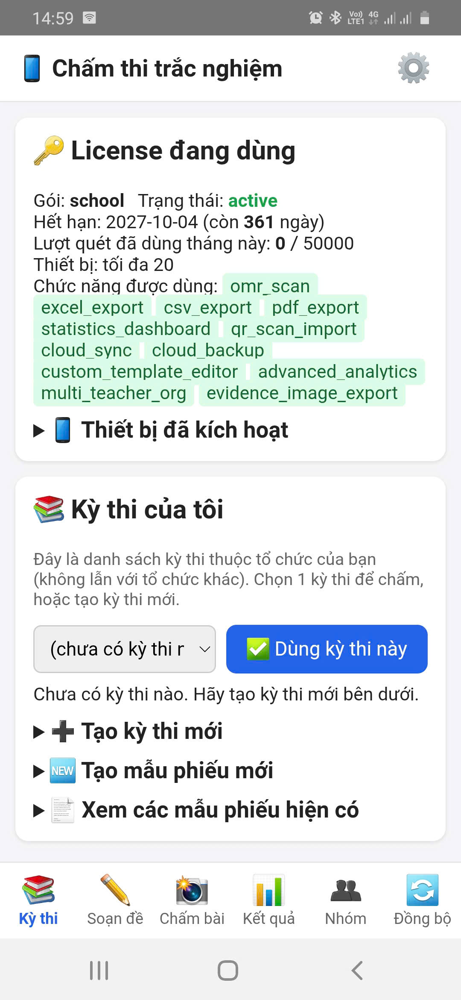
assets/img/shots/02-man-hinh-chinh.png3Tạo mẫu phiếu
Mẫu phiếu quy định hình dạng tờ giấy và số câu từng phần. Một mẫu dùng lại cho nhiều kỳ thi. Vào tab Kỳ thi → 🆕 Tạo mẫu phiếu mới.
- Chọn Khổ giấy (A4 hoặc A5) và hướng (dọc/ngang).
- Nhập số câu Phần I (nhiều lựa chọn), Phần II (Đúng/Sai), Phần III (trả lời ngắn); chọn 4 hay 5 phương án; chọn số chữ số của số báo danh và mã đề.
- Tuỳ chọn: nhập Tiêu đề phiếu (mặc định “PHIẾU TRẢ LỜI TRẮC NGHIỆM”) và Tên kỳ thi hiển thị trên phiếu. Với A4 có thể đổi thứ tự khối câu hỏi từ trên xuống dưới.
- Bấm 🖼️ Sinh & xem trước mẫu phiếu và kiểm tra hình phiếu.
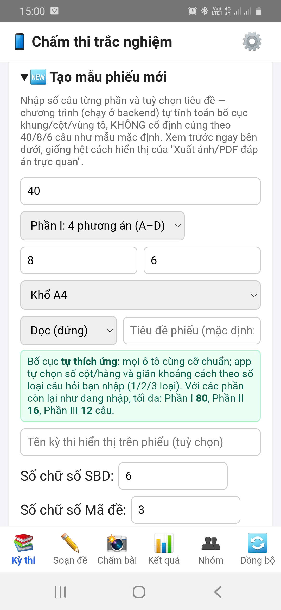
assets/img/shots/03-tao-mau-phieu.png
assets/img/shots/04-xem-truoc-mau-phieu.pngA5 dùng bố cục riêng, ô tô vẫn to như A4: Phần I tối đa 12 câu, Phần II tối đa 4 câu, Phần III tối đa 6 câu, số báo danh tối đa 8 chữ số, mã đề tối đa 4 chữ số. Chọn A5 thì form tự giảm số câu về mức tối đa; thứ tự khối và khoảng cách khối không áp dụng. Cần nhiều câu hơn → chọn A4.


📄 Xem các mẫu phiếu hiện có liệt kê mẫu mặc định và mẫu bạn đã tạo; chọn một mẫu để xem trước, rồi 🖨️ Tải phiếu trống (PDF) của mẫu này nếu chỉ cần file in.
Tạo mẫu phiếu tuỳ chỉnh có thể chỉ có ở một số gói license.
4Tạo kỳ thi
- Tab Kỳ thi → ➕ Tạo kỳ thi mới.
- Nhập Tên kỳ thi (ví dụ “Kiểm tra 15 phút - Toán”). Nếu danh sách mẫu phiếu trống, bấm 🔄 Tải danh sách mẫu phiếu, rồi chọn mẫu phiếu dùng cho kỳ thi này.
- Bấm Tạo kỳ thi.
- Trong 📚 Kỳ thi của tôi, bấm ✅ Dùng kỳ thi này cho kỳ thi muốn làm việc. Các tab Soạn đề, Chấm bài, Kết quả sẽ làm việc với kỳ thi đang chọn.

assets/img/shots/05-tao-ky-thi.pngTrước khi chấm, bắt buộc chọn một kỳ thi; nếu chưa, tab Chấm bài sẽ nhắc bạn quay lại tab Kỳ thi.
5Soạn đề & nhập đáp án
Tab Soạn đề → 📋 Xem & sửa đề hiện tại cho thấy mẫu phiếu đang dùng, các mã đề và đáp án đúng của kỳ thi. Một kỳ thi có thể có nhiều mã đề (ví dụ 101, 102 — muốn sinh nhiều mã từ một đề gốc, xem mục 7 Trộn đề); thí sinh tô mã đề ở bảng “8. Mã đề thi” trên phiếu và app tự chọn đáp án theo mã đó khi chấm.
- ➕ Thêm mã đề mới để tạo thêm mã đề.
- 👁️ Xem đáp án mã đề này để xem/sửa đáp án của mã đang chọn.
- 🖼️ Xuất ảnh/PDF đáp án trực quan (có 💾 Tải ảnh PNG và 📄 Xuất PDF) để giáo viên đối chiếu nhanh.
Quy ước ghi đáp án
| Phần | Cách ghi | Ví dụ |
|---|---|---|
| I | Một chữ cái đáp án đúng | A |
| II | 4 giá trị Đ/S theo thứ tự ý a, b, c, d | Đ,S,Đ,S |
| III | Một số, tối đa 4 ký tự kể cả dấu - và dấu phẩy (vì phiếu chỉ có 4 ô) | 12 · -3,5 · 0,67 |
Với Phần III, gõ dấu chấm hay dấu phẩy đều được — app đổi về dạng chuẩn và so khớp theo giá trị số. Nhập chữ hoặc quá 4 ký tự sẽ bị báo lỗi.

assets/img/shots/06-soan-de-dap-an.pngBa cách nhập đáp án
Gõ tay từng câu
Chọn đáp án từng câu rồi bấm 💾 Lưu các đáp án đã chọn vào mã đề đang xem.
Nhập hàng loạt từ Excel/CSV
📥 Lấy mẫu đáp án Excel (tệp có sẵn số dòng đúng với mẫu phiếu) → điền → 📤 Nhập đáp án từ file.
Quét một phiếu mẫu đã tô
Tô sẵn một phiếu đáp án đúng, rồi dùng 📷 Nhập đáp án bằng quét ảnh phiếu mẫu.
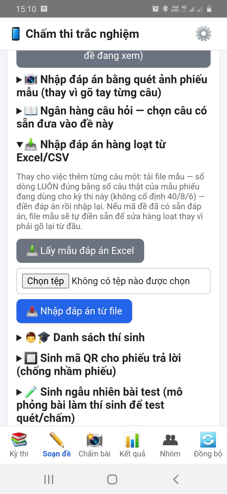
assets/img/shots/07-nhap-dap-an-excel.pngChi tiết cách quét phiếu mẫu
- In phiếu của đúng mẫu phiếu kỳ thi này và tô các đáp án đúng. SBD và mã đề trên phiếu mẫu không quan trọng, chỉ cần đúng các ô câu hỏi.
- Chọn mã đề cần điền, bấm 📷 Chụp ảnh (hoặc chọn ảnh có sẵn trong máy), rồi 🔍 Quét & nhận diện đáp án.
- Kiểm tra kết quả. Câu nào đọc không rõ (tô mờ, tô 2 đáp án, không đọc được) không tự áp dụng: bạn phải xem lại và xác nhận hoặc sửa tay trước khi lưu.
- Bấm 💾 Lưu các đáp án đã chọn vào mã đề đang xem.
Đối chiếu lại bằng ảnh/PDF đáp án trực quan sau khi nhập: một đáp án sai trong khoá sẽ làm sai điểm của cả lớp.
Ba cách nhập đáp án ở trên phù hợp khi bạn đã có đề. Nếu bạn soạn đề từ kho câu hỏi (có nội dung câu, phương án, công thức, hình), hãy dùng Ngân hàng câu hỏi (mục 6): nhặt câu → đưa vào mã đề → trộn đề (mục 7); đáp án được điền sẵn theo từng mã đề.
6Ngân hàng câu hỏi (Excel + LaTeX + hình)
Ngân hàng câu hỏi là kho câu hỏi lưu ngay trong điện thoại. Mỗi câu lưu đủ nội dung (câu dẫn, các phương án, đáp án đúng, lời giải) và phân loại (môn · khối · chủ đề · mức độ), kèm một mã câu do app tự cấp. Từ kho này bạn có thể nhặt câu để lập đề, trộn thành nhiều mã đề (mục 7) hoặc xuất ra Excel, LaTeX, bản in và Word. Câu hỏi nạp được từ Excel/CSV (mục 6.4) hoặc trực tiếp từ đề Word .docx (mục 6.8).
Vào tab Soạn đề → khung 📖 Ngân hàng câu hỏi (khung được thu gọn sẵn, bấm tiêu đề để mở). Khung này chỉ hiện khi bạn đã bấm ✅ Dùng kỳ thi này ở tab Kỳ thi.

6.1 Một câu hỏi gồm những gì?
| Loại câu | Nội dung lưu | Đáp án |
|---|---|---|
| Phần I — nhiều lựa chọn | Câu dẫn + phương án A, B, C, D (E tuỳ chọn) | Một chữ cái A–E |
| Phần II — Đúng/Sai | Câu dẫn + 4 ý a, b, c, d | 4 giá trị Đúng/Sai theo thứ tự a→d |
| Phần III — trả lời ngắn | Câu dẫn | Một số, tối đa 4 ký tự (kể cả dấu - và ,) |
| Phần IV — tự luận Mới | Câu dẫn (đề bài); lời giải đầy đủ | Barem/đáp án ngắn dạng văn bản (có thể chứa $LaTeX$); điểm mặc định 1,0 |
Câu tự luận không ảnh hưởng việc chấm phiếu: Phần IV bị loại khỏi bảng đáp án của phiếu, chấm điểm, thống kê và xuất kết quả trắc nghiệm. Nó vẫn được in cùng đề (có mục “PHẦN IV. Tự luận” kèm điểm từng câu, barem ở trang đáp án), tham gia trộn đề (chỉ đảo trong nội bộ Phần IV) và có thể chuyển sang chế độ Chấm tự luận (mục 7.3).
- Công thức viết bằng LaTeX trong
$...$(hoặc$$...$$,\( \),\[ \]), ví dụ$\dfrac{a}{\sin A}=2R$. App hiển thị công thức khi xem câu. - Hình được lưu riêng trong kho hình và gắn vào câu bằng thẻ
[[img:ten-hinh.png]]. Hình được app tự nén (tối đa khoảng 1000 px; mỗi hình không quá khoảng 1,5 MB). Phương án A–D cũng có thể là hình (ví dụ “Hàm số … có đồ thị là hình nào sau đây”). - Nhóm câu: nhiều câu có thể dùng chung một đoạn dẫn (đề đọc hiểu, bảng số liệu…) và đi liền nhau khi in/trộn — xem mục 6.10.
6.2 Mã câu hỏi
Mỗi câu có một mã gồm 7 đoạn theo quy tắc MON.LOP.CD.DT.PHAN.MUC.STT, ví dụ T.10.01.03.I.2.0007. Đoạn DT (dạng toán) là phần mới: dạng nằm trong chủ đề, giúp lọc và nhặt câu chi tiết hơn.
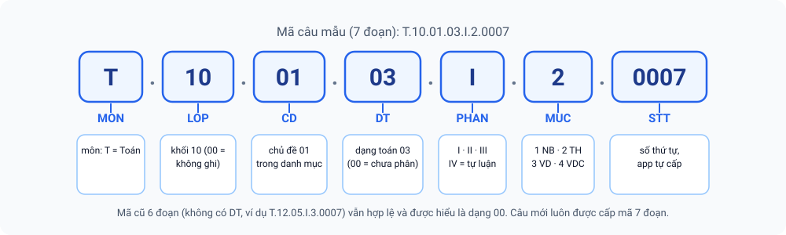
| Thành phần | Ý nghĩa |
|---|---|
MON | Mã môn 1–4 chữ in hoa: T Toán, L Vật lí, H Hoá học, SH Sinh học, V Ngữ văn, A Tiếng Anh, LS, DL, TIN, GD, CN, KHTN (thêm môn mới trong Danh mục) |
LOP | Khối, 2 chữ số (10, 11, 12); 00 = không ghi khối |
CD | Mã chủ đề, 2 chữ số, theo danh mục của (môn, khối): 01…89; 99 = chưa phân loại |
DT | Mã dạng toán, 2 chữ số, nằm trong chủ đề (ví dụ chủ đề “Mệnh đề” có các dạng: nhận biết mệnh đề; xét đúng–sai; mệnh đề phủ định; kéo theo/đảo/tương đương…). 00 = chưa phân dạng |
PHAN | I trắc nghiệm · II đúng/sai · III trả lời ngắn · IV tự luận |
MUC | 1 Nhận biết · 2 Thông hiểu · 3 Vận dụng · 4 Vận dụng cao · 0 chưa phân mức |
STT | Số thứ tự 4 chữ số trong cùng nhóm MON.LOP.CD.DT.PHAN.MUC, app tự cấp (số lớn nhất đang có + 1) |
- Mặc định là tự động: bạn chọn Môn/Khối/Chủ đề/Mức độ từ danh sách, app sinh mã. Trong file Excel, nên để trống cột
Ma_cau. - Nhập mã tay vẫn có quy tắc: mã phải đúng định dạng, khớp các trường phân loại của câu và không trùng mã khác; nếu không, app báo lỗi, chỉ ra chỗ lệch và gợi ý mã đúng.
- Đổi phân loại thì mã đổi theo (app báo trước). Nạp lại một mã cũ từ Excel (cột
Ma_cau) sẽ cập nhật câu đó, không tạo câu trùng. - Mã cũ 6 đoạn (ví dụ
T.12.05.I.3.0007) vẫn hợp lệ, được hiểu là dạng00và không bị đổi; câu mới luôn được cấp mã 7 đoạn. Khi nhập mã tay, mã cũ chỉ khớp với câu chưa phân dạng; câu đã có dạng phải dùng mã 7 đoạn. - Câu cũ chưa có mã chuẩn: bấm 🔢 Cấp mã chuẩn cho câu chưa có. Câu có môn không nằm trong danh mục bị bỏ qua và app nêu lý do, không gán bừa.
6.3 Danh mục môn · chủ đề · mức độ
Bấm 👁️ Xem danh mục & quy tắc mã để xem và chỉnh danh mục (lưu trên máy của bạn; hỗ trợ khối 1–12): thêm, đổi tên, xoá chủ đề (mã chủ đề tự cấp), ➕ Thêm môn, ➕ Thêm chủ đề, ➕ Thêm dạng (bảng “Dạng toán của chủ đề”: sửa tên, xoá, thêm; mã dạng tự cấp 01–89), 📤 Xuất danh mục (Excel) / nạp lại sheet DanhMuc (cột Ma_mon, Ten_mon, Khoi, Ma_chu_de, Ten_chu_de, cùng các cột mới Chuong, Ma_dang, Ten_dang), ↩️ Khôi phục mặc định.
Muốn có sẵn danh mục chi tiết cho Toán, bấm 📘 Nạp Toán 10–12 theo Bảng phân bố (99 chủ đề, 698 dạng): app thay toàn bộ chủ đề và dạng của môn Toán bằng danh mục theo Bảng phân bố kiến thức (Chương → Bài → Dạng); các môn khác giữ nguyên. Câu đã lưu giữ nguyên mã; dùng 🏷️ Phân loại lại… để xếp chúng sang chủ đề/dạng mới.
Mặc định chỉ có Toán 10–12, xếp theo thứ tự chương SGK (kiểu chương trình Kết nối tri thức), chưa chia dạng. Hãy đối chiếu với phân phối chương trình của trường và sửa ngay trong app (hoặc nạp bảng phân bố ở trên). Các môn khác chưa có chủ đề: thêm tay hoặc nạp từ Excel.

assets/img/shots/18-ngan-hang-danh-muc-ma-cau.png6.4 Nạp câu hỏi từ Excel/CSV (kèm hình)
- Bấm 📥 Tải mẫu Excel. Tệp mẫu có sẵn 4 câu ví dụ và một sheet hướng dẫn.
- Điền vào sheet
CauHoi(mỗi dòng một câu). CộtMa_caunên để trống. - Chọn một lần: tệp Excel/CSV cùng các tệp hình, hoặc một tệp .zip chứa Excel và thư mục hình.
- Tuỳ chọn: nhập Môn mặc định/Khối mặc định (dùng khi ô
Mon/Khoitrống); giữ dấu tick Bỏ qua câu trùng nội dung nếu không muốn lưu câu đã có. - Bấm 🔍 Đọc & kiểm tra. Lỗi được báo đúng số dòng trong Excel; câu lỗi bị bỏ qua; thiếu hình chỉ cảnh báo. Có nút 🙈 Ẩn xem trước để thu gọn bảng.
- Bấm 💾 Lưu vào ngân hàng, hoặc 💾 Lưu + đưa luôn vào mã đề đang xem để đưa thẳng các câu vào mã đề (câu trùng sẽ dùng lại câu đã có).

assets/img/shots/16-ngan-hang-nap-excel.pngCác cột của sheet CauHoi
| Cột | Nội dung |
|---|---|
Loai | Loại câu: Phần I / II / III / IV (Phần IV ghi 4 hoặc TL) |
Ma_cau | Để trống để app tự cấp. Trùng một mã đã có → cập nhật câu đó |
Mon, Khoi, Chu_de, Muc_do | Phân loại. Chu_de nhận mã (05, 05 - Hàm số) hoặc tên (không phân biệt dấu); gõ tắt chỉ khớp một chủ đề thì được nhận kèm cảnh báo; không khớp → lỗi kèm gợi ý “gần giống”. Muc_do nhận 1–4, NB/TH/VD/VDC hoặc tên mức |
Dang_toan | (Mới) Dạng toán trong chủ đề — mã hoặc tên. Cột Dang đứng một mình vẫn là loại câu như trước |
Cau_hoi, Hinh | Câu dẫn (có thể chứa $LaTeX$), tên tệp hình |
A…E | Phương án Phần I (cần đủ A–D; E tuỳ chọn). Với Phần II có thể dùng A–D làm 4 ý |
Y_a…Y_d | 4 ý của Phần II |
Dap_an, Diem, Loi_giai | Đáp án, điểm (tuỳ chọn), lời giải (tuỳ chọn) |
Cách ghi Dap_an: Phần I một chữ A–E; Phần II bốn giá trị như Đ,S,Đ,S, ĐSĐS, Đúng Sai Đúng Sai hoặc T F T F; Phần III một số tối đa 4 ký tự (dấu chấm tự đổi thành dấu phẩy); Phần IV là barem/đáp án dạng văn bản. Tiêu đề cột đọc không phân biệt dấu và hoa/thường và nhận một số tên đồng nghĩa.
Không cần chuyển sang Excel bằng tay: ngân hàng đọc trực tiếp tệp .docx (kể cả công thức Equation/MathType và hình). Xem mục 6.8. Tệp .pdf và .doc (Word cũ) thì chưa đọc được.
6.5 Xem, lọc và quản lý câu đã lưu
Mục ② Danh sách câu đã lưu (bấm 🔄 Tải danh sách; 🙈 Ẩn danh sách để thu gọn):
- Lọc bằng danh sách chọn lấy từ chính dữ liệu của bạn (môn → khối → chủ đề), cộng Loại, Mức độ, Trạng thái (chưa dùng · đã dùng · thiếu nội dung phương án · thiếu hình · chưa có mã chuẩn · trùng nội dung · chưa phân loại — chưa có chủ đề, hoặc chủ đề có danh mục dạng mà câu chưa chọn dạng) và ô tìm chữ/mã. Bộ lọc chủ đề nay đi tiếp xuống dạng toán. Có thể sắp xếp theo mã, mới nhất, dùng nhiều/ít, mức độ; có thống kê số câu I/II/III và theo mức của các câu đã chọn.
- Từng câu: xem chi tiết (câu Phần IV hiện Đáp án/barem và Lời giải), sửa, ⧉ nhân bản, xoá. Bốn loại câu có nền và nhãn màu khác nhau (I xanh dương, II xanh lá, III vàng, IV tím) kèm chú giải.
- 🆕 Chọn câu vừa thêm: lọc và tick các câu tạo ở lần lưu gần nhất (nạp Word/Excel, thêm tay, nhân bản) để phân loại hoặc đưa vào đề ngay; bấm lần nữa (✖ Bỏ lọc câu vừa thêm) để bỏ lọc.
- Hàng loạt (tick chọn nhiều câu, hoặc Chọn tất cả (đang lọc)): ➕ Đưa câu đã chọn vào mã đề đang xem · 📊 Xuất đã chọn (Excel) · 📦 Xuất đã chọn (LaTeX .zip) (có tick kèm đáp án, kèm lời giải) · 🏷️ Phân loại lại… (đổi môn/khối/chủ đề/dạng/mức, mã cấp lại; đổi chủ đề mà không chọn dạng thì câu về dạng
00) · 🔗 Gộp thành nhóm (đoạn dẫn chung) / ✂ Tách nhóm · 🗑 Xoá đã chọn. - Đưa đi nơi khác (các nút trong mục 📤 Xuất các câu đã chọn): 📊 Excel · 📦 LaTeX (.zip) · 🖨️ Bản in · 📝 Word (.docx); 🌐 Giao bài online với câu đã chọn (mục 16); ✍️ Chuyển câu Phần IV đã chọn sang “Chấm tự luận” (mục 15).

assets/img/shots/17-ngan-hang-danh-sach-loc.png6.6 Nhặt câu để lập đề
Mục ③ Nhặt câu để tạo đề chỉ nhặt trong phạm vi bộ lọc đang chọn, ưu tiên các câu ít được dùng, báo rõ khi thiếu câu, và tick sẵn kết quả để bạn xem lại trước khi đưa vào mã đề. Ba cách chọn:
Chọn tay
Tick từng câu trong danh sách, rồi ➕ Đưa câu đã chọn vào mã đề đang xem.
Nhặt nhanh
Nhập số câu Phần I/II/III cần lấy rồi bấm Nhặt: chọn ngẫu nhiên trong phạm vi bộ lọc.
Theo ma trận
Mỗi dòng: Phần × chủ đề × dạng toán × mức độ × số câu; ➕ Thêm dòng rồi 🎲 Nhặt theo ma trận. Ô Dạng toán luôn hiện (chọn chủ đề trước thì liệt kê các dạng đang có trong ngân hàng kèm số câu). Không trùng câu giữa các dòng; báo thiếu theo từng dòng.
Có sẵn ma trận / bảng đặc tả bằng Word? Nạp thẳng vào đây và sau khi nhặt xuất lại thành Word — xem mục 6.11.

assets/img/shots/19-ngan-hang-nhat-ma-tran.png6.7 Thêm hoặc sửa một câu bằng tay
Mục ④ Thêm / sửa một câu: bấm ➕ Thêm câu mới bằng tay (hoặc chọn sửa một câu có sẵn). Chọn loại (Phần I–IV), Môn/Khối/Chủ đề/Dạng/Mức độ (mã tự sinh; tick nhập mã tay nếu cần), gõ câu dẫn (công thức dạng $x^2+1$; 🖼️ Chèn hình… để gắn hình), điền phương án A–E hoặc ý a–d, Đáp án, Điểm và Lời giải (tuỳ chọn), rồi 💾 Lưu vào ngân hàng.

assets/img/shots/20-ngan-hang-trinh-sua-cau.png👁️ Xem kho hình liệt kê các hình đã nạp (tên hình được chuẩn hoá: lấy tên tệp, chữ thường, khoảng trắng đổi thành _).
Sao lưu Google Drive hiện theo kỳ thi; ngân hàng, kho hình và danh mục có cách sao lưu riêng: bấm 💾 Sao lưu ngân hàng (.zip) để có một tệp .zip gồm toàn bộ câu hỏi, kho hình và danh mục (hãy cất ở nơi an toàn: Drive, USB…). Khôi phục bằng 🔍 Đọc bản sao lưu → ♻️ Khôi phục: cập nhật theo mã câu, bỏ qua câu trùng nội dung, thêm phần còn thiếu (tick “thay thế danh mục” nếu muốn ghi đè danh mục). Vẫn có thể dùng 📤 Xuất cả ngân hàng ra Excel, nhưng hình nằm trong kho, không nằm trong tệp Excel; nếu muốn có cả hình, dùng 📥 Tải Excel + hình (.zip) để chỉnh sửa.
6.8 Nhập đề từ Word (.docx) Mới
Vào Soạn đề → 📖 Ngân hàng → mục ① Nạp câu hỏi, chọn tệp .docx (điền Môn mặc định, Khối mặc định trước) → bấm 🔍 Đọc & kiểm tra → xem trước → 💾 Lưu vào ngân hàng. Việc đọc chạy ngay trên máy, không cần mạng và không cần máy chủ.
- App đọc được gì: đoạn văn, bảng, đánh số tự động, chỉ số trên/dưới; công thức Equation (OMML) và MathType được đổi sang LaTeX; hình ảnh (cả WMF/EMF được vẽ lại thành ảnh) và khung vẽ (Shape).
- Nhận đáp án theo thứ tự ưu tiên: đáp án gạch chân → in đậm → dòng “Chọn X”/“Đáp án”. Phần II không có ý nào gạch chân thì ưu tiên bảng “ĐÁP ÁN MÃ ĐỀ” ở cuối đề; nếu không có, app tạm coi cả 4 ý là sai (S,S,S,S) và báo cảnh báo vàng để bạn kiểm tra.
- Phần I–IV: tiêu đề chứa “TỰ LUẬN” hoặc “PHẦN IV” thì các câu sau đó là Phần IV (hoặc chọn Kiểu đề: Toàn bộ là tự luận). Lời giải đầy đủ được đặt vào Lời giải; ô Đáp án/barem để bạn tự điền nếu cần.
- Đáp án A–D là hình: các kiểu xếp phổ biến (nhãn A–D cùng đoạn với hình, hàng nhãn rồi hàng hình, hình nổi, 4 hình không nhãn ở cuối câu dẫn…) đều được tách thành 4 phương án; hình hiện ngay dưới câu dẫn trong bảng xem trước, đáp án đúng tô xanh.

assets/img/shots/44-nhap-word-xem-truoc.pngKiểm tra trước khi lưu
Trong bảng xem trước, dùng các bộ lọc để xử lý nhanh: 🟧 công thức dạng ảnh/khung vẽ cần xem · ⚠ có cảnh báo · ❓ thiếu đáp án. Bạn có thể xem ảnh ngay trong bảng, bấm ✏ sửa (câu dẫn, phương án, lời giải) hoặc ⚙ sửa đầy đủ (loại câu, điểm, môn, khối, chủ đề, dạng, mức độ, mã, đáp án), 🚫 Bỏ các câu đã tick hoặc 🚫 Bỏ tất cả câu 🟧 chưa xem, rồi mới bấm 💾 Lưu vào ngân hàng cho cả lô. Nút 📥 Tải Excel + hình (.zip) để chỉnh sửa xuất bản đọc từ Word đúng mẫu để sửa tay rồi nạp lại. Trên điện thoại, bảng xem trước hiện dạng thẻ từng câu (không phải kéo ngang).
- Chỉ đọc .docx; không đọc .doc (Word cũ) hay PDF.
- Không hỗ trợ: MathType đời cũ (Equation 3.0), hình EMF+ , ảnh .wdp, chữ nằm trong khung vẽ — các câu này được đánh dấu 🟧 “cần xem”.
- Tích phân, tổng, ma trận mới được thử trên ít dữ liệu thật; hãy đối chiếu kỹ công thức phức tạp.
- Đề lớn (100+ câu) có thể mất vài giây đến vài chục giây trên máy yếu. Chức năng đã được thử trên trình duyệt máy tính với đề thật; chưa thử đầy đủ trên mọi điện thoại — hãy thử với một đề nhỏ trước.
6.9 Công thức dạng ảnh → LaTeX bằng AI Thử nghiệm
Câu có công thức là ảnh (đánh dấu 🟧) không tìm kiếm hay sửa được. Bạn có thể nhờ AI đọc ảnh và viết lại thành LaTeX.
- Đọc đề Word như ở mục 6.8. Trong khung 🤖 Công thức dạng ảnh → LaTeX (ngay dưới các nút lọc 🟧) bấm ⚙ Cài đặt AI lần đầu: chọn nền tảng AI (Google Gemini mặc định, hoặc Anthropic Claude, OpenAI) và dán khoá API của chính bạn. Nếu nền tảng chưa có khoá, app hiện khung “Chưa có khoá?” kèm nút 🔑 Mở trang lấy khoá.
- Chọn phạm vi (các câu 🟧 chưa xử lý, hoặc các câu đã tick) và số câu Song song; bấm 🔎 Nhận dạng công thức ảnh → LaTeX rồi xác nhận hộp thoại gửi dữ liệu.
- Câu đã xử lý chuyển sang nhóm ⚠ Có cảnh báo. Bấm ✏ sửa để xem trước công thức, đối chiếu với ảnh gốc và sửa; tick Đã xem/xử lý xong khi kiểm tra xong. ↩ Hoàn tác AI trả câu về như đọc từ Word.
Nút 🔎 còn có ở khung ✏️ sửa câu của ngân hàng, từng câu trong danh sách (liên kết “🔎 ảnh→LaTeX”, chỉ hiện ở câu còn thẻ hình), nhiều câu đã tick (🛠 Quản lý các câu đã chọn, có ↩ Hoàn tác lần nhận dạng vừa rồi) và khi sửa câu trong mã đề.
- Quy tắc: hình công thức/ký hiệu →
$…$; hình có cả chữ lẫn công thức → chép lại chữ kèm$…$; hình minh hoạ (đồ thị, hình học, bảng…) hoặc hình AI không chắc → giữ nguyên thẻ[[img:…]]. AI không giải bài và không đổi đáp án; LaTeX được kiểm bằng KaTeX, lỗi cú pháp thì tự nhờ AI sửa một lần. App cảnh báo khi AI có vẻ bỏ chữ hoặc hình không gửi được (WMF/EMF/SVG không gửi được). - Nhiều khoá, tự đổi khoá: bạn có thể dán nhiều khoá cho mỗi nền tảng (mỗi dòng một khoá); khi khoá đang dùng hết hạn mức hoặc báo lỗi do khoá, app tự chuyển sang khoá kế tiếp. Kho khoá dùng chung cho Chấm tự luận (mục 15) và chức năng này; khoá được lưu trên máy bạn, không nằm trong sao lưu.

assets/img/shots/45-ai-cong-thuc-anh.pngChỉ khi bạn bấm nút, chữ và hình của các câu được chọn mới được gửi trực tiếp từ máy bạn tới nền tảng AI đã chọn bằng khoá của bạn (không qua máy chủ của ExamMark-PTC). Với gói miễn phí của Google AI Studio, điều khoản của Google có thể cho phép dùng nội dung gửi lên để cải thiện dịch vụ — đừng gửi đề còn bảo mật; hãy tự kiểm tra điều khoản hiện hành của nhà cung cấp. Tính năng còn mới: chưa được kiểm chứng với dịch vụ AI thật trên mọi thiết bị, nên luôn đối chiếu kết quả với ảnh gốc.
6.10 Nhóm câu, kho hình và sửa câu trong mã đề
- Nhóm câu (đoạn dẫn chung): thanh 🔗 Nhóm câu trên danh sách chỉ hiện câu thuộc nhóm, nhóm chưa có đoạn dẫn, hoặc câu lẻ (cũng có trong ô lọc trạng thái; sắp theo nhóm). Mỗi nhóm có khung xanh ở đầu với ✏️ Sửa/Thêm đoạn dẫn (xem trước công thức) và ☑ Chọn cả nhóm. Bấm nhãn “🔗 nhóm câu 1/2…” trên từng câu để nhảy tới khung và mở ô sửa. Khi trộn đề, các câu cùng nhóm đi liền nhau (mục 7.2).
- Kho hình: 👁️ Xem kho hình hiện mỗi hình kèm “🔗 N câu” hoặc “⚠ chưa có câu dùng”. Bấm hình để xem danh sách câu đang dùng (👁 xem · ✏️ sửa · 🗑 xoá câu kèm hình) và đặt cỡ in riêng (mm) cho hình đó; có nút Đổi hình, lọc theo tên, và lọc/xoá hàng loạt hình chưa có câu dùng. Cỡ chung khi in nằm ở Tùy chọn bản in (mặc định 70 × 55 mm, chỉ thu nhỏ, không phóng to).
- Sửa câu ngay trong mã đề: ở 👁️ Xem nội dung mã đề đang xem, mỗi câu hiện đáp án, điểm, 💡 lời giải và nút ✏️ Sửa câu / đáp án / lời giải: sửa câu dẫn, phương án A–E / ý a–d, đáp số Phần III, barem tự luận, lời giải, điểm và cả đoạn dẫn chung của nhóm (áp cho mọi câu cùng nhóm trong mã đề), có xem trước ngay. Mức độ chọn từ danh sách (chưa phân mức · Nhận biết · Thông hiểu · Vận dụng · Vận dụng cao); đổi mức thì mã câu cấp lại cho khớp.
- Xuất rồi nạp lại không báo lỗi: các tệp do chính app xuất (Excel, gói LaTeX kèm
ngan_hang_*.xlsx, bản in HTML, Word có khối “ĐÁP ÁN MÃ ĐỀ”) đều nạp lại được ở mục ① (ô chọn tệp nhận cả.html). - Thông báo & tác vụ dài: tác vụ lâu (đọc Word, lưu, xuất, trộn đề, sao lưu…) hiện thanh nổi “⏳ Đang … (n giây)” và chặn bấm đúp; thông báo kết quả có nút ✕ Ẩn, lịch sử thông báo xoá được.
6.11 Ma trận đề: nạp từ Word, xuất ra Word Mới
Ở mục ③ Nhặt câu để tạo đề → Theo ma trận:
- Nạp ma trận/bảng đặc tả từ Word: chọn tệp
.docx→ 🔍 Đọc file. App tìm mọi bảng ma trận/đặc tả trong tệp (ví dụ giữa kì, cuối kì); chọn bảng cần dùng. - Bấm ➕ Tạo các dòng ma trận: mỗi (nội dung × mức Biết/Hiểu/Vận dụng × phần) thành một dòng như khi bấm “Thêm dòng”. Tick “thay các dòng hiện có” để xoá dòng cũ (bỏ tick = thêm vào cuối).
- App tự ghép tên nội dung với chủ đề trùng tên trong ngân hàng (✓). Dòng không ghép được hoặc mơ hồ để trống (⚠) — bạn chọn tay, app không đoán bừa. Cột Yêu cầu cần đạt của bảng đặc tả hiện ở mục “📌 Yêu cầu cần đạt” của từng dòng, trong khung Nhắc khi chọn câu và mục 🔎 Đối chiếu sau khi nhặt.
- Bấm 🎲 Nhặt theo ma trận. App tự tải tệp
Ma_tran_da_nhat_<ngày>_<giờ>.docx(bỏ tick “Tự tạo file Word…” nếu không muốn); nút 📄 Xuất Word ma trận (lần nhặt gần nhất) xuất lại, phản ánh các câu còn tick.

assets/img/shots/46-ma-tran-tu-word.pngTệp Word xuất ra (A4 ngang) gồm: bảng ma trận chuẩn (TT, chủ đề, nội dung, Biết/Hiểu/Vận dụng × TNKQ/Đúng–Sai/Trả lời ngắn/Tự luận, tổng, tỉ lệ), tổng số câu/điểm/%; danh sách câu đã nhặt (số thứ tự, mã câu, chủ đề, dạng toán, mức, điểm); và phần đối chiếu bảng đặc tả nếu có. Dòng chưa đủ câu được tô đỏ.
- Cách đọc ô trong bảng:
3C1C2C3,C2, C3, C4,C1–C6, chỉ số3; Đúng–SaiC13a,b,c,2C13c,b. Với Phần II, các ý của cùng một câu được gom lại; nếu các ý nằm ở hai nội dung khác nhau thì dòng có ghi chú. Tổng số câu ghi trong bảng được đối chiếu với số câu đọc được — lệch thì cảnh báo. - Cần bảng có nhóm cột Nhiều lựa chọn / Đúng–Sai / Trả lời ngắn / Tự luận và các cột Biết / Hiểu / Vận dụng; chỉ đọc
.docx. - Đã chạy thử trên trình duyệt máy tính (nạp → ghép chủ đề → nhặt → tải Word → mở được bằng LibreOffice); chưa kiểm chứng trên điện thoại/APK thật.
6.12 Từ ngân hàng ra đề thi, đề ôn và tài liệu: các đường đi Chi tiết
Ngân hàng có năm khối thao tác theo thứ tự trên màn hình: ① Nạp câu hỏi (Word/Excel/CSV/ZIP) · ② Danh sách câu đã lưu — lọc, chọn, đưa vào đề · ③ Nhặt câu để tạo đề (theo số câu hoặc theo ma trận) · ④ Thêm/sửa một câu · ⑤ Sao lưu & khôi phục. Từ các câu đã tick ở khối ②, bạn đi tiếp theo một trong bốn đường dưới đây.
| Mục đích | Nút dùng | Kết quả |
|---|---|---|
| A. Đề trắc nghiệm nhiều mã đề, chấm bằng phiếu | ➕ Đưa câu đã chọn vào mã đề đang xem → 🔀 Trộn đề & xuất đề | Câu vào mã đề gốc cùng đáp án và nội dung phương án; trộn thành nhiều mã; in phiếu, chấm |
| B. Đề ôn / đề 15 phút / tài liệu một bản (không trộn) | 📤 Xuất các câu đã chọn → Bản in · Word · LaTeX · Excel | Một tệp gồm đúng các câu đã tick, kèm đáp án/lời giải tuỳ chọn |
| C. Giao cho học sinh làm online | 🌐 Giao bài online với câu đã chọn | Chuyển sang tab Phòng thi với các câu đã chọn (đủ nhóm đoạn dẫn, đúng thứ tự Phần I→III) |
| D. Chấm câu tự luận | ✍️ Chuyển câu Phần IV đã chọn sang “Chấm tự luận” | Tạo kỳ thi tự luận từ các câu Phần IV |
Đường A — Lập đề nhiều mã từ ngân hàng
- Chuẩn bị mã đề gốc. Ở tab Soạn đề (mục 5) tạo kỳ thi và một mã đề (ví dụ 101); bấm 👁️ Xem đáp án mã đề này để chọn nó làm “mã đề đang xem”. Không có bước này, nút “Đưa vào mã đề” sẽ nhắc bạn chọn mã đề trước.
- Thu hẹp danh sách (khối ②). Lọc theo môn · khối · chủ đề · dạng toán · loại (Phần I–IV) · mức độ · trạng thái; mẹo: trạng thái Chưa dùng đề nào và sắp xếp Dùng ít trước giúp tránh lặp câu giữa các đề; Gom theo nhóm câu để thấy trọn các nhóm đoạn dẫn. Bên dưới danh sách có thống kê các câu đã chọn.
- Chọn câu. Tick từng câu, hoặc Chọn tất cả (đang lọc) / Bỏ chọn. Hoặc dùng khối ③ Nhặt câu để tạo đề: Theo số câu (nhập số câu Phần I, II, III, IV rồi Nhặt) hoặc Theo ma trận (mục 6.11). Việc nhặt chỉ lấy trong phạm vi bộ lọc đang chọn, ưu tiên câu ít được dùng và tick sẵn kết quả để bạn xem lại, bỏ hoặc thay trước khi đưa vào đề.
- Đưa vào mã đề. Bấm ➕ Đưa câu đã chọn vào mã đề đang xem. App kiểm tra số câu có vượt giới hạn của mẫu phiếu không (nếu vượt sẽ báo và dừng), sắp theo Phần I → II → III, giữ các câu cùng nhóm liền nhau (tự kéo theo cả nhóm đoạn dẫn), rồi ghi vào mã đề kèm đáp án và nội dung phương án. Dấu tick được xoá sau khi đưa vào; câu Phần IV được “nhớ” để chuyển sang Chấm tự luận nếu cần. Có sẵn nút 💾 Lưu + đưa luôn vào mã đề đang xem ngay khi nạp đề Word/Excel (khối ①).
- Rà soát. 👁️ Xem nội dung mã đề đang xem để đọc lại và sửa từng câu/lời giải/điểm ngay trong mã đề (mục 6.10).
- Trộn và xuất ở khối 🔀 Trộn đề & xuất đề (mục 7): sinh các mã đề, xuất Bản in (PDF)/Word/LaTeX/Excel, in phiếu trả lời tương ứng.
Đường B — Xuất tài liệu/đề một bản từ các câu đã chọn
- Tick các câu cần dùng (có thể lẫn Phần I–IV; câu trong nhóm được kèm đủ đoạn dẫn).
- Mở 📤 Xuất các câu đã chọn, tick kèm đáp án và/hoặc kèm lời giải theo ý muốn.
- Chọn định dạng: 🖨️ Bản in (tệp HTML dàn trang, mở bằng trình duyệt rồi in/lưu PDF) · 📝 Word (.docx) (chỉnh sửa tiếp; đáp án để tệp riêng hoặc cuối tệp theo ô “Xuất Word — đáp án”) · 📦 LaTeX (.zip) · 📊 Excel (chia sẻ cho đồng nghiệp hoặc nạp sang máy khác).
- Muốn bố cục giống đề thi thật (tiêu đề Sở/Trường, kỳ thi, năm học, thời gian, khung họ tên, chân trang…) chỉnh ở 🖨️ Tùy chọn bản in đề thi thực tế trước khi xuất (mục 7.3).
Các câu được đánh số lại từ 1 trong từng Phần (I, II, III, IV); tên tài liệu mặc định là “CÂU HỎI TỪ NGÂN HÀNG” với mã đề NH, đổi lại được trong bản in/Word. Đây là bản đề không trộn; muốn nhiều mã đề hãy đi đường A.
Nạp ma trận từ Word (6.11) → 🎲 Nhặt theo ma trận → xem lại các câu đã tick và mục 🔎 Đối chiếu → ➕ Đưa vào mã đề đang xem → 📄 Xuất Word ma trận để nộp kèm đề → trộn mã đề → in phiếu. Câu đã nằm trong một mã đề được tính là Đã dùng, nên lần sau lọc Chưa dùng đề nào là dễ chọn câu mới.
7Trộn đề & xuất đề
Từ một mã đề gốc đã có đủ nội dung câu hỏi, ExamMark-PTC sinh ra nhiều mã đề mới (ví dụ 102, 103, 104…) với thứ tự câu và vị trí phương án khác nhau, rồi ghi lại đáp án đã trộn vào từng mã đề của kỳ thi — máy chấm nhận ngay các mã mới, không phải nhập đáp án lại.
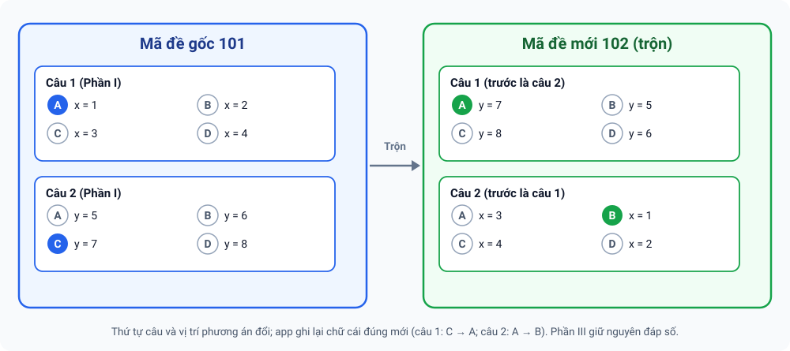
7.1 Các bước trộn đề
- Hoàn thiện mã đề gốc: đưa câu từ ngân hàng vào (mục 6.6). Trong khung 📋 Xem & sửa đề hiện tại, chọn mã đề gốc ở danh sách mã đề (mã đề đang xem là mã sẽ được dùng để trộn).
- Mở khung 🔀 Trộn đề & xuất đề — sinh mã đề mới từ mã đề đang xem và đặt:
- Số mã đề cần sinh (1–20; mặc định 4);
- Mã đề đầu, ví dụ
102, và Bước giữa các mã (mặc định tăng dần 1; đặt 2 để ra 101, 103, 105…); - Seed (tuỳ chọn): để trống = ngẫu nhiên; dùng lại cùng seed sẽ trộn y hệt lần trước.
- Chọn các kiểu đảo: Đảo thứ tự câu, Đảo phương án (Phần I), Đảo ý a–d (Phần II), Đảo cả câu tự luận (Phần IV) (mặc định đều bật), cùng hai tuỳ chọn cho nhóm câu: Đảo vị trí các nhóm (mặc định bật) và Đảo thứ tự câu trong mỗi nhóm (mặc định tắt).
- Bấm 🔀 Xem thử để xem bảng đáp án gộp của các mã đề và các cảnh báo. Có nút 🙈 Ẩn bảng xem thử.
- Hài lòng thì bấm 💾 Lưu các mã đề vào kỳ thi. Các mã đề mới xuất hiện trong danh sách mã đề và dùng được ngay khi chấm.

assets/img/shots/21-tron-de-xem-thu.pngThí sinh tô mã đề ở bảng “Mã đề thi” trên phiếu, nên số chữ số của mã đề (ví dụ 102 là 3 chữ số) không được vượt số cột mã đề của mẫu phiếu đang dùng.
7.2 Quy tắc trộn
| Phần | App làm gì |
|---|---|
| Phần I | Đảo thứ tự câu; đảo phương án A–D (E) và ghi lại chữ cái đúng mới |
| Phần II | Đảo thứ tự câu; đảo 4 ý a–d, kèm đáp án Đúng/Sai tương ứng |
| Phần III | Đảo thứ tự câu; giữ nguyên đáp số |
| Phần IV (tự luận) | Chỉ đảo thứ tự câu/khối trong nội bộ Phần IV (tắt được bằng tuỳ chọn trên); không đảo phương án; không ảnh hưởng đáp án phiếu |
| Nhóm câu | Các câu cùng đoạn dẫn đi liền nhau; khi mọi câu của phần đều thuộc nhóm thì đảo cả nhóm |
- Không đảo những phương án phụ thuộc vị trí (như “Cả A và B đều đúng”, “Tất cả các đáp án trên”, “Không có đáp án nào đúng”) và những ý có nhắc tới ý khác. App cảnh báo cụ thể câu nào được giữ nguyên.
- Câu chưa lưu nội dung phương án (chỉ có đáp án chữ, ví dụ nhập từ phiếu mẫu) thì chỉ đảo được thứ tự câu.
- Các mã đề sinh ra luôn khác nhau và khác đề gốc (app thử lại tối đa 25 lần nếu trùng).
- ⧉ Nhân bản mã đề đang xem: tạo mã đề mới y nguyên câu, phương án và đáp án — tiện để sửa nhỏ thành một mã khác.
7.3 Xem và xuất các mã đề
Mục Các mã đề của kỳ thi & xuất để soạn/in bên ngoài hiển thị số câu từng phần của mỗi mã đề và có các nút:
- 👁️ Xem nội dung mã đề đang xem (có nút ẩn lại);
- 📊 Excel (đáp án + nội dung): sheet
DapAn(bảng đáp án gộp) và mỗi mã đề một sheet theo đúng mẫu; - 📦 Gói LaTeX (.zip): gồm
de_<mã>.tex, thư mụcimages/vàbang_dap_an.csv; biên dịch bằngpdflatex(gói tiếng Việt T5). Có tick .tex kèm trang đáp án và kèm lời giải. - 🖨️ Bản in (HTML → PDF) Mới: tạo tệp
de_<mã>.html(nhiều mã đề thì gói.zip) đã dàn trang như đề thi thực tế. Mở bằng Chrome/Edge/Safari → In (Ctrl+P) → Lưu thành PDF; công thức và hình đã nhúng sẵn, không cần mạng. - 📝 Word (.docx) để chỉnh sửa Mới: mỗi mã đề một tệp Word có bố cục như bản in; công thức được đổi sang equation gốc của Word. Ô 📝 Xuất Word — đáp án chọn đáp án ra tệp riêng (
…_dapan.docx) hoặc ở cuối tệp đề; nhiều tệp thì gói.zip. - 🖨️ Tùy chọn bản in đề thi thực tế: nhập tên Sở/Trường, kỳ thi, năm học, môn, lớp, thời gian; bật/tắt khung “Họ tên · SBD · Lớp”, chân trang (Mã đề · trường), số trang, “ĐỀ CHÍNH THỨC”, dòng Họ tên/SBD cuối đề, đánh số câu liên tục; chỉnh cỡ chữ, giãn dòng, khoảng cách giữa các câu, lề và cỡ tối đa của hình. Cài đặt được nhớ cho lần sau.
- 🗑 Xoá mã đề đang xem: xoá một mã đề khỏi kỳ thi (hãy chắc chắn trước khi xoá).
- ✍️ Chuyển câu tự luận (Phần IV) của mã đề này sang “Chấm tự luận” Mới: tạo kỳ thi tự luận với đề, đáp án (barem + lời giải), điểm từng câu và tổng điểm; hình
[[img:…]]được đổi thành ghi chú chữ.
Bản in: tiêu đề hai cột, khung Mã đề, tiêu đề phần màu xanh, chân trang “Trang i/N – Mã đề”; phương án A/B/C/D tự xếp 1, 2 hoặc 4 hàng theo độ dài thật; Phần II mỗi ý một dòng; Phần IV có mục “PHẦN IV. Tự luận” kèm điểm từng câu, barem ở trang đáp án; hình căn giữa. Với Word, bố cục A/B/C/D chỉ là ước lượng (Word không đo chữ như trình duyệt) — hãy mở thử bằng Word trên máy tính và chỉnh nếu cần.

assets/img/shots/22-tron-de-xuat-de.png- Công thức hiển thị bằng KaTeX; một vài lệnh LaTeX hiếm có thể hiển thị khác so với khi biên dịch bằng pdflatex hoặc khi mở bằng Word.
- Phần IV (tự luận) không có trên phiếu và không được máy chấm bằng camera; chấm riêng hoặc dùng chế độ Chấm tự luận.
- Chức năng xuất Word đã qua kiểm tra định dạng tệp và đọc ngược, nhưng chưa được xem bằng mắt trong Word thật cho mọi loại công thức — hãy mở thử trước khi in hàng loạt.
- Bản in HTML → PDF in từ trình duyệt: chọn tỉ lệ 100% và đúng khổ A4 để trang không bị lệch.
8Danh sách thí sinh & mã QR
Vẫn trong tab Soạn đề, mục 🧑🎓 Danh sách thí sinh:
- Thêm thí sinh để nhập từng em.
- 📥 Tải file mẫu (CSV), điền, rồi Import file CSV/Excel để nhập cả lớp.
- 🔲 Sinh mã QR cho phiếu trả lời (chống nhầm phiếu): gán một mã QR cho mỗi thí sinh có trong danh sách, hoặc sinh số phiếu trắng tuỳ ý. Khi chấm, quét mã QR để app biết phiếu thuộc thí sinh nào; nếu SBD đọc từ ảnh không khớp SBD gắn với QR, app cảnh báo để bạn đối chiếu (có thể phiếu bị tráo hoặc SBD bị tô mờ).
- 🖨️ In tất cả (xuất PDF phiếu có QR) Mới: sau khi sinh mã, app xuất một tệp PDF
phieu_QR_<tên kỳ thi>.pdfgồm phiếu trả lời của kỳ thi hiện tại, mỗi mã QR một phiếu, QR nằm ở góc trên bên phải khung thông tin thí sinh (A4 và A5, dọc hoặc ngang; với A5 có tuỳ chọn ghép 2 phiếu trên một trang). Phiếu trống và phiếu đáp án thông thường không đổi.

assets/img/shots/47-qr-in-tat-ca.png- Chọn tỉ lệ 100% (không “Fit/Shrink to page”) để QR và phiếu không lệch kích thước. Trên A5, QR khoảng 17 mm — in rõ nét, không tiết kiệm mực.
- Mỗi lần nên xuất khoảng tối đa 150 phiếu (mỗi trang là một ảnh nên tệp PDF khá lớn); lớp đông thì chia đợt.
- Phiếu chỉ in QR, chưa in sẵn họ tên/lớp. Phiếu dùng mẫu của kỳ thi đang chọn; nếu máy có nhiều mẫu phiếu, hãy đối chiếu lại. Mẫu phiếu cũ có thể cho QR hơi mờ.
- Chức năng mới, chưa thử đầy đủ trên mọi điện thoại và máy in: hãy in thử một tờ rồi quét QR bằng camera app trước khi in cả lớp.
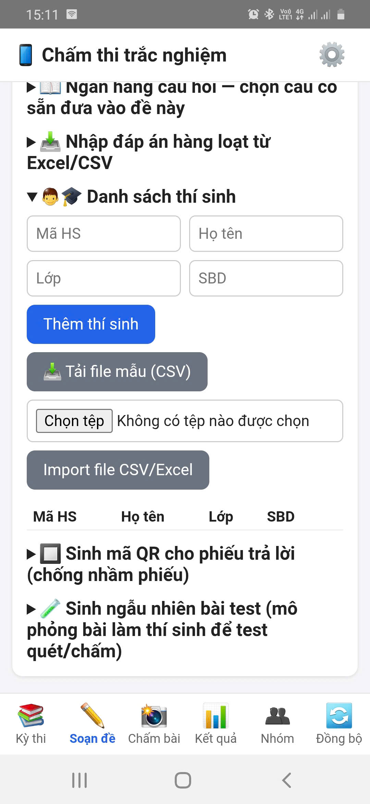
assets/img/shots/08-danh-sach-thi-sinh.pngMã QR là chức năng hỗ trợ, không bắt buộc: nếu thí sinh tô đúng số báo danh trên phiếu, app vẫn nhận ra thí sinh từ SBD.
9In phiếu
- Tab Soạn đề → mục Phiếu trống để in cho thí sinh làm bài thật, nhập số bản.
- Bấm 📄 Tải phiếu trống (PDF), rồi in từ trình xem PDF.

assets/img/shots/09-tai-phieu-pdf.png- Chọn tỉ lệ 100% / Kích thước thực, không chọn “Vừa trang/Fit to page” hay “Thu nhỏ để vừa” — phiếu bị co sẽ lệch vị trí ô.
- Chọn đúng khổ giấy (A4 hoặc A5) và hướng giấy (dọc/ngang) như mẫu phiếu.
- In rõ nét, tránh chế độ tiết kiệm mực/bản nháp; 4 ô vuông đen ở bốn góc phải in đậm, không bị mờ hay bị cắt mép.
- In thử một tờ, tô và quét thử trước khi in cả lớp.
10Hướng dẫn thí sinh tô phiếu
Bạn có thể in nguyên khung dưới đây dán lên bảng hoặc đọc cho thí sinh:
- Dùng bút bi xanh/đen hoặc bút chì đen mềm (2B); tô kín toàn bộ ô tròn.
- Mỗi câu chỉ tô một ô (riêng Phần II: mỗi ý a, b, c, d tô một trong hai ô Đúng/Sai).
- Phần III: tô dấu - nếu là số âm, dấu , nếu là số thập phân, rồi tô từng chữ số ở đúng cột.
- Tô số báo danh và mã đề chính xác, mỗi cột một chữ số.
- Muốn sửa: tẩy sạch ô cũ trước khi tô ô mới. Không dùng bút xoá nước làm loang phiếu.
- Không gấp, nhàu, rách phiếu; không viết hay vẽ vào 4 ô vuông đen ở góc.
11Chấm bài bằng camera
- Bảo đảm đã bấm ✅ Dùng kỳ thi này (mục 4). Mở tab 📸 Chấm bài.
- Lần đầu, chờ thông báo Đang tải thư viện xử lý ảnh (OpenCV.js) — có thể mất 10–30 giây; các lần sau nhanh hơn.
- Bấm 📷 Chụp ảnh (hoặc chọn ảnh có sẵn). Đặt phiếu phẳng, canh 4 góc phiếu vào 4 ô vuông hiển thị trên màn hình (🎯 Canh 4 góc phiếu vào 4 ô vuông).
- Xem Kết quả nhận dạng: số báo danh, mã đề, điểm tạm tính và danh sách các câu cần xem lại.
- Nếu hiện “Không xác định được đúng mã đề để chấm”: chọn đúng mã đề ở danh sách rồi bấm ✔ Áp dụng — chưa chọn thì không thể xác nhận chấm.
- Nếu hiện “SBD đọc từ ảnh không khớp SBD gắn với mã QR”: đối chiếu tên trên phiếu với thí sinh, rồi chọn ✔ Tôi đã kiểm tra, vẫn tiếp tục hoặc chọn lại đúng thí sinh.
- Kiểm tra các câu được gắn cờ, rồi bấm ✅ Xác nhận (offline). Điểm được tính ngay trên máy và bài được lưu. 💾 Lưu ảnh giữ lại ảnh phiếu làm bằng chứng.
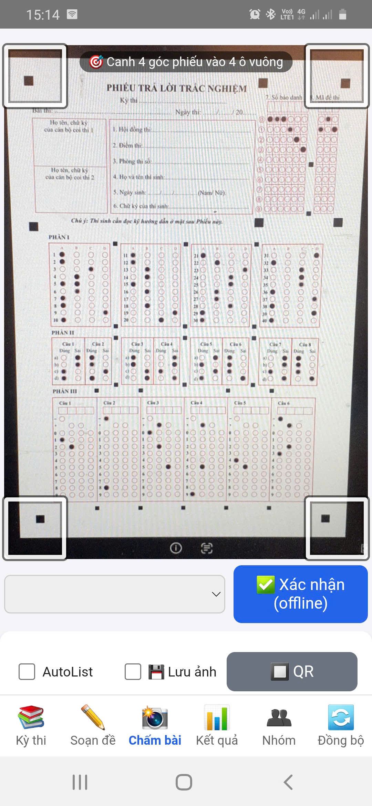
assets/img/shots/10-cham-bai-chup.png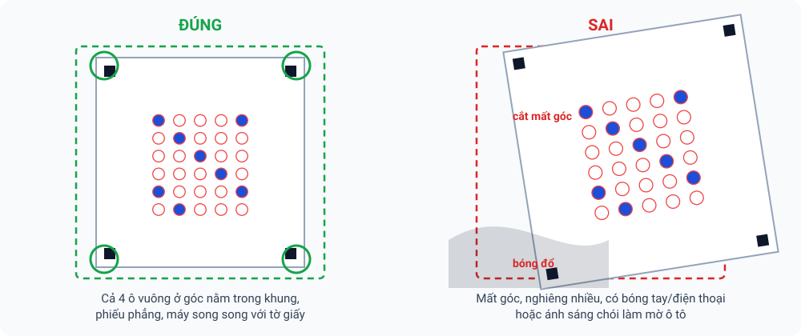

assets/img/shots/11-ket-qua-nhan-dang.pngÝ nghĩa các màu trên ảnh kết quả
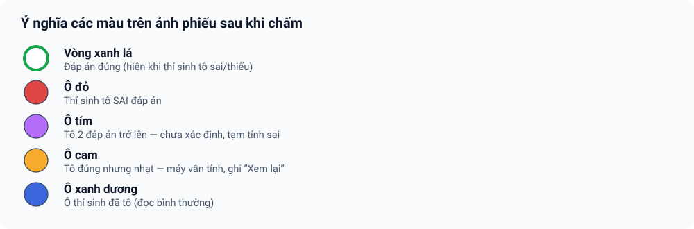
Quy tắc quan trọng: ô không xác định (tô hai đáp án trở lên, đọc không ra) được tạm tính sai và gắn cờ; ô tô nhạt nhưng vẫn đọc được được tính như đã tô và cũng gắn cờ “Xem lại”. Cờ nghĩa là “giáo viên hãy nhìn lại”, không phải kết luận cuối.
12Xem lại & sửa câu mơ hồ
- 🔍 Xem chi tiết & sửa từng câu: bảng chi tiết bài vừa chấm với các cột Câu, Phần, Đáp án, Độ tin cậy, Trạng thái. Sửa những câu bạn thấy máy đọc sai (so với ảnh thật), rồi lưu.
- 🔍 Tra cứu & sửa bài đã nộp (bằng chứng chấm): nhập SBD rồi bấm Tìm để mở lại bài đã chấm. Nếu phát hiện chấm nhầm sau khi đã nộp, có thể sửa trực tiếp tại đây.
- Mọi lần sửa đều được ghi lại (ai sửa, lúc nào, từ đáp án gì sang gì, vì sao), để giải trình với thí sinh khi cần.
- Với kỳ thi nhóm: quản trị nhóm xem và duyệt các bài cần xem lại của giáo viên ở tab 👥 Nhóm (nút 📥 Bài cần review — xem mục 14).

assets/img/shots/12-cau-can-xem-lai.png| Tình huống | App xử lý | Bạn nên |
|---|---|---|
| Ô tô rõ, một đáp án | Chấm bình thường | Không cần làm gì |
| Ô tô nhạt nhưng đọc được | Tính điểm + cờ “Xem lại” | Nhìn ảnh, xác nhận hoặc sửa |
| Tô 2 đáp án trở lên | Chưa xác định → tạm tính sai + cờ | Quyết định theo quy chế thi của bạn rồi sửa |
| Bỏ trống | 0 điểm câu đó | Kiểm tra nhanh ảnh nếu nghi ngờ |
13Kết quả & xuất tệp
- Mở tab 📊 Kết quả (phải đang chọn một kỳ thi).
- Bấm 📊 Xuất Excel hoặc 📄 Xuất CSV để lấy bảng điểm.
- Tệp được lưu trên máy (thường trong thư mục Tài liệu/ExamMark-PTC); mở bằng ứng dụng Tệp hoặc chia sẻ qua Zalo/email như tệp bình thường.
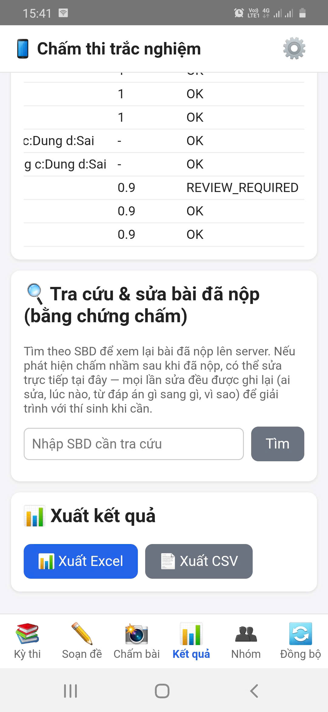
assets/img/shots/13-xuat-ket-qua.pngThống kê kỳ thi
Trong tab 📊 Kết quả, thẻ 📈 Thống kê kỳ thi tổng hợp điểm của kỳ thi đang chọn:
- Nhập Điểm đạt từ (mặc định 5).
- Chọn Phạm vi: Cả kỳ thi (gộp mọi mã đề) hoặc Chỉ mã đề đang chọn (có từng câu).
- Bấm 📈 Xem thống kê: điểm trung bình/cao nhất/thấp nhất, tỉ lệ đạt, thống kê theo lớp và độ chính xác từng câu — câu có tỉ lệ làm đúng thấp được tô đỏ để bạn rà lại (đề khó hay đáp án sai?).

assets/img/shots/35-thong-ke-ky-thi.png14Luồng A — Kỳ thi nhóm: nhiều giáo viên cùng chấm (tab Nhóm · Group Hub)
| Luồng A — Kỳ thi nhóm (mục 14) | Luồng B — Phòng thi online (mục 16) | |
|---|---|---|
| Bài toán | Nhiều giáo viên cùng chấm một kỳ thi phiếu giấy, quản trị duyệt và chốt | Học sinh làm bài trên trình duyệt, máy chủ chấm tự động |
| Module phía sau | Group Hub (Apps Script của quản trị nhóm) | ExamRoom (Apps Script của từng giáo viên) |
| Cần license tổ chức | Có — danh tính lấy từ license | Không — dùng địa chỉ + khoá phòng thi riêng |
| Người dùng | Quản trị nhóm, giáo viên trong nhóm con | Giáo viên; học sinh (không cần tài khoản Google) |
| Chấm ở đâu | Trên máy từng giáo viên, offline; chỉ điểm và đáp án gửi lên | Trên máy chủ Apps Script, ngay khi nộp |
| Dữ liệu nằm ở | Drive/Sheet của quản trị nhóm | Drive/Sheet của giáo viên |
| Hai luồng nối nhau | Hai luồng độc lập, không dùng chung địa chỉ, khoá hay dữ liệu. Cầu nối duy nhất là mục 16.8: nhập bài làm online vào một kỳ thi trong app (kỳ thi đó có thể được đẩy lên Hub theo luồng A). | |
Kỳ thi chung (kỳ thi nhóm) dành cho trường/tổ bộ môn dùng license tổ chức: quản trị nhóm soạn một kỳ thi (đề, mã đề, đáp án, danh sách thí sinh) rồi đẩy lên “Drive chung” của nhóm; nhiều giáo viên tải kỳ thi về, chấm offline trên máy mình và gửi kết quả lên; quản trị nhóm theo dõi tiến độ, duyệt, chốt kỳ thi và lưu biên bản.

Kỳ thi và kết quả nằm trên Group Hub: một bảng tính Google (Drive/Sheet) do chính quản trị nhóm sở hữu. Nhà phát triển không giữ dữ liệu này. Ảnh bài làm không gửi lên Hub — ảnh chấm ở lại máy của giáo viên đã chấm; kết quả gửi lên chỉ gồm điểm, đáp án cuối, cờ “xem lại”, số báo danh và mã đề.
14.1 Ai làm được gì?
| Việc | Quản trị nhóm | Giáo viên (trong nhóm con) |
|---|---|---|
| Tạo/ẩn/xoá nhóm con, thêm giáo viên | ✔ | — |
| Đẩy kỳ thi; đóng nhận, chốt kỳ thi | ✔ | — |
| Tải kỳ thi của nhóm con mình và chấm | ✔ | ✔ (chỉ nhóm con được gán; nếu phân công theo lớp thì chỉ lớp được gán) |
| Gửi kết quả của chính mình | ✔ | ✔ |
| Xem kết quả của người khác; duyệt; yêu cầu chấm lại; sửa điểm | ✔ | — |
| Xin đính chính sau khi kết quả đã duyệt | — | ✔ |
“Quản trị nhóm” là chủ license tổ chức. Nhà phát triển (quản trị hệ thống) cấp/thu hồi license và gỡ thiết bị nhưng không truy cập dữ liệu kỳ thi của nhóm.
14.2 Dành cho quản trị nhóm
a) Thiết lập Group Hub (làm một lần, khoảng 10 phút)
- Mở đường dẫn dạng
…/copymà nhà phát triển gửi → Tạo bản sao bảng tính “ExamMark-PTC Hub (bản mẫu)” vào Drive của nhóm (nên dùng tài khoản Google do nhóm quản lý). Mở bản sao; nếu chưa thấy menu ExamMark-PTC Hub, tải lại trang và chờ vài giây. - Chọn menu ExamMark-PTC Hub ▸ ① Cài đặt (nhập mã license), cấp quyền khi Google hỏi (lần đầu có cảnh báo “ứng dụng chưa được xác minh”: chọn Nâng cao ▸ Đi tới … (không an toàn) — đây là script nằm trong chính bảng tính của bạn) rồi nhập mã license tổ chức.
- Chọn ② Triển khai Hub (tạo URL); hộp thoại hiện URL và nút 📋 Sao chép URL. Nếu báo cần bật Google Apps Script API: mở script.google.com/home/usersettings, bật rồi chạy lại bước ②.
- Mở ExamMark-PTC (tài khoản chủ license tổ chức) → tab 👥 Nhóm → dán URL vào ô ⚙️ Group Hub của nhóm → Lưu địa chỉ Hub.
- (Tuỳ chọn) menu Kiểm tra tình trạng trong bảng tính: tất cả ✅ là sẵn sàng.
Không chia sẻ thư mục Drive “ExamMark-PTC Hub” cho ai khác — Hub là cổng truy cập duy nhất; giáo viên không cần được cấp quyền vào Drive. Nếu license đổi hoặc hết hạn, Hub từ chối truy cập nhưng dữ liệu vẫn nằm trong Drive của bạn.
b) Tạo nhóm con và thêm giáo viên
- Tab 👥 Nhóm → ô Tên nhóm con, vd Toán → + Tạo. Nên tạo nhóm con theo môn (Toán, Lý, Hoá…).
- Mở nhóm vừa tạo, nhập email giáo viên (cách nhau bằng dấu phẩy hoặc xuống dòng) → Lưu danh sách giáo viên. Email phải thuộc danh sách thành viên của license tổ chức; một giáo viên có thể thuộc nhiều nhóm con.
Khi có nhiều nhóm, mỗi nhóm hiện gọn một dòng (số giáo viên, số kỳ thi đang mở); có ô 🔍 Lọc nhóm hoặc email… (khi trên 5 nhóm), nút Ẩn/Hiện lại (lưu trữ, khôi phục được) và 🗑 Xoá (chỉ xoá được khi nhóm không còn kỳ thi).

assets/img/shots/23-nhom-quan-tri.pngc) Đẩy kỳ thi lên Hub
- Soạn kỳ thi như bình thường ở tab Kỳ thi/Soạn đề: đề, mã đề, đáp án và danh sách thí sinh có cột Lớp.
- Tab 👥 Nhóm → mở khung ⬆️ Đẩy kỳ thi lên Hub: chọn kỳ thi, nhóm con, cách phân công và hạn chấm.
- Mọi giáo viên chấm toàn bộ: ai trong nhóm con cũng tải và chấm được toàn bộ kỳ thi.
- Phân công theo lớp/phòng thi: mỗi dòng một giáo viên theo mẫu
email: 12A, 12B; giáo viên chỉ thấy các lớp được gán.
- Bấm ⬆️ Đẩy lên Hub. Kỳ thi chuyển sang trạng thái Đang mở và hiện cho giáo viên được gán.

assets/img/shots/24-nhom-day-ky-thi.pngd) Theo dõi tiến độ, xem chi tiết và duyệt
- Thanh 📥 Cần xử lý cho biết số bài chờ duyệt, yêu cầu đính chính, kỳ thi đang mở/đã kết thúc; nút 📥 Bài cần review gom mọi bài chờ duyệt hoặc có thí sinh cần xem lại ở một nơi.
- Với mỗi kỳ thi đang mở, bấm 📋 Kết quả: thấy tiến độ (đã nộp/dự kiến), ai chưa nộp (nút 📣 Nhắc tạo lời nhắn để chia sẻ), và với mỗi giáo viên: số bài, điểm trung bình, số bài cần xem lại, trạng thái.
- 🔍 Chi tiết mở từng thí sinh của giáo viên đó (họ tên · mã đề · điểm; tick Chỉ hiện bài cần xem lại; đáp án từng câu). Có thể sửa điểm rồi bấm 💾 Lưu điểm đã sửa & trả giáo viên — bắt buộc nêu lý do, giáo viên sẽ thấy.
- Bấm Duyệt, hoặc Yêu cầu chấm lại kèm lời nhắn gửi giáo viên.
- App cảnh báo khi một thí sinh bị từ 2 giáo viên trở lên chấm (không tự chọn bài nào).
- Yêu cầu đính chính của giáo viên (sau khi đã duyệt) hiện ở khung riêng với nút Duyệt/Từ chối.

assets/img/shots/26-nhom-ket-qua-duyet.pnge) Đóng nhận, chốt kỳ thi, biên bản và dọn dẹp
| Thao tác | Ý nghĩa |
|---|---|
| Đóng nhận / Mở lại | Ngừng/nhận lại kết quả mới (khi chưa chốt). |
| Chốt | Chỉ chốt được khi mọi bài đã nộp đều được duyệt. Sau khi chốt không nhận hay sửa kết quả; hệ thống tự lập biên bản. |
| Biên bản kỳ thi | Gồm: nhóm, phiên bản đề, hình thức phân công, hạn, người đẩy; từng giáo viên chấm (lớp, số bài, điểm TB, số cần xem lại, trạng thái, người duyệt); người chưa nộp; tổng số thí sinh, điểm TB; số đính chính. Xem, chia sẻ hoặc lưu tệp văn bản. |
| ⬇️ Xuất điểm CSV | Bảng điểm tổng hợp toàn kỳ thi. |
| 🗑 Dọn kỳ thi | Xoá đề và bài chấm chi tiết khỏi Hub nhưng giữ biên bản. Không hoàn tác — nên xuất CSV trước. |
Kỳ thi đã chốt/đã dọn được gom vào mục 🗂 Kỳ thi đã kết thúc để màn hình gọn lại.

assets/img/shots/27-nhom-bien-ban.png14.3 Dành cho giáo viên (thành viên nhóm)
- Mở tab 👥 Nhóm → 🔄 Làm mới. Mục 👥 Kỳ thi chung của nhóm liệt kê các kỳ thi dành cho bạn (kèm nhóm con, trạng thái, hạn và lớp được phân công).
- Bấm ⬇️ Tải về để chấm. Kỳ thi được nhập vào máy như một kỳ thi bình thường nhưng nội dung đề chỉ đọc.
- Sang tab Kỳ thi, bấm ✅ Dùng kỳ thi này cho kỳ thi vừa tải và chấm như bình thường (mục 11) — không cần Internet khi chấm.
- Chấm xong, quay lại tab Nhóm bấm ✅ Hoàn thiện & gửi kết quả. App nhắc: sau khi gửi bạn không tự sửa được kết quả.
- Chờ quản trị duyệt. Nếu bị Cần chấm lại, sửa rồi gửi lại.

assets/img/shots/25-nhom-giao-vien.pngTrạng thái bạn sẽ thấy
| Nhãn | Nghĩa là | Bạn làm gì |
|---|---|---|
| Chưa tải về | Kỳ thi đã mở cho bạn | ⬇️ Tải về để chấm |
| Đang chấm | Đã tải, chưa gửi | Chấm xong rồi ✅ Hoàn thiện & gửi kết quả |
| Đã gửi — chờ duyệt | Quản trị chưa duyệt | Chờ |
| Đã được duyệt | Kết quả đã được chấp nhận | Cần đổi thì ✏️ Xin đính chính và nêu lý do |
| Cần chấm lại | Quản trị yêu cầu chấm lại (có lời nhắn 💬 Quản trị nhóm) | Sửa rồi gửi lại |
| Quản trị đã sửa — chờ duyệt | Quản trị đã sửa điểm; bản sửa chỉ đọc | Xem lại bản đã sửa |
- Mất mạng khi gửi: kết quả được xếp hàng (“⏳ … kết quả chờ gửi”) và tự gửi khi có mạng; bấm 🔄 Làm mới để gửi ngay và cập nhật trạng thái. Khi đang ngoại tuyến, app vẫn hiện các kỳ thi đã tải về máy.
- Đề được cập nhật: thấy cảnh báo “Đề đã được cập nhật” thì bấm ⬇️ Tải đề mới rồi chấm lại — kết quả chấm bằng đề cũ không gửi được.
- Mục 📖 Hướng dẫn kỳ thi chung trong tab Nhóm tóm tắt các bước này ngay trong app.
14.4 Vòng đời của kỳ thi và kết quả

Tab hiện “Tổ chức của bạn chưa cấu hình Group Hub” nghĩa là quản trị nhóm chưa hoàn thành bước thiết lập (mục 14.2a); chỉ tài khoản quản trị mới thấy ô nhập địa chỉ Hub. Tab dành cho license tổ chức; với license cá nhân bạn dùng các tab khác như bình thường. Nếu app báo “Group Hub chưa cập nhật lên v36”, nhờ nhà phát triển cập nhật mã Hub.
14.5 Cơ chế bên trong Group Hub (để hiểu vì sao app báo như vậy)
Mọi yêu cầu của app đi vào Hub theo thứ tự: giới hạn tần suất (60 yêu cầu/phút cho mỗi thiết bị) → xác thực token license → phân quyền (việc của quản trị bị chặn với giáo viên: HUB_FORBIDDEN) → thực hiện. Các thao tác ghi đều chạy trong khoá nên hai người gửi cùng lúc không ghi chồng nhau.
a) Xác thực: Hub tin vào token license, không có mật khẩu riêng
| Hub kiểm tra | Nếu sai, app nhận lỗi |
|---|---|
| Chữ ký token (RS256) đúng với khoá công khai nhà phát triển đã đặt sẵn trong bản mẫu | TOKEN_INVALID |
| Token chưa quá hạn | TOKEN_EXPIRED — mở app có mạng để làm mới license |
| Mã license trong token khớp mã bạn nhập ở bước ① | HUB_FORBIDDEN (license không thuộc Hub này) |
| License còn hoạt động | LICENSE_INACTIVE |
| Token gắn đúng thiết bị và có danh tính email | TOKEN_INVALID / IDENTITY_REQUIRED — kích hoạt lại bằng Google hoặc OTP email |
Chủ license tổ chức = quản trị nhóm; mọi tài khoản khác là giáo viên. Email trong nhóm con được chuẩn hoá chữ thường, nên không phân biệt hoa thường.
b) Dữ liệu trong bảng tính Hub
| Tab | Lưu gì |
|---|---|
| Subgroups · Memberships | Nhóm con và giáo viên thuộc nhóm |
| Exams | Kỳ thi: trạng thái, phiên bản đề, hạn, cách phân công. Gói đề nằm ở Drive; Sheet giữ mã băm SHA-256 |
| Results | Mỗi lần gửi là một lần sửa (revision); chỉ bản hiện hành được tính, bản cũ thành “thay thế” |
| Corrections · Minutes · Audit | Yêu cầu đính chính · biên bản (được giữ sau khi dọn) · nhật ký mọi thao tác |
| Cấu hình | Khoá công khai, HUB_URL, nhắc việc khi cài dở. Mã license nằm ở Script Properties, không ghi ra bảng |
c) Khi giáo viên gửi kết quả, Hub kiểm tra theo thứ tự
| Điều kiện | Lỗi và cách xử lý |
|---|---|
| Đã “Hoàn thiện phiên chấm” | NOT_FINALIZED — hoàn thiện rồi gửi |
| Cùng một lần gửi đã nhận trước đó (mã thao tác trùng) | Không lỗi: Hub trả kết quả cũ, nên gửi lại khi mạng chập chờn là an toàn |
| Kỳ thi chưa chốt; chưa đóng nhận (trừ khi bạn đang được yêu cầu chấm lại) | EXAM_LOCKED / EXAM_CLOSED |
| Đề bạn chấm là phiên bản hiện hành | STALE_VERSION — tải đề mới rồi chấm lại |
| Chưa có kết quả đã gửi (hoặc đang bị yêu cầu chấm lại) | RESULT_LOCKED — muốn đổi, xin quản trị yêu cầu chấm lại hoặc gửi đính chính |
| Kỳ thi chia theo lớp: mọi thí sinh trong gói thuộc lớp được gán | OUT_OF_ASSIGNMENT |
Kích thước tối đa mỗi gói khoảng 2,5 MB (không kèm ảnh). Khi quản trị đẩy lại đề mà nội dung không đổi (cùng mã băm) thì Hub chỉ cập nhật hạn/phân công và giữ nguyên phiên bản; nội dung đổi thì tăng phiên bản (các bản cũ vẫn lưu).
d) Duyệt, chốt, đính chính, dọn dẹp
- Chốt chỉ được khi mọi kết quả hiện hành đã duyệt (
PENDING_RESULTSkèm danh sách chưa duyệt). Yêu cầu chấm lại và sửa điểm bắt buộc có lý do; sửa điểm tạo lần sửa mới, trạng thái “Quản trị đã sửa — chờ duyệt”. - Đính chính được duyệt đưa kết quả về “Cần chấm lại”, và nếu kỳ thi đã chốt thì tự mở lại ở trạng thái đóng nhận để giáo viên nộp lại. Mỗi giáo viên chỉ có một yêu cầu đang chờ cho mỗi kỳ thi (lý do tối đa 500 ký tự).
- Dọn kỳ thi chỉ làm được với kỳ thi đã chốt: lập biên bản mới nhất, xoá đề, kết quả chi tiết, đính chính và thư mục Drive (vào thùng rác), giữ biên bản và nhật ký. Xoá nhóm con chỉ khi nhóm không còn kỳ thi nào; khác với Ẩn chỉ là lưu trữ.
e) Quản trị Hub trên điện thoại và cập nhật phiên bản
Ứng dụng Google Sheets trên điện thoại không chạy được menu tuỳ chỉnh. Thêm Console.gs + Console.html vào project rồi triển khai lại; trên máy tính chạy menu ④ Bảng điều khiển trên điện thoại để lấy địa chỉ …/exec?page=console và khoá bảng điều khiển (HK-…). Trang này chạy đúng các hàm menu, hộp thoại được thay bằng form. Ai có khoá là quản trị được Hub nên hãy giữ kín (nhập sai quá 10 lần/phút bị chặn tạm; nghi lộ thì đổi khoá ở menu ④). Lần cài đặt đầu tiên (cấp quyền, bước ②) vẫn phải làm trên máy tính.
Cập nhật Hub khi có bản mới: dán mã mới rồi chạy lại ② Triển khai Hub; URL giữ nguyên nên không phải đổi gì trong app. Mã license phải nhập lại ở mỗi bản sao (Google không sao chép Script Properties), đó là lý do bước ① hỏi lại.
| Lỗi thường gặp | Nguyên nhân và cách xử lý |
|---|---|
RATE_LIMITED / LOCK_TIMEOUT | Quá 60 yêu cầu/phút, hoặc Hub đang bận ghi: thử lại sau vài giây |
NOT_IN_SUBGROUP | Bạn chưa thuộc nhóm con của kỳ thi, hoặc không được gán lớp nào |
DUPLICATE / HAS_EXAMS | Trùng tên nhóm con / nhóm còn kỳ thi: dọn kỳ thi đã chốt trước hoặc chỉ ẩn nhóm |
BAD_TRANSITION | Chuyển trạng thái không hợp lệ (xem sơ đồ ở 14.4) |
15Chấm tự luận bằng AI Bản thử nghiệm
Ngoài trắc nghiệm, ExamMark-PTC có chế độ chấm bài tự luận: bạn chụp ảnh bài làm viết tay → AI chép lại bài → AI chấm từng ý theo barem → giáo viên xem bản chép, sửa điểm và duyệt. Nguyên tắc: AI đề xuất, giáo viên quyết định.
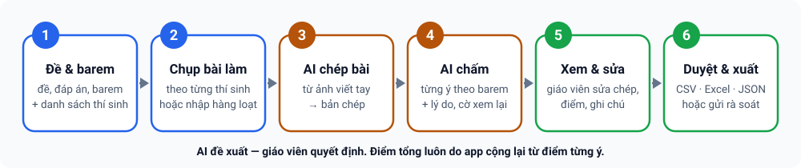
- Đây là chức năng đang trong giai đoạn thử nghiệm: hãy chấm thử vài bài, so với cách chấm của bạn rồi mới dùng cho bài thi chính thức.
- Cần Internet khi gọi AI và cần khoá API của nhà cung cấp AI do bạn tự đăng ký (Gemini, OpenAI hoặc Claude). Khoá API hoàn toàn tách biệt với license ExamMark-PTC; phí gọi AI do nhà cung cấp tính cho bạn.
- Ảnh bài làm và đề/đáp án/barem được gửi thẳng từ máy bạn tới nhà cung cấp AI mà bạn chọn (không qua máy chủ của ExamMark-PTC). Hãy kiểm tra quy định bảo vệ dữ liệu học sinh của trường trước khi dùng.
- Chữ viết tay khó đọc hoặc công thức phức tạp vẫn có thể làm AI chép/chấm sai: luôn xem bản chép trước khi tin điểm.
15.1 Điều kiện sử dụng
| Trạng thái license | Xem / xuất / xoá dữ liệu | Rà soát, nhập gói | Chấm AI, tạo kỳ thi, chia sẻ đi |
|---|---|---|---|
| Còn hạn, gói có quyền chấm tự luận | ✔ | ✔ | ✔ |
| Còn hạn, gói chỉ có quyền rà soát | ✔ | ✔ | — |
| Gói không có quyền tự luận, hết hạn, bị khoá hoặc chưa kích hoạt | ✔ | — | — |
Quyền tự luận phụ thuộc gói license (gói dùng thử mặc định có đủ). Nếu app báo chưa có quyền tự luận dù gói đã có, hãy kết nối mạng để làm mới license rồi thử lại. Cài đặt (khoá API, lệnh chấm) và xoá dữ liệu luôn dùng được.
15.2 Bật chế độ Tự luận
Ở thanh tiêu đề có ô chọn chế độ 📱 Chấm trắc nghiệm | 🤖 Chấm tự luận | 🌐 Phòng thi online (cũng có trong ⚙️ Cài đặt; chế độ thứ ba xem mục 16). Chọn Chấm tự luận → giao diện và thanh tab trắc nghiệm được ẩn, giao diện tự luận hiện ra với bốn mục: 📚 Kỳ thi · 📝 Bài làm · 📊 Kết quả · ⚙️ Cài đặt. Lựa chọn được ghi nhớ; chọn lại Chấm trắc nghiệm để trở về đúng tab đang mở.
Tab Chấm bài cố ý ẩn thanh tiêu đề để dành chỗ cho camera. Hãy chuyển sang tab khác (ví dụ Kỳ thi) hoặc mở ⚙️ Cài đặt để thấy ô chọn.

assets/img/shots/28-tu-luan-chon-che-do.png15.3 Cài đặt AI (làm một lần)
- Mở mục ⚙️ Cài đặt của chế độ tự luận → chọn Nhà cung cấp AI (Gemini / OpenAI / Claude).
- Dán khoá API của bạn. Khoá chỉ lưu trên máy này — đừng gửi khoá qua chat hay email. Bạn có thể dán nhiều khoá cho mỗi nhà cung cấp (mỗi dòng một khoá, bấm + Thêm vào danh sách); chọn khoá đang dùng bằng tay, bấm Thử tất cả để kiểm tra, hoặc để app tự đổi sang khoá kế tiếp khi khoá đang dùng hết hạn mức/bị từ chối (không đổi khoá khi chỉ là lỗi mạng hay máy chủ AI bận). Kho khoá này dùng chung với chức năng nhận dạng công thức ảnh ở mục 6.9 và không nằm trong sao lưu.
- Bấm Lấy danh sách mô hình và chọn một mô hình đang dùng được (tên mô hình thay đổi theo thời gian, nên không nên tin tên mặc định). Để trống = dùng mô hình mặc định.
- Bấm Kiểm tra kết nối.
Tuỳ chọn trong mục này: Mô hình dự phòng (tự dùng khi mô hình chính báo quá tải mà thử lại vẫn lỗi); Gửi kèm ảnh khi chấm (nên bật với bài có hình vẽ/đồ thị; tốn thêm phí); Chấm 2 lần, lệch thì lấy trung bình và gắn cờ (tốn gấp đôi); Tên của tôi (hiện trong gói chia sẻ và lịch sử sửa điểm).

assets/img/shots/29-tu-luan-cai-dat-ai.png15.4 Tạo kỳ thi tự luận
- Mục 📚 Kỳ thi → + Tạo kỳ thi (hoặc Nạp bài mẫu để thử ngay với một bài Toán 10 kèm 2 thí sinh).
- Nhập Tên, Môn, Lớp, Tổng điểm.
- Nhập Đề, Đáp án và Barem: mỗi ô có thể gõ tay, hoặc lấy 📷 Từ ảnh, 📄 Từ tệp .docx/.pdf/.txt. Nếu chỉ có một tài liệu chứa cả đề, đáp án, barem, dùng 🪄 Tách tự động từ 1 tệp/ảnh: AI chia vào ba ô, bạn kiểm tra lại.
- Barem càng chia nhỏ ý, AI chấm càng nhất quán; tổng điểm các ý phải bằng Tổng điểm.
- (Tuỳ chọn) chọn Lệnh chấm riêng cho kỳ thi (mục 15.9) rồi Lưu kỳ thi.
| Định dạng nhập | Cách app xử lý |
|---|---|
| Ảnh | Gửi cho AI đọc |
| .docx | Đọc ngay trên máy: văn bản, bảng, công thức Word (chuyển sang LaTeX). Công thức MathType/ảnh nhúng và hình vẽ không thành chữ được — app đếm và cảnh báo |
| Gửi nguyên PDF cho AI đọc (hợp công thức và hình) | |
| .txt | Dùng trực tiếp |
Danh sách thí sinh (nên có): cùng cấu trúc với phần trắc nghiệm — Mã HS, Họ tên, Lớp, SBD (SBD không trùng). Dùng 📥 Mẫu CSV, 📤 Nhập CSV/Excel, 📋 Dán từ Excel hoặc ➕ Thêm từng thí sinh. Tiêu đề cột có dấu hay không dấu đều nhận. Có danh sách thì chấm theo từng thí sinh và kết quả xuất theo đúng thứ tự danh sách.

assets/img/shots/30-tu-luan-ky-thi.png15.5 Chấm bài
Mục 📝 Bài làm:
- Có danh sách thí sinh: mỗi thí sinh có nút 📷/🖼 riêng để chụp hoặc chọn ảnh của em đó (nhiều trang được). Hoặc nhập hàng loạt: chọn nhiều ảnh, app tự ghép vào thí sinh theo SBD hoặc họ tên trong tên tệp (ví dụ
SBD_002_p1.jpg; SBD phải là một cụm số nguyên vẹn). Ảnh không ghép được nằm ở Bài chưa gán để bạn gán tay — luôn xem lại mục này. - Không có danh sách: 📷 Chụp bài / 🖼 Chọn ảnh tạo một bài mới từ các ảnh vừa chọn (nhiều trang).
- Bấm nút Chép + chấm ở từng bài, hoặc ⚡ Chấm tất cả chưa chấm (có nút Dừng khi đang chạy).
- Khi máy chủ AI quá tải (lỗi 503/529), giới hạn tạm thời hoặc mất mạng, app tự chờ rồi thử lại (3 → 8 → 15 giây); nếu vẫn lỗi và bạn đã đặt Mô hình dự phòng thì chuyển sang mô hình đó. Bài còn lỗi thì bấm chấm lại sau. Sai khoá, hết tiền hay sai tên mô hình được báo kèm hướng dẫn cụ thể.

assets/img/shots/31-tu-luan-bai-lam.png15.6 Xem lại và sửa điểm
Mở một bài để thấy: ảnh bài làm (chạm để phóng to, xoay, xoá), bản chép của AI (kèm các chỗ AI không chắc — sửa nếu chép sai), điểm từng ý kèm lý do của AI, và cờ ⚠️ Cần xem lại khi AI không chắc, điểm lệch thang hoặc hai lần chấm chênh nhau. Bạn có thể sửa điểm từng ý, ghi chú (ví dụ “Ý b nên cho 0,25 vì thiếu lập luận”), Chấm lại từ bản chép sau khi sửa bản chép, rồi duyệt bài.
- Điểm tổng luôn do app cộng lại từ điểm các ý và bị chặn không vượt điểm tối đa của từng ý.
- Mọi lần sửa điểm được ghi trong ✎ Lịch sử sửa điểm.

assets/img/shots/32-tu-luan-chi-tiet-cham.png15.7 Kết quả và xuất tệp
Mục 📊 Kết quả cho biết Đã chấm x/y, điểm trung bình, số bài chờ xem lại. Xuất bằng ⬇ CSV, ⬇ Excel hoặc ⬇ JSON (tích hợp). Kết quả theo đúng thứ tự danh sách; thí sinh chưa có bài ghi “Chưa có bài”.
Hiện điểm tự luận được xuất riêng; app chưa tự cộng vào điểm trắc nghiệm của cùng thí sinh. Bạn có thể ghép hai bảng điểm bằng cột SBD trong Excel. Tệp JSON dùng cho việc tích hợp sâu về sau.

assets/img/shots/33-tu-luan-ket-qua-xuat.png15.8 Chia sẻ để đồng nghiệp rà soát
Dùng khi bạn muốn người khác kiểm tra lại điểm (ví dụ chấm chéo, kiểm tra chọn mẫu):
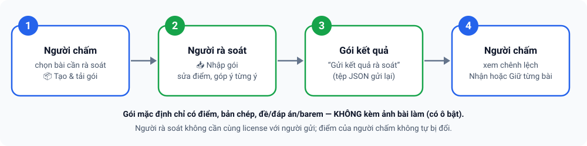
- Người chấm: mục 📊 Kết quả → 📤 Chia sẻ để rà soát. Chọn bài: ⚠️ Cần xem lại, ✎ Có sửa/nhận xét, Tất cả hoặc 🎲 ngẫu nhiên một số bài. Mặc định gói chỉ có điểm, bản chép và đề/đáp án/barem — KHÔNG kèm ảnh bài làm (có ô Kèm ảnh bài làm nếu cần; gói sẽ nặng và lộ ảnh bài thi). Bấm 📦 Tạo & tải gói và gửi tệp cho người rà soát.
- Người rà soát (chỉ cần quyền rà soát, không cần cùng license): 📥 Nhập gói chia sẻ / rà soát → sửa điểm, nhận xét theo bài và góp ý riêng từng ý → Gửi kết quả rà soát (tạo tệp trả lại).
- Người chấm nhập tệp trả lại, xem chênh lệch và chọn Nhận điểm của người rà soát hoặc Giữ điểm của tôi cho từng bài — app không tự đổi điểm của bạn.
Hãy gửi gói qua kênh phù hợp quy định bảo mật dữ liệu học sinh của trường.

assets/img/shots/34-tu-luan-chia-se-ra-soat.png15.9 Sửa “Lệnh chấm” (prompt)
Mục ⚙️ Cài đặt → Lệnh chấm (prompt) cho phép chỉnh hai chỉ dẫn gửi cho AI: 1) lệnh CHÉP bài từ ảnh và 2) lệnh CHẤM bài. Bạn có thể lưu thành bộ lệnh có tên, Đặt làm mặc định, chọn riêng cho từng kỳ thi, hoặc ↺ quay về nội dung mặc định. Có thể dùng các biến {{mon}}, {{lop}}, {{tong_diem}}. Phần định dạng JSON và dữ liệu (đề, đáp án, barem, bài làm) do app tự nối, nên sửa lệnh thoải mái cũng không làm hỏng kết quả.
15.10 Dữ liệu, sao lưu và dung lượng
- Dữ liệu tự luận nằm trên máy này (văn bản trong bộ nhớ của app, ảnh lưu riêng). Dữ liệu này chưa nằm trong sao lưu Google Drive hay Group Hub. Đổi máy hoặc xoá dữ liệu ứng dụng là mất nếu chưa sao lưu.
- Dùng ⚙️ Cài đặt → 💾 Sao lưu (có tick Kèm ảnh bài làm, nặng hơn) và ♻️ Khôi phục từ tệp. Tệp sao lưu không chứa khoá API.
- Mục Sao lưu/khôi phục hiện dung lượng đang dùng; nếu bộ nhớ đầy app báo ngay bằng biểu ngữ đỏ chứ không mất dữ liệu âm thầm. Nút Xoá toàn bộ dữ liệu tự luận trên máy xoá sạch khi cần.
- Chưa có cắt/làm nét ảnh (chỉ thu nhỏ và xoay 90°); chưa chấm song song nhiều bài cùng lúc.
- Chưa đọc được tệp .doc cũ; .docx có công thức dạng ảnh cần chuyển sang PDF hoặc chụp ảnh.
- Chưa đồng bộ Drive, chưa cộng điểm tự động với điểm trắc nghiệm, chưa đưa kỳ thi tự luận lên Group Hub.
16Luồng B — Giao bài & chấm thi online (Phòng thi) Mới
Ngoài chấm phiếu giấy bằng camera, ExamMark-PTC có thể giao bài cho học sinh làm ngay trên trình duyệt (điện thoại hoặc máy tính), hiển thị công thức Toán và hình vẽ, có đồng hồ đếm ngược; bài nộp được chấm tự động, tổng hợp theo lớp/cá nhân, kèm nhận xét và có thể gửi kết quả qua email. Tính năng này gọi là Phòng thi và thao tác được trong app lẫn trên web.

- Phòng thi chạy trên Google Apps Script của chính bạn (một bảng tính Google + Drive của bạn), không chạy trên máy chủ của ExamMark-PTC. Bạn cần tài khoản Google và làm một lần phần cài đặt bằng menu — không phải dán mã.
- Học sinh không cần tài khoản Google. Họ mở đường dẫn hoặc quét mã QR bạn gửi. Bài làm, họ tên, lớp, email và điểm nằm trong Google Sheet/Drive của bạn; nhà phát triển ExamMark-PTC không nhận những dữ liệu này (xem Quyền riêng tư).
- Chống rời màn hình chỉ là răn đe và bằng chứng, không phải phòng thi khoá (xem mục 16.5). Với bài thi quan trọng hãy có giám thị.
- Đây là chức năng mới. Trước kỳ thi thật, hãy giao thử một bài ngắn (khoảng 5 phút) cho 3–5 máy, nên có cả iPhone, để kiểm tra đường truyền, công thức và chế độ toàn màn hình.
Đây là Luồng B, độc lập với kỳ thi nhóm: nếu cần nhiều giáo viên cùng chấm phiếu giấy, xem Luồng A ở mục 14 (bảng so sánh ở đầu mục đó).
16.1 Chấm phiếu giấy hay giao bài online?
| Chấm bằng camera (mục 11) | Giao bài online (mục này) | |
|---|---|---|
| Học sinh làm bài | Tô phiếu giấy | Trên điện thoại/máy tính, qua trình duyệt |
| Cần Internet | Không (chỉ khi kích hoạt license) | Có — giáo viên khi giao bài, học sinh khi làm bài |
| Nơi lưu dữ liệu | Trong điện thoại của giáo viên | Google Sheet và Drive của giáo viên |
| Công thức, hình vẽ | In trên đề giấy | Hiển thị ngay trong bài (công thức LaTeX, hình) |
| Chấm | Máy nhận dạng ô tô, giáo viên xem lại câu mơ hồ | Chấm tự động ngay khi nộp (không có “câu mơ hồ”) |
16.2 Cài đặt Phòng thi (làm một lần)
Mỗi giáo viên có Phòng thi riêng với địa chỉ và khoá riêng, nên nhà phát triển và giáo viên khác không xem được dữ liệu của bạn. Mọi bước làm bằng menu 🌐 ExamRoom trong Google Sheet:
- Nhận liên kết “Tạo bản sao” của bảng tính mẫu ExamRoom (bản mẫu) từ nhà phát triển (email ở cuối trang). Mở liên kết → Tạo bản sao vào Google Drive của bạn → mở bản sao. Menu 🌐 ExamRoom hiện sau vài giây (chưa thấy thì tải lại trang).
- Chọn 🌐 ExamRoom ▸ ⓪ Cài đặt nhanh. Hộp thoại sẽ hỏi khoá phòng thi: để trống = tự sinh (khuyên dùng); nếu tự đặt thì dài 12–64 ký tự gồm chữ, số hoặc
. _ -, không toàn số. - Khi Google hỏi cấp quyền (lần đầu thường hiện “ứng dụng chưa được xác minh”): chọn Nâng cao ▸ Đi tới … (không an toàn) — đây là script nằm trong tài khoản của chính bạn.
- Nếu báo cần bật Google Apps Script API: mở script.google.com/home/usersettings, bật Google Apps Script API rồi chạy lại ⓪ (các bước đã xong được giữ nguyên).
- Hộp thoại cuối hiện địa chỉ
…/exec, khoá phòng thi và đường dẫn trang giáo viên, mỗi ô có nút sao chép. Giữ lại hai thứ đầu để dán vào app (mục 16.3).

assets/img/shots/37-phong-thi-menu-examroom.pngKhi cần làm riêng từng bước, dùng các mục menu sau:
| Mục menu | Việc làm |
|---|---|
| ① Khởi tạo | Tạo các tab dữ liệu, tab Cấu hình và thư mục Drive “ExamMark-PTC ExamRoom”; đặt khoá phòng thi (hỏi, trống = tự sinh). Chạy lại an toàn, không đổi khoá đã có. |
| ② Khoá phòng thi | Xem khoá hoặc đổi khoá (phải gõ DOI KHOA để xác nhận). Khoá cũ mất hiệu lực ngay; học sinh không bị ảnh hưởng nhưng app và trang giáo viên phải nhập khoá mới. |
| ③ Tự chốt bài quá hạn | Cài bộ hẹn giờ 5 phút: bài học sinh bỏ dở được tự nộp khi hết giờ. |
| ④ Triển khai Web App | Tạo hoặc cập nhật bản triển khai và lấy địa chỉ; địa chỉ giữ nguyên khi cập nhật, nên link đã gửi học sinh không đổi. |
| ⑤ Xem địa chỉ + khoá | Xem lại địa chỉ, khoá và đường dẫn trang giáo viên bất cứ lúc nào. |
| Kiểm tra tình trạng | Báo ✅/⚠️/❌ từng mục: tab, khoá, Drive, hẹn giờ, kết nối thử, hạn mức email. |
Thông báo lỗi nêu bước, mã HTTP và nguyên nhân (ví dụ Workspace của trường chặn Apps Script API, thiếu quyền). Cách dự phòng:
- Trong Apps Script: Triển khai ▸ Triển khai mới ▸ bánh răng ⚙ ▸ Ứng dụng web; Thực thi dưới danh nghĩa: Tôi; Ai có quyền truy cập: Bất kỳ ai ▸ Triển khai.
- Sao chép URL ứng dụng web (kết thúc bằng
/exec). - Quay lại Sheet ▸ 🌐 ExamRoom ▸ ⑤ Xem địa chỉ + khoá: menu tự nhận địa chỉ này. Nếu không tự nhận, đặt Script Property
ROOM_URLbằng URL vừa sao chép (không dùng địa chỉ kết thúc bằng/dev).
Ai có khoá là có toàn quyền với Phòng thi của bạn (xem đáp án, điểm, danh sách thí sinh). Chỉ cấp quyền sửa Google Sheet cho người tin cậy, vì người sửa được Sheet có thể xem được khoá. Nghi ngờ lộ khoá → dùng ② Khoá phòng thi để đổi.
16.3 Kết nối từ app
Ở thanh tiêu đề, ô chọn chế độ nay có ba lựa chọn: 📱 Chấm trắc nghiệm | 🤖 Chấm tự luận | 🌐 Phòng thi online. Chọn Phòng thi online → thanh tab trắc nghiệm được ẩn và hiện một trang riêng; lựa chọn được ghi nhớ cho lần mở sau, chọn lại Chấm trắc nghiệm để về đúng tab đang mở. (Tab Chấm bài ẩn thanh tiêu đề để dành chỗ cho camera: hãy chuyển sang tab khác hoặc mở ⚙️ Cài đặt để thấy ô chọn.)
Trang Phòng thi gọn gàng, chia thành ba nhóm có thể thu/mở, và có một thanh thông báo cố định phía trên để hiện tiến độ hoặc lỗi:
| Nhóm | Dùng để |
|---|---|
| 🔌 Kết nối Phòng thi online | Dán địa chỉ ứng dụng web (…/exec) và khoá phòng thi (dạng RK-…) → Kết nối. Khi đã kết nối, nhóm này tự thu gọn và có nút 🖥 Mở trang giáo viên (web) và Ngắt kết nối. |
| 📤 Giao bài mới | Chọn câu hỏi, đặt cài đặt, giao và mở bài (mục 16.4). |
| 📋 Bài đã giao | Danh sách bài, theo dõi, kết quả, thí sinh, mở/đóng bài (mục 16.6–16.8). |

assets/img/shots/36-phong-thi-chon-che-do.pngPhòng thi dùng địa chỉ và khoá của riêng bạn; nó không lấy từ license hay Group Hub.
16.4 Giao bài mới
Mở nhóm 📤 Giao bài mới và làm theo thứ tự:
- Chọn nguồn câu hỏi (một trong hai):
- Chọn câu từ ngân hàng: tìm theo chữ, lọc theo môn, chủ đề, loại (Phần I/II/III), tick từng câu hoặc Chọn tất cả (đang lọc); ô ngẫu nhiên I · II · III + 🎲 chọn ngẫu nhiên số câu mỗi phần từ kết quả đang lọc. Cũng có thể tick câu ở Soạn đề ▸ Ngân hàng câu hỏi rồi bấm 🌐 Giao bài online với câu đã chọn để chuyển sang đây.
- Dùng kỳ thi / mã đề đã thiết lập: chọn kỳ thi và mã đề; danh sách thí sinh của kỳ thi được dùng luôn làm danh sách dự thi (mã vào thi = mã HS, PIN tự sinh).
- Nhập Tên bài thi, Thời gian (phút) (mặc định 45), Thang điểm (mặc định 10); tuỳ chọn Mở từ và Đóng lúc.
- Chọn cách vào thi và các cài đặt (bảng bên dưới).
- Nếu nguồn là ngân hàng: dán danh sách thí sinh, mỗi dòng
Mã HS, Họ tên, Lớp, Email, PIN(có thể bỏ các cột phía sau; PIN trống = tự sinh 4 số). Nếu chọn cách vào “Mở: nhập họ tên + lớp” thì không cần danh sách. - Bấm 🚀 Giao bài & mở. App đưa các hình còn thiếu lên Drive, lưu bản chụp (snapshot) bài thi, lưu danh sách rồi mở bài. Nếu chưa muốn cho vào thi, bấm 💾 Lưu nháp (chưa mở) và mở sau bằng nút ▶ ở nhóm Bài đã giao.
| Cài đặt | Ý nghĩa |
|---|---|
| Vào bằng mã HS (danh sách) / Mở: nhập họ tên + lớp | Cách thứ nhất: học sinh nhập mã HS (kèm PIN nếu bật Yêu cầu PIN) và phải có trong danh sách. Cách thứ hai: ai có đường dẫn cũng vào được bằng họ tên + lớp. |
| Trộn câu · Trộn A–D · Trộn ý a–d | Mỗi học sinh nhận một tờ đề riêng (thứ tự câu, thứ tự phương án, thứ tự ý Đúng/Sai khác nhau). Phương án kiểu “Cả A và B”, “Tất cả đều đúng” được giữ nguyên vị trí. Câu thuộc một nhóm có đoạn dẫn chung luôn đi liền nhau, đúng thứ tự. Đáp án luôn được quy về thứ tự gốc trước khi chấm. |
| Chống rời màn hình | Bật/tắt; Toàn màn hình; cho phép N lần (mặc định 3) rồi tự nộp hoặc chỉ ghi nhật ký. |
| Báo điểm cho học sinh | Khi tôi công bố (mặc định) · Ngay sau khi nộp · Không báo (chỉ gửi email); cùng các ô chọn nội dung được xem: điểm, theo phần, chủ đề, từng câu, đáp án, lời giải, nhận xét (mặc định đáp án và lời giải đang tắt). |
Giao xong, app hiện mã vào thi, đường dẫn (có nút Sao chép) và mã QR để chiếu lên màn hình lớp. Nếu có cảnh báo (thiếu hình trong kho, chưa mở được bài) thì hiện ngay dưới đó.

assets/img/shots/38-phong-thi-giao-bai.png
assets/img/shots/39-phong-thi-ma-qr.png- Chọn lẻ một câu của nhóm có đoạn dẫn thì app vẫn giao đủ cả nhóm: tự thêm các câu còn thiếu, báo “Đã thêm N câu cùng nhóm” và xếp lại cho đúng thứ tự.
- Sửa ngân hàng sau khi giao không làm đổi bài đã giao, vì bài được lưu dưới dạng bản chụp.
- Câu cũ chỉ có đáp án chữ, không có nội dung phương án thì không giao online được; app nói rõ câu nào cần bổ sung.
- Nút ☁ Chỉ đưa câu đã chọn (hoặc cả ngân hàng) lên Phòng thi chỉ đưa câu lên để bạn chọn câu và soạn bài ngay trên trang giáo viên (web), chưa giao bài. Trang web chưa tự bổ sung câu còn thiếu của nhóm có đoạn dẫn: hãy tick đủ cả nhóm (hệ thống cảnh báo khi nhóm chỉ còn một câu).
16.5 Học sinh làm bài
Gửi cho học sinh đường dẫn (hoặc cho quét mã QR). Học sinh không cần tài khoản Google.
- Mở đường dẫn. Mã bài thi đã được nhập sẵn. Nhập mã học sinh / SBD (và PIN nếu có) hoặc họ tên và lớp, có thể nhập email nếu muốn nhận kết quả → Tiếp tục.
- Đọc quy chế, tick Tôi đã đọc và đồng ý, bấm Bắt đầu làm bài (trình duyệt có thể xin vào toàn màn hình).
- Làm bài: Phần I chọn A–D (hoặc A–E), Phần II chọn Đúng/Sai từng ý, Phần III điền số (tối đa 4 ký tự, dùng dấu phẩy cho số thập phân, ví dụ
-1,5). - Bấm Nộp bài; hệ thống nhắc nếu còn câu chưa làm.
- Xem đề tổng thể bất kỳ lúc nào: lưới câu (đã làm, đang làm, đã đánh dấu), 📋 Tổng quan đề (mọi câu cùng đáp án đã chọn, bấm để nhảy tới câu) và 📄 Xem toàn đề (cuộn hết đề). Có thể ⚐ Đánh dấu xem lại từng câu.
- Đồng hồ chạy theo giờ máy chủ, nên đổi giờ trên máy không có tác dụng. Còn 5 phút đồng hồ chuyển vàng, còn 1 phút chuyển đỏ; hết giờ bài tự nộp.
- Tự lưu liên tục. Mất mạng thì app giữ bài và thử lại. Nếu tải lại trang hoặc đổi máy, học sinh đăng nhập lại để làm tiếp; thời hạn không đổi.
- Câu thuộc nhóm có đoạn dẫn chung hiển thị kèm dòng “Sử dụng thông tin sau để trả lời các câu từ X đến Y”.
- Sau khi nộp, học sinh thấy gì tuỳ chính sách bạn đặt: chỉ “đã ghi nhận”, hoặc điểm, theo phần, chủ đề, từng câu (kèm đáp án, lời giải, nhận xét nếu cho phép). Có thể xem lại bằng đường dẫn riêng ghi trong email kết quả.

assets/img/shots/40-phong-thi-hoc-sinh.png| Làm được | Không làm được (trình duyệt không cho phép) |
|---|---|
| Phát hiện chuyển tab/ứng dụng, mất tiêu điểm, thoát toàn màn hình; phủ kín đề bằng lớp cảnh báo (đồng hồ vẫn chạy). Ghi mỗi lần rời ngay lên máy chủ; đủ N lần thì tự nộp. Chặn sao chép, dán, chuột phải, in, lưu. Mỗi em một tờ đề xáo khác nhau. | Khoá hệ điều hành; chặn chụp màn hình; chặn thiết bị thứ hai; chặn chia đôi màn hình. Thiết bị không hỗ trợ toàn màn hình (iPhone) vẫn bị theo dõi chuyển tab nhưng không vào được toàn màn hình. |
Vì vậy đây là răn đe và bằng chứng, không phải phòng thi khoá. Với thi quan trọng: có giám thị, đề ngắn, bật trộn đề và xem cột Rời MH khi chấm. Việc tải lại trang không bị tính là rời màn hình.
16.6 Theo dõi, quản lý bài đã giao
Nhóm 📋 Bài đã giao liệt kê từng bài với mã vào thi, trạng thái (Nháp · Đang mở · Đã đóng), số câu, số thí sinh trong danh sách, số đang làm và số đã nộp. Các nút ở cuối mỗi dòng:
| Nút | Chức năng |
|---|---|
| 📡 Theo dõi | Xem số liệu và từng thí sinh: đang làm (đã trả lời bao nhiêu câu), đã nộp/tự nộp kèm điểm, số lần rời màn hình, chưa vào thi. Tự làm mới sau 10 giây. Có nút +10′ cộng thời gian cho em đang làm và Làm lại cho phép em đó thi lại. |
| 📊 Kết quả | Xem điểm, thống kê, nhận xét, gửi email (mục 16.7). |
| 👥 Thí sinh | Xem danh sách kèm PIN; thêm hoặc cập nhật thí sinh bằng các dòng Mã HS, Họ tên, Lớp, Email, PIN. |
| ▶ / ⏹ | Mở bài đang ở trạng thái Nháp / đóng bài đang mở. |
| 🔗 | Lấy lại đường dẫn của bài. |
| 🗑 | Xoá bài. |
Bài đã có người làm vẫn sửa được đáp án, điểm và lời giải (không đổi tập câu); hệ thống tự chấm lại mọi bài. Trang giáo viên trên web (🖥 Mở trang giáo viên (web)) làm được các việc tương tự và dùng thuận tiện hơn trên máy tính.

assets/img/shots/41-phong-thi-theo-doi.png16.7 Kết quả, nhận xét và gửi email
Bấm 📊 ở dòng bài thi:
- Số liệu: số bài, điểm trung bình, trung vị, cao nhất, thấp nhất, tỉ lệ từ 5 điểm; chọn Cả bài hoặc từng lớp. Mở phần Theo lớp · chủ đề · từng câu để xem kết quả theo lớp, theo chủ đề và từng câu (% đúng, % bỏ trống; trên web có thêm độ phân biệt và lựa chọn nhiễu).
- Bảng điểm: hạng, mã, họ tên, lớp, điểm, số lần rời màn hình, tình trạng gửi email; nút Chi tiết cho từng em (điểm theo câu, nhận xét).
- Công bố cho học sinh / Ẩn kết quả (khi chọn báo điểm “khi tôi công bố”); ♻ Chấm lại; ⬇ Xuất Excel trong app (trên web xuất CSV).
Nhận xét do hệ thống tạo theo luật, không dùng AI, ở ba mức: tổng thể cả bài/lớp, từng học sinh (xếp loại, so với trung bình, phần mạnh/yếu, chủ đề cần ôn) và từng câu (đúng/sai/đúng k ý/bỏ trống, kèm đáp án và lời giải nếu bạn cho phép). Bạn có thể viết đè ở cả ba mức và bấm Về tự động để quay lại nhận xét tự động.
Gửi kết quả qua email: tick nội dung muốn gửi (điểm, theo phần, chủ đề, từng câu, đáp án, lời giải, nhận xét, đường dẫn xem chi tiết), bấm Xem số thư để biết sẽ gửi bao nhiêu thư, rồi ✉ Gửi cho cả bài, một lớp hoặc từng em. Hệ thống kiểm tra hạn mức trước khi gửi và báo lỗi theo từng thư.

assets/img/shots/42-phong-thi-ket-qua.png- Tick công thức dạng ảnh (dựng trên máy này) để thư hiển thị công thức và hình thành ảnh nhúng trong thư thay vì mã LaTeX. Lần gửi đầu cho một bài có thể mất vài phút; các lần sau dùng lại ảnh đã tạo.
- Ảnh được dựng bằng trình duyệt của máy bạn: chạy tốt trên Chrome, Edge, Firefox và Android. Safari/iOS có thể chặn; khi đó hệ thống báo rõ và gửi phần đó dạng chữ (chưa thử trên thiết bị Apple thật).
- Thư chưa kèm đoạn dẫn chung của nhóm câu (đoạn dẫn chỉ hiện ở trang thi và trang xem kết quả).
- Hạn mức email của Google: khoảng 100 thư/ngày với tài khoản thường, 1 500 thư/ngày với Google Workspace. Vượt hạn mức thì hệ thống từ chối gửi; học sinh vẫn xem được kết quả bằng đường dẫn hoặc khi bạn công bố.
16.8 Nhập kết quả online vào kỳ thi trong app
Muốn bài làm online trở thành bài đã chấm của một kỳ thi trong app (cùng thống kê, xuất Excel và kết quả chung với bài quét bằng camera):
- Nhóm 📋 Bài đã giao → 📊 ở bài cần nhập → 📥 Nhập vào kỳ thi trong App. Nếu bài được giao từ một mã đề, kỳ thi và mã đề được chọn sẵn; nếu giao từ câu ngân hàng, hãy tự chọn kỳ thi và mã đề.
- Bấm Xem trước (chưa ghi gì): app cho biết số câu khớp, số bài sẵn sàng nhập, số em đã có bài trong app và số em chưa có trong kỳ thi.
- Nếu còn câu online không khớp câu nào của mã đề, việc nhập bị chặn (nhập sẽ cho điểm sai) và app liệt kê câu nào. Câu được khớp theo thứ tự: mã nội bộ của câu → mã câu → loại câu và nội dung (phải duy nhất).
- Em chưa có trong kỳ thi: bỏ qua, hoặc tick Tạo thí sinh còn thiếu trong kỳ thi (mã HS = SBD, giữ họ tên và lớp từ bài online).
- Bấm 📥 Nhập … bài. Đáp án được quy về thứ tự gốc của từng câu dù mỗi em làm một tờ đề xáo khác nhau. Sau khi nhập, app so điểm vừa chấm với điểm online; lệch hơn 0,005 thì cảnh báo (thường do đáp án được sửa ở một phía).
- Không nhập trùng: em đã có bài trong app thì được bỏ qua, nên chạy lại an toàn.
- Mỗi bài nhập tính 1 lượt vào hạn mức quét của giấy phép, như bài quét bằng camera. Kỳ thi đã khoá hoặc hết hạn mức thì app báo lỗi, không nhập một phần âm thầm.

assets/img/shots/43-phong-thi-nhap-ky-thi.png16.9 Dữ liệu, bảo mật và giới hạn
- Dữ liệu nằm ở đâu: ngân hàng đã đưa lên, bài thi (có đáp án), bài làm, họ tên, lớp, email, PIN và điểm nằm trong Google Sheet và Drive của bạn. PIN lưu dạng rõ trong Sheet để bạn phát lại cho học sinh, vì vậy hãy chỉ chia sẻ Sheet cho người tin cậy. Gói bài thi chứa đáp án nằm trong Drive, không có địa chỉ công khai; đáp án và lời giải không nằm trong dữ liệu gửi tới học sinh khi đang thi.
- Bảo vệ truy cập: mọi thao tác của giáo viên cần khoá phòng thi (nhập sai nhiều lần bị khoá tạm); mỗi học sinh có phiên làm bài riêng; nhập sai PIN nhiều lần trong thời gian ngắn bị khoá tạm.
- Quá hạn: bài nộp muộn chỉ tính phần đã tự lưu trước hạn; bài bỏ dở được hệ thống tự chốt.
- Số học sinh vào thi cùng lúc: Google giới hạn số lượt chạy đồng thời của một tài khoản. Nên để không quá khoảng 150 em vào thi cùng lúc; lớp đông hãy giãn giờ vào thành vài đợt.
- Hình trong câu hỏi nên nhỏ hơn khoảng 1,5 MB mỗi hình. Mỗi bài thi nên có không quá khoảng 1 500 bài nộp để xem kết quả nhanh.
- Chưa kiểm chứng trên thiết bị Apple thật: toàn màn hình, ảnh công thức trong email. Hãy thử trước như đã nêu ở đầu mục.
- Giáo viên/nhà trường là bên kiểm soát dữ liệu học sinh trong Phòng thi: hãy thông báo cho học sinh/phụ huynh khi cần (xem Quyền riêng tư).
16.10 Cơ chế bên trong Phòng thi (để hiểu vì sao hệ thống xử lý như vậy)
a) Hai nhóm người dùng, hai cách xác thực
| Ai | Xác thực |
|---|---|
| Giáo viên (app và trang giáo viên) | Khoá phòng thi (RK-…). Sai quá 20 lần/phút bị khoá tạm. Khoá chỉ nằm ở Script Properties, không bao giờ ghi ra tab nào (kể cả Cấu hình và nhật ký). |
| Học sinh, vào thi | Chế độ danh sách: mã HS (+ PIN nếu bật; sai quá 8 lần trong 5 phút bị khoá tạm). Chế độ mở: họ tên (từ 2 ký tự) + lớp. |
| Học sinh, đang làm bài | Mỗi lượt làm bài có mã phiên và khoá phiên ngẫu nhiên do máy chủ cấp; mọi lệnh lưu/nộp phải kèm cả hai. Đường dẫn xem kết quả dùng khoá riêng chỉ để đọc. |
b) Dữ liệu trong Google Sheet của bạn
Sáu tab: Bank (ngân hàng đã đưa lên) · Exams (bài thi: mã vào thi 6 ký tự không có 0/O/1/I, phiên bản, chính sách công bố) · Roster (danh sách dự thi + PIN) · Sessions (mỗi lượt làm một dòng: tờ đề riêng, đáp án, kết quả, số lần rời màn hình) · Images · Audit. Gói bài thi (có đáp án) và hình nằm ở Drive.
c) Vòng đời
| Đối tượng | Trạng thái | Quy tắc |
|---|---|---|
| Bài thi | Nháp → Đang mở ⇄ Đã đóng | Chỉ mở được khi bài hợp lệ (có đủ đáp án, điểm > 0, giờ đóng sau giờ mở…) và đủ hình. Đã có người làm thì không đưa về Nháp. Đóng bài sẽ chốt các bài đã quá hạn (hoặc mọi bài đang làm nếu chọn ép đóng). |
| Lượt làm bài | Đang làm → Đã nộp · Tự nộp · Đã huỷ | Tự nộp khi hết giờ hoặc đủ số lần rời màn hình. “Làm lại” đánh dấu lượt cũ là đã huỷ (giữ lịch sử, không tính điểm). |
d) Lưu bài, nộp bài và chốt bài
- Tự lưu: trình duyệt giữ bài trên máy ngay lập tức, gửi lên máy chủ sau khoảng 3,5 giây khi có thay đổi (và định kỳ khi mất mạng). Máy chủ giữ bản lưu tạm trong bộ nhớ đệm và ghi xuống Sheet tối đa mỗi 60 giây cho mỗi em, nhờ vậy nhiều em cùng thi không làm nghẽn Sheet. Gói đến muộn hơn gói đã nhận bị bỏ qua.
- Dung sai 20 giây cho độ trễ mạng. Nộp đúng hạn thì dùng đáp án em gửi; nộp muộn thì chỉ tính bản lưu tạm trước hạn và coi là hết giờ.
- Không bài nào treo mãi: bài quá hạn được chốt bởi (1) lần lưu/vào lại của chính em, (2) khi bạn mở Theo dõi/Kết quả, (3) bộ hẹn giờ 5 phút ở menu ③.
e) Trộn đề và chấm điểm
- Tờ đề của mỗi em được sinh tất định từ (bài thi, khoá học sinh, lượt làm), nên dựng lại y hệt khi cần. Câu được xáo trong từng Phần; nhóm đoạn dẫn xáo theo khối; phương án/ý được hoán vị trừ khi nội dung phụ thuộc vị trí (“cả A và B”, “tất cả đều đúng”…). Khi chấm, đáp án được quy về thứ tự gốc; khi báo “đáp án đúng là C” thì C là chữ cái trên tờ đề của em đó.
- Máy chủ làm sạch mọi đáp án gửi lên theo loại câu, không tin dữ liệu từ trình duyệt.
| Dạng câu | Điểm mặc định | Cách chấm |
|---|---|---|
| Phần I — nhiều lựa chọn | 0,25 | Đúng chữ cái thì được trọn điểm |
| Phần II — Đúng/Sai 4 ý | 1,0 | Đúng 1 ý = 0,1 · 2 ý = 0,25 · 3 ý = 0,5 · 4 ý = 1,0 (tỉ lệ của điểm câu; bảng này đổi được theo từng câu) |
| Phần III — trả lời ngắn | 0,5 | So khớp số sau chuẩn hoá: bỏ khoảng trắng, mọi dạng dấu trừ về -, dấu chấm thành dấu phẩy; -3,50 và -3,5 coi là bằng nhau |
Điểm quy đổi = tổng điểm ÷ điểm tối đa × thang điểm (mặc định 10).
f) Chống rời màn hình: phía máy chủ
Chỉ ba sự kiện được tính là vi phạm: chuyển tab/ẩn trang, mất tiêu điểm, thoát toàn màn hình. Mỗi lần được ghi lên máy chủ kèm thời gian vắng mặt (giữ 100 sự kiện gần nhất); đủ số lần cho phép và chế độ là “tự nộp” thì bài được chốt ngay với lý do vi phạm. Thử chặn sao chép/in/chuột phải chỉ được ghi nhận, không tính vi phạm.
g) Giới hạn và lỗi thường gặp
| Mã lỗi | Nghĩa và cách xử lý |
|---|---|
BAD_KEY / TOO_MANY | Sai khoá phòng thi / sai quá nhiều lần: lấy lại khoá ở menu ⑤, đợi 1 phút |
NOT_IN_ROSTER / BAD_PIN | Mã HS không có trong danh sách / sai PIN: kiểm tra mục 👥 Thí sinh |
NOT_YET_OPEN / CLOSED | Chưa tới giờ mở / đã đóng: kiểm tra giờ mở–đóng và trạng thái bài |
ALREADY_DONE | Hết số lượt: dùng Làm lại nếu cho thi lại |
NO_SESSION | Phiên không còn hiệu lực: học sinh vào lại bằng mã để làm tiếp |
EXAM_LOCKED | Bài đã có người làm, chỉ được sửa đáp án, điểm, lời giải |
MISSING_IMAGES | Đề dùng hình chưa đưa lên: đưa đủ hình rồi mở bài |
QUOTA | Hết hạn mức email trong ngày: gửi theo lớp/đợt nhỏ hoặc đợi ngày mai |
Các giới hạn khác: nội dung gửi lên tối đa 4 MB; thời gian làm bài tối đa 360 phút; danh sách tối đa 1 500 thí sinh mỗi lần lưu; mỗi lần đưa ngân hàng tối đa 200 câu; thêm 1–120 phút cho một em mỗi lần.
16.11 Quản trị Phòng thi trên điện thoại, cập nhật và kiểm tra tải
- Trên điện thoại: thêm
Console.gsvào project (và dánTeacher.htmlmới), chạy ④ để cập nhật; mở…/exec?page=teacher, đăng nhập bằng khoá phòng thi → tab ⚙️ Cài đặt chạy được ⓪–⑤, Kiểm tra tình trạng và liên kết “Tạo bản sao” bằng form (có nút sao chép). Đổi khoá ở đây thì trang tự yêu cầu đăng nhập lại. Lần cài đặt đầu tiên vẫn phải làm trên máy tính vì khoá chưa tồn tại. - Cập nhật mã: dán lại tệp đã đổi rồi chạy ④ Triển khai; địa chỉ giữ nguyên nên đường dẫn đã gửi học sinh vẫn dùng được.
- Kiểm tra tải sau khi triển khai: nhà phát triển có công cụ
tools/smoke.mjstạo bài thử, cho 10 thí sinh ảo vào thi đồng thời rồi chấm và xoá bài thử (không gửi email). Sau đó hãy mở…/exec?exam=MÃtrên điện thoại thật, nên có iPhone.
17Soạn giảng (NLS giáo án) Mới
Ngoài chấm thi, ExamMark-PTC có một chế độ riêng cho việc soạn giảng: chọn ô chế độ ở thanh tiêu đề → 📘 Soạn giảng (NLS giáo án). Đây là bộ công cụ của giáo viên, chạy ngay trên máy; chỉ các nút AI mới gửi văn bản tới nhà cung cấp AI bạn chọn. Chế độ này ẩn thanh tab quen thuộc; chọn lại 📱 Chấm trắc nghiệm để quay về. Mục này hướng dẫn từng công cụ, từng nút: tích hợp năng lực số vào giáo án, soạn phụ đạo/tài liệu, lập kế hoạch và ma trận, ngân hàng câu hỏi và xuất đề, soạn bài giảng/phiếu học tập, và các công cụ vẽ hình.

assets/img/shots/48-soan-giang-nls.png17.1 Điều kiện mở
- Mở được khi license đã đăng ký có quyền “Soạn giảng” (kiểm tra ngay trên máy, không cần mạng), hoặc khi giấy phép chung do nhà phát triển đang mở (cần Internet một lần để nhận; sau đó dùng offline trong vài ngày rồi tự làm mới).
- Nếu giấy phép chung đóng và license của bạn chưa có quyền này, app hiện màn “NLS giáo án chỉ dành cho người đã đăng ký license” kèm nút Dùng thử / Kích hoạt license và Làm mới license. Dữ liệu NLS trong máy không bị xoá.
- Phạm vi, thời gian dùng và gói nào có quyền này do nhà phát triển quyết định — liên hệ qua email ở trang chủ nếu cần.
17.2 Làm quen: môn, lớp, mười tab
- Môn: ô Môn ở góc phải đầu trang có sẵn Toán, Sinh học, Vật lí, Hóa học, Tin học, Công nghệ, Địa lí, Lịch sử, Ngữ văn, Giáo dục kinh tế và pháp luật, Môn khác. Lời nhắc gửi AI, tên “công cụ theo môn” và gợi ý hoạt động đổi theo môn đang chọn. Môn riêng của trường và PPCT riêng thêm được ở tab ④ (không cần sửa mã).
- Lớp/cấp: các công cụ ở tab ⑧ dùng bộ chọn “Môn · Lớp” phía trên; PPCT được lọc theo lớp tương ứng.
- Dữ liệu nằm trên máy (trong bộ nhớ của app): ngân hàng câu hỏi của Soạn giảng, thiết lập, PPCT đã nạp, tiến độ dạy học… Hãy dùng Sao lưu & khôi phục (17.9) để có bản dự phòng.
| Tab | Dùng để | Xem mục |
|---|---|---|
| ① Giáo án & bài dạy · ② Kết nối AI · ③ Duyệt & xuất | Tích hợp năng lực số vào giáo án .docx có sẵn | 17.3 |
| ④ PPCT & khung NLS | Nạp/tra phân phối chương trình và khung năng lực số | 17.3, 17.6 |
| ⑤ Soạn phụ đạo | Từ file bài tập → giáo án phụ đạo hoặc tài liệu ôn (Phụ lục giáo viên + học sinh) | 17.4 |
| ⑥ Kế hoạch giảng dạy | Xem PPCT theo tuần/tiết, thống kê bài có NLS, rà soát | 17.5 |
| ⑦ Công cụ dạy học | Phiếu chuẩn bị bài · Lịch dạy theo tuần · Tiến độ · Ma trận đề · Soạn đề từ ma trận | 17.6 |
| ⑧ Công cụ dùng chung | Sinh câu hỏi AI · Quản lý ngân hàng · Soạn bài giảng · Phiếu học tập · Sơ đồ tư duy · Đề biến thể · Sao lưu… | 17.7–17.9 |
| ⑨ Công cụ theo môn | Vật lí, Hóa học, Sinh học, hoạt động cho lớp nhỏ; hồ sơ môn học | 17.11–17.14 |
| ⑩ Công cụ Toán | Vẽ hình & hàm số · Tập hợp & trục số · Hình không gian · BPT & hệ BPT | 17.10 |
17.3 Tích hợp năng lực số vào giáo án (tab ① → ② → ③)
App không viết lại giáo án: nó đọc file .docx, gửi AI phần chữ (công thức/hình được thay bằng thẻ giữ chỗ — file gốc không bao giờ bị gửi đi), nhận về danh sách thay đổi, rồi ghép vào file gốc, giữ nguyên phần không sửa và tô đỏ phần mới/sửa.
- ② Kết nối AI (làm một lần). Chọn Nền tảng (Google AI Studio/Gemini mặc định; Anthropic Claude, OpenAI, OpenRouter, Groq, Mistral, DeepSeek, Ollama/địa chỉ riêng; hoặc Ghép tay nếu không muốn nhập khoá), dán Khoá API (mỗi nền tảng có gợi ý nơi lấy khoá; Xoá khoá khi không dùng), chọn mô hình hoặc Tải danh sách mô hình. Chọn Mức sáng tạo của AI: 1 Bám sát (chỉ sửa chỗ vi phạm, không tự thêm nội dung ngoài phần bắt buộc) · 2 Cân bằng (bổ sung chỗ còn thiếu, bám SGK/giáo án gốc) · 3 Linh hoạt (được viết lại đoạn vi phạm, thêm ví dụ/bài tập cụ thể). Mọi nội dung do AI sáng tạo luôn chưa được tích để bạn duyệt. Có thêm các tuỳ chọn tự định dạng, căn chỉnh khi xuất file (đoạn chèn thêm lấy định dạng của đoạn văn thường gần nhất).
- ④ (tuỳ chọn) Nạp PPCT của trường. Nạp thêm/Thay PPCT (.docx)… hoặc Nhập PPCT từ .csv…; app nhận cột theo tiêu đề nên chịu được nhiều bố cục. Có file mẫu tải về để điền; Xoá PPCT đã nạp khi không dùng. Bảng Khung năng lực số (NC1: lớp 10–12; TC2: lớp 8–9; TC1: lớp 6–7) tra được theo mã hoặc từ khoá.
- ① Giáo án & bài dạy. Kéo thả một hoặc nhiều giáo án
.docxvào khung, hoặc Chọn file… / Chọn thư mục… (Chrome/Edge: kết quả ghi lại ngay vào thư mục đó). Với mỗi giáo án, app đọc đầu trang và đoán Trường · Khối · Loại bài (bài thường, chuyên đề, phụ đạo/ôn thi) rồi gợi ý bài trong PPCT theo độ giống tên; nếu gợi ý chưa chắc sẽ có cảnh báo — hãy chọn lại ở ô Bài học trong PPCT. Chưa chọn bài thì app không tự suy đoán bài có yêu cầu NLS hay không. - Mã năng lực số cần tích hợp được lấy từ cột “Năng lực số” của PPCT; bạn có thể Thêm mã tay (ví dụ
3.1.NC1a) hoặc bỏ bớt. Bài không có chỉ báo NLS chạy ở chế độ chỉ rà soát. Ô Yêu cầu bổ sung gửi AI được lưu cho các lần sau (ví dụ “ưu tiên dùng công cụ…, viết ngắn gọn”). - Bấm Bắt đầu (từng giáo án) hoặc Chạy AI cho tất cả giáo án đã chọn bài. Với chế độ Ghép tay: Sao chép toàn bộ câu lệnh → dán vào công cụ AI bất kỳ → Dán JSON kết quả của AI → Áp dụng kết quả.
- ③ Duyệt & xuất. Mỗi thay đổi AI đề xuất (chèn sau/trước một đoạn, nối thêm chữ, thay cụm chữ, thay cả đoạn) có một ô tích, lý do và căn cứ. Bạn có thể sửa nội dung, đổi vị trí chèn (mở Xem giáo án đã tách đoạn để biết mã đoạn), dùng Chấp nhận tất cả / Bỏ tất cả / Kiểm tra lại (app kiểm giáo án sau thay đổi theo nguyên tắc tập huấn). Dòng báo ⚠ cho biết vị trí/cụm chữ sai cần sửa hoặc bỏ tích. Xong bấm ⬇ Tải giáo án .docx + tóm tắt, hoặc Lưu vào thư mục / Xuất tất cả khi xử lý nhiều giáo án. Các dòng Tuần, Tiết, Ngày soạn, Thời gian ở đầu trang giáo án được cập nhật theo PPCT.
AI có thể sai kiến thức chuyên môn. Công thức/hình trong giáo án gốc được giữ nguyên từng byte; công thức mới do AI viết bằng LaTeX trong $…$ và được đổi thành công thức Word khi xuất. Hãy duyệt từng mục trước khi dùng cho hồ sơ chuyên môn.
Bổ sung chi tiết tab ① – ② – ③
| Ở đâu | Điều cần biết |
|---|---|
| ① Xác nhận bài | App đoán trường, lớp, bài từ đầu trang giáo án rồi tra PPCT; khi chọn bài theo độ giống tên mà chưa chắc, có cảnh báo vàng — hãy đối chiếu. Thẻ mã NLS bấm để bỏ; gõ mã (ví dụ 3.1.NC1a) rồi Thêm để thêm. Ô “Bài này không có yêu cầu NLS” chỉ rà soát đồng bộ Mục tiêu – Nội dung – Sản phẩm – Tổ chức, không thêm NLS. |
| ① Tuỳ chọn | Cập nhật đầu trang (Tuần, Tiết, Ngày soạn, Thời gian) mặc định tắt vì quy định “không tự ý sửa header”. Ô Yêu cầu bổ sung gửi AI (ví dụ “ưu tiên công cụ miễn phí”) được lưu cho lần sau. Nhiều giáo án đã chọn bài thì có nút chạy AI cho tất cả. |
| ② Ghép tay | Khi chọn nền tảng Ghép tay: sang tab ③ Sao chép toàn bộ câu lệnh → dán vào chat AI → sao chép toàn bộ JSON trả về → dán vào ô kết quả → Áp dụng kết quả. |
| ② Nhiều khoá | Dán nhiều khoá (mỗi dòng một khoá) → + Thêm vào danh sách; bảng báo Dùng được / Hết hạn mức / Lỗi, có Thử tất cả và ô Tự động đổi khoá khi hết hạn mức (nên tạo khoá ở dự án/tài khoản khác nhau để hạn mức không dùng chung). |
| ② Nền tảng bị chặn | Groq, Mistral, DeepSeek có thể bị trình duyệt chặn (CORS) → dùng OpenRouter. Ollama cần chạy với biến OLLAMA_ORIGINS=*. Tên mô hình đổi theo thời gian: báo “model not found” thì Tải danh sách mô hình rồi chọn lại. |
| ③ Nhãn loại thay đổi | Năng lực số (nội dung để đạt chỉ báo) · Đồng bộ (làm Mục tiêu – Nội dung – Sản phẩm – Tổ chức khớp nhau) · Sửa lỗi (ví dụ cụm “Sản phẩm dự kiến”, chia tiết) · Đầu trang (chỉ khi bật tuỳ chọn) · Sáng tạo – cần duyệt (AI tự thêm, mặc định chưa tích; đọc kỹ kiến thức rồi mới tích). |
| ③ Thao tác | Chèn sau/trước, Nối vào cuối, Thay chữ, Viết lại đoạn. Thẻ nền đỏ “không áp dụng được”: sửa vị trí (mã đoạn như P12) hoặc cụm chữ cần thay cho khớp văn bản gốc, hoặc bỏ tích; hộp “Xem giáo án đã tách đoạn” giúp tra mã đoạn. |
| ③ Xuất | Một giáo án: ⬇ Tải giáo án .docx + tóm tắt. Nhiều giáo án: ⬇ Xuất tất cả … thành một file .zip (gồm các .docx hậu tố _NLS/_ra-soat, tóm tắt .txt và _tong_hop.csv) — an toàn hơn vì trình duyệt hay chặn tải nhiều file. Chrome/Edge có thêm Chọn thư mục… để ghi thẳng vào thư mục. |
17.4 Soạn phụ đạo / soạn tài liệu từ file bài tập (tab ⑤)
Dành cho khi bạn đã có file chỉ gồm bài tập (đề, bài tập theo dạng, có thể kèm lời giải). Chọn một trong hai chế độ ở đầu tab:
- Soạn giáo án phụ đạo: AI soạn I. Mục tiêu · II. Thiết bị · III. Tiến trình dạy học (theo CV 5512) và các hoạt động dạy ví dụ mẫu, kèm Phụ lục 1 và 2.
- Soạn tài liệu: không có mục tiêu/hoạt động; mỗi dạng bài tập có Tóm tắt kiến thức → Phương pháp giải → Ví dụ minh hoạ → Bài tập.
- Bấm Chọn file bài tập (.docx)… hoặc kéo thả. App tự nhận diện cấu trúc bài tập: nhãn phương án A–E / a–d, tiêu đề Phần I–IV, “Dạng …”, mức độ [NB][TH][VD][VDC], số tự động của Word, và các dòng mở đầu lời giải (“Lời giải”, “HDG”, “Đáp án”, “Chọn B”…). Xem lại bảng Cấu trúc bài tập nhận diện được; sai thì chỉnh hoặc Chọn lại tự động.
- Điền Chủ đề/bài, Lớp, Số tiết (chế độ giáo án) hoặc Số ví dụ minh hoạ mỗi dạng (chế độ tài liệu), Số hoạt động ví dụ mẫu; có thể Lấy Tuần/Tiết từ PPCT và thiết lập dòng đầu trang (Tuần, Tiết, Ngày soạn…).
- Muốn thêm bài tập, tích Yêu cầu bổ sung bài tập (AI sáng tạo thêm) theo từng loại (tự luận/ví dụ, trắc nghiệm, đúng-sai, trả lời ngắn) và số câu tổng mong muốn — AI chỉ soạn thêm phần còn thiếu, kèm lời giải.
- Chọn Phần trả lời của học sinh (Phụ lục 2): loại câu nào được in kèm chỗ trả lời (ô trống A/B/C/D, ☐ Đúng ☐ Sai, ô đáp số, dòng kẻ cho tự luận); phiếu học sinh in ra giấy hoặc điền trên máy bằng ô chọn của Word.
- Bấm Phân tích & soạn bằng AI (hoặc Tạo câu lệnh để ghép tay). Xem và tích chọn phần muốn đưa vào: nội dung AI soạn, tài liệu theo từng dạng, bài tập soạn thêm, lời giải bổ sung — sửa trực tiếp được (công thức viết LaTeX trong
$…$). - Bấm ⬇ Tải tài liệu phụ đạo (.docx): Phụ lục 1 (giáo viên — bài tập nguyên bản giữ nguyên + lời giải) và Phụ lục 2 (học sinh — phần mềm tự nhân bản, bỏ lời giải, thêm chỗ trả lời).
17.5 Kế hoạch giảng dạy (tab ⑥)
Xem toàn bộ PPCT đã nhúng hoặc đã nạp: chọn file PPCT, Lớp, Loại (bài thường/chuyên đề…), Học kì, tìm theo tên bài, tích Chỉ bài có NLS, ⬇ Tải bảng (.csv). Phía trên là các thẻ thống kê: số bài, số bài có NLS, tổng số tiết, tiết có NLS (kèm %); dải ô tiết tô màu cho biết tiết nào thuộc bài có NLS (rê chuột/chạm để xem bài). Mỗi dòng bấm Chi tiết để xem mã NLS, chỉ báo cần đạt, gợi ý công cụ số và cảnh báo (ví dụ bài ôn tập/kiểm tra bị gán NLS cần rà soát). Mục Rà soát theo tập huấn kiểm tra từng khối: mỗi chuyên đề có 1 bài kiểm tra không, bài ôn tập/kiểm tra nào bị gán NLS, và gợi ý các bài nên làm bài giảng số.
17.6 Công cụ dạy học (tab ⑦)
Tab này có năm công cụ con (thanh nút ở đầu), dựng từ PPCT đã nạp:
📝 Phiếu chuẩn bị bài
- Chọn Trường · Khối · Bài (hoặc ◀ Bài trước / Bài sau ▶). Cột trái hiện đầy đủ thông tin trong PPCT: tuần, tiết, số tiết, mạch nội dung, Yêu cầu cần đạt, Thiết bị dạy học, Năng lực số gắn với bài và gợi ý công cụ số. (Nếu PPCT chưa có hai cột yêu cầu/thiết bị, app nhắc nạp lại PPCT ở tab ④.)
- Cột phải là khung Mục tiêu & Thiết bị sinh sẵn để dán vào giáo án; sửa trực tiếp được, rồi Sao chép, Tải .docx (Word) hoặc Đặt lại. Phần năng lực chung/đặc thù và phẩm chất là câu mẫu — cần cụ thể hoá theo hoạt động.
- ✨ Soạn gợi ý cho bài này: AI đề xuất 1–2 hoạt động năng lực số khả thi, vài câu hỏi kiểm tra nhanh (có đáp án) và gợi ý tổ chức dạy học bám yêu cầu cần đạt; có Sao chép kết quả AI. Chỉ văn bản của bài này được gửi đi.
📅 Lịch dạy theo tuần
Nhập Tuần 1 bắt đầu từ (thứ Hai, dạng dd/mm/yyyy theo lịch năm học của trường), chọn trường và các lớp. App hiện thẻ “Tuần này” và “Tuần sau” cho từng lớp (bài nào, tiết nào, ★ = có NLS) và bảng cả năm học (tuần hiện tại được tô nổi); bấm tên bài để mở phiếu chuẩn bị bài; ⬇ Tải bảng (.csv). Ngày đã nhập được nhớ lại.
📈 Tiến độ dạy học
Khai báo các lớp mình dạy (Trường, Khối, Tên lớp → + Thêm lớp). Với từng lớp, tích “đã dạy” cho từng bài (có ô ghi chú ngày/ghi chú); app so với PPCT và ngày bắt đầu tuần 1 để báo “đúng tiến độ” hoặc “chậm: còn n bài (m tiết) chưa dạy”, dán nhãn Đã dạy / Chậm / Tuần này. Có thể xuất và ⬆ Nhập tiến độ từ .csv. Dữ liệu lưu trên máy này.
🧮 Ma trận đề kiểm tra và 🧪 Soạn đề từ ma trận
Cách lập ma trận và nhập bài tự chọn xem mục 17.7.
17.7 Ma trận đề kiểm tra, soạn đề từ ma trận
Trong 🧮 Ma trận đề kiểm tra, chọn kì (Giữa/Cuối học kì I, II hoặc Kì thi khác (tuỳ chọn)), trường và khối; app tự chia số câu theo số tiết từng bài và theo mức độ, rồi bạn chỉnh số, xuất CSV/TSV hoặc chuyển sang 🧪 Soạn đề từ ma trận. Ở “Kì thi khác” có thể nhập thêm hoặc thay thế bài:
- Ô Bài nhập thêm: mỗi dòng
Tên bài | số tiết | yêu cầu cần đạt(số tiết và yêu cầu có thể bỏ trống; số tiết dùng để chia số câu). - Các bài này được cộng cùng các bài của PPCT (bỏ tick ở “Phạm vi bài” để loại bài nào đó), hoặc tick Chỉ dùng các bài tự nhập để thay hẳn. Chúng đi tiếp sang “Soạn đề từ ma trận” và được lưu/nhập lại cùng tệp ma trận
.csv; đổi trường hoặc khối thì danh sách này bị xoá. - Nhập số không còn “nhảy”: khi bấm −/+ hoặc gõ số, bảng chỉ cộng lại sau khoảng nửa giây ngừng tay, giữ nguyên vị trí cuộn và ô đang gõ; giữ nút +/− để tăng liên tục; chạm vào ô số là bôi đen sẵn để gõ đè. Cột “Tên dạng” cố định khi cuộn ngang; thanh “Tổng: n câu · điểm/10 · % mức” dính đầu bảng và đổi màu cam khi tổng điểm khác 10.

assets/img/shots/49-nls-ma-tran.png🧪 Soạn đề từ ma trận dùng đúng ma trận đang đặt: mỗi mã câu (C1, C13…) được AI soạn đúng dạng và đúng mức độ ghi trong ma trận, theo yêu cầu cần đạt của từng bài. Bấm ✨ Soạn đề bằng AI: AI soạn từng đợt khoảng 10 câu; hiện tiến trình từng đợt (✓/✗), đợt lỗi có nút Soạn lại đợt này; ✨ Soạn tiếp các đợt còn thiếu hoặc ↻ Soạn lại cả đề. Đề soạn được hiện theo Phần I–IV (đáp án đúng tô xanh; câu đúng/sai có nhãn Đúng/Sai từng ý; tự luận có hướng dẫn chấm). Bấm Tải đề + đáp án (.docx) hoặc Sao chép. Chỉ tên bài và yêu cầu cần đạt được gửi đi; AI có thể sai nên cần đọc, sửa trước khi dùng.
Trên điện thoại thật, nếu gõ số quá nhanh ngay sau khi chạm ô thì lần bôi đen có thể chưa kịp, khiến số gõ nối thêm thay vì thay thế — hãy chạm rồi chờ một nhịp.
17.8 Ngân hàng câu hỏi của Soạn giảng và kết xuất đề/tài liệu (tab ⑧)
Soạn giảng có ngân hàng câu hỏi riêng (lưu trên máy), nhẹ hơn ngân hàng chính của ExamMark-PTC: mỗi câu có môn, lớp, chủ đề, dạng (Trắc nghiệm A/B/C/D · Đúng/Sai · Trả lời ngắn · Tự luận), mức (Nhận biết · Thông hiểu · Vận dụng · Vận dụng cao), đề bài, phương án, đáp án, giải thích. Hai công cụ ở tab ⑧ cùng dùng ngân hàng này.
Sinh câu hỏi theo mức độ nhận thức (AI)
- Chọn công cụ Câu hỏi theo mức độ (AI) (môn/lớp lấy từ bộ chọn phía trên). Nhập Bài/chủ đề (ví dụ “Quang hợp ở thực vật”), chọn dạng câu (trắc nghiệm 4 phương án · đúng/sai: 1 dẫn + 4 ý a–d · trả lời ngắn · tự luận), mức độ và số câu (1–10).
- Bấm Sinh câu hỏi. Mỗi câu hiện công thức dạng tự nhiên, đáp án, giải thích. Quy ước đáp án: trắc nghiệm = một chữ A/B/C/D; đúng/sai = 4 giá trị Đ/S theo thứ tự a–d; trả lời ngắn = một số; tự luận = đáp án/barem ngắn.
- Sao chép tất cả (dán sang Word/Zalo) hoặc Lưu vào ngân hàng để dùng lâu dài; hoặc xuất ngay bằng khung Xuất đề + đáp án bên dưới (17.8 phần kế tiếp).
Quản lý ngân hàng câu hỏi
- Lọc theo môn, lớp, dạng, mức; ô tìm chữ trong nội dung/chủ đề; hiển thị “n/tổng câu” (tối đa 200 câu mỗi lần — lọc thêm để thu hẹp).
- Sửa từng câu (Sửa): đổi dạng, mức, chủ đề, đề bài, phương án (mỗi dòng một phương án), đáp án, giải thích; gõ công thức LaTeX trong
$…$, khung Xem trước hiện dạng tự nhiên. Lưu hoặc Hủy. - Xoá các câu đã tick (Xóa các câu đã tick, có xác nhận). Nhập/Xuất JSON để chuyển ngân hàng giữa các máy: Xuất JSON (đang lọc), Nhập JSON… (câu trùng mã được bỏ qua), Xuất văn bản (.txt).
Xuất đề + đáp án (Word, CSV)
Khung Xuất đề + đáp án có ở cả hai công cụ trên. Ở Quản lý ngân hàng, nếu bạn tick các câu thì chỉ xuất các câu đó; không tick câu nào thì xuất toàn bộ các câu đang lọc. Các bước:
- Chọn cách đặt đáp án: Đáp án ở cuối đề (1 file) — nhập lại được vào mục 6.8 — hoặc Đề và đáp án 2 file riêng (
de-kiem-tra.docx+dap-an.docx). Tick Kèm lời giải nếu muốn; nhập Mã đề (mặc định 001). - Tick Tự bổ sung đáp án còn thiếu bằng AI (mặc định bật): với câu chưa có đáp án hợp lệ, AI giải theo lô 6 câu và điền; các câu này được ghi chú cuối đề “đáp án do AI bổ sung, cần kiểm tra”. Câu vẫn thiếu thì file để trống và báo số câu cần bổ sung.
- Xuất Word: bố cục giống app trộn đề ExamMark-PTC — các phần PHẦN I. Câu trắc nghiệm nhiều phương án lựa chọn · PHẦN II. Đúng sai · PHẦN III. Trả lời ngắn · PHẦN IV. Tự luận, “Câu n. [NB]…”, phương án A./a), bảng ĐÁP ÁN MÃ ĐỀ và lời giải. Công thức đổi thành equation của Word.
- Xuất CSV (mẫu CauHoi của app trộn đề): tệp UTF-8 có đủ cột
Loai, Mon, Khoi, Chu_de, Muc_do, Cau_hoi, A–E, Y_a–Y_d, Dap_an, Loi_giai…— nhập thẳng vào ngân hàng ExamMark-PTC (mục 6.4), công thức đã đổi sang LaTeX.

assets/img/shots/52-nls-ngan-hang-xuat-de.png17.9 Soạn bài giảng, phiếu học tập, sơ đồ tư duy và sao lưu (tab ⑧)
Bài giảng / bài trình bày PowerPoint + Word
- Chọn Kiểu: Bài giảng theo bài học (chọn bài từ PPCT — yêu cầu cần đạt tự điền; hoặc tự gõ tên bài) hoặc Bài trình bày / hội thảo theo dàn ý của tôi (nhập tiêu đề, phụ đề/người trình bày và dán dàn ý: dòng “+ Mục” là một mục, dòng “- ý” là ý chính).
- Chọn Số slide (tự động hoặc 8/10/12/15) và Mẫu slide (Xanh dương, Xanh lá, Cam ấm, Tím, Tối giản trắng…).
- Bấm AI soạn dàn ý slide (bài giảng: bìa → mục tiêu → khởi động → các mục kiến thức → luyện tập có đáp án trong Ghi chú → vận dụng → tổng kết; bài trình bày: giữ đúng thứ tự dàn ý của bạn) hoặc, ở kiểu trình bày, Tạo slide từ dàn ý (không dùng AI).
- Sửa trực tiếp khung dàn ý: các slide cách nhau một dòng trống; dòng đầu là tiêu đề; “- ” là ý chính (hai dấu cách + “- ” là ý con); “Hình: …” gợi ý hình cần chèn; “Ghi chú: …” vào phần ghi chú PowerPoint/Word. Phần Xem trước bên dưới hiện từng slide với công thức dạng tự nhiên.
- Xuất PowerPoint (sửa tiếp được trong PowerPoint) hoặc Xuất Word (bản tài liệu của bài giảng).

assets/img/shots/53-nls-soan-bai-giang.pngPhiếu học tập / phiếu thực hành (Word)
Chọn Phiếu học tập hoặc Phiếu thực hành (thí nghiệm), chọn bài từ PPCT hoặc gõ tên bài, chọn số nhiệm vụ/bước chính (2–5), tick kèm đáp án cho giáo viên và dòng họ tên học sinh. AI soạn phiếu sinh văn bản theo mẫu: dòng đầu là tên phiếu, “## ” là tiêu đề mục (phiếu thực hành: Mục tiêu · Chuẩn bị · Các bước tiến hành · Bảng ghi kết quả · Câu hỏi thảo luận · Lưu ý an toàn), “- ” gạch đầu dòng, dòng bắt đầu “|” là hàng của bảng. Sửa trực tiếp, xem trước, rồi Xuất Word (mục “Đáp án” tự xuống trang riêng).
Sơ đồ tư duy
Nhập chủ đề trung tâm (có thể ghi cả môn, lớp), bấm AI gợi ý để sinh các nhánh hoặc tự nhập; Vẽ rồi Tải SVG, Tải PNG, Xuất Word hoặc Xuất PowerPoint (sửa được). Cần chủ đề trung tâm và ít nhất một nhánh.
Đề biến thể số liệu (Lý, Hóa, Toán…; không cần AI)
Viết câu hỏi mẫu, chỗ cần đổi số đặt tên trong ngoặc nhọn, ví dụ {h} hoặc {g:1} (số chữ số thập phân). Phần Khai báo cho biết mỗi tên lấy giá trị thế nào: khoảng và bước h = 20..80 step 5, chọn trong danh sách u = 6|9|12, hoặc công thức t = sqrt(2*h/g). Dòng ans = … là đáp án; với trắc nghiệm, sai1, sai2, sai3 là phương án nhiễu (thiếu thì app tự bù). Có Mẫu có sẵn, + Thêm câu mẫu này, + Thêm câu trống; chọn Số mã đề (tối đa 12) và Dạng đáp án (trắc nghiệm 4 phương án hoặc điền đáp án), bấm 🎲 Tạo đề → Sao chép hoặc Tải .docx (Word) (mỗi mã đề một số liệu khác nhau + bảng đáp án).
Xử lí số liệu thực hành (dùng chung mọi môn; không cần AI)
Công cụ có hai chế độ ở đầu khung:
- Đồ thị y theo x (hồi quy tuyến tính): dán số liệu, mỗi dòng một cặp x và y, ngăn bằng Tab, dấu cách hoặc dấu
;(dán thẳng từ Excel được; số thập phân dùng dấu phẩy hoặc dấu chấm). Điền Tên đại lượng x, y và Đơn vị để nhãn trục đúng ý; tick tuỳ chọn đường thẳng đi qua gốc toạ độ khi bài thí nghiệm yêu cầu. App vẽ các điểm đo, đường thẳng khớp nhất và cho hệ số của đường thẳng kèm sai số chuẩn (± tính từ độ lệch của các điểm so với đường thẳng; cần từ 3 điểm trở lên mới có sai số cho đường thẳng không qua gốc). Nút ⬇ Lưu đồ thị (PNG) và Sao chép kết quả. - Đo nhiều lần một đại lượng (sai số): nhập các giá trị đo (mỗi dòng một giá trị hoặc cách nhau bằng dấu cách/dấu
;), điền sai số dụng cụ ΔA′ (cùng đơn vị) và đơn vị. App tính giá trị trung bình Ā, sai số tuyệt đối trung bình ΔĀ, ΔA = ΔĀ + ΔA′ và viết kết quả A = Ā ± ΔA đúng quy tắc làm tròn: ΔA làm tròn đến 1 chữ số có nghĩa, Ā làm tròn cùng hàng thập phân với ΔA.
Xuất sản phẩm chung & Sao lưu
- Nhiều công cụ ở tab ⑧–⑨ (ví dụ đề biến thể, xử lí số liệu, mạch điện, máy tính hoá học, di truyền…) có thanh Xuất sản phẩm ở cuối với Xuất Word, Xuất PowerPoint và ô chọn mẫu slide: xuất đúng nội dung đang hiển thị (tiêu đề, đoạn, danh sách, bảng, hình/đồ thị) để chèn vào giáo án hoặc bài giảng. Các công cụ có nút xuất riêng (Soạn bài giảng, Phiếu học tập, Sơ đồ tư duy, Quản lý ngân hàng, Vẽ phả hệ, Sao lưu, công cụ Tiểu học và ba công cụ Toán) không hiện thanh này.
- Sao lưu & khôi phục: xuất toàn bộ ngân hàng câu hỏi và thiết lập các công cụ thành một tệp, và khôi phục khi đổi máy; dữ liệu nằm trong trình duyệt nên đừng quên sao lưu định kỳ (nhất là trước khi xoá dữ liệu ứng dụng).
Cái gì cần sao lưu, bằng cách nào?
| Dữ liệu | Sao lưu bằng |
|---|---|
| PPCT đã nạp (tab ④) | ⬇ Sao lưu PPCT (.json) / ⬆ Nạp bản sao lưu PPCT (.json)… — app nhắc khi PPCT đã đổi so với lần sao lưu gần nhất |
| Ngân hàng câu hỏi, thiết lập các công cụ (tab ⑧) | Sao lưu & khôi phục: tải .json; khi khôi phục, câu hỏi được gộp (không trùng), thiết lập cùng tên bị ghi đè |
| Tiến độ dạy học, ngày bắt đầu tuần 1, cấu trúc đề đã lưu (tab ⑦) | Tích Gồm cả dữ liệu app cũ khi sao lưu, hoặc ⬇ Tải .csv trong mục Tiến độ |
| Hồ sơ môn học tự tạo (tab ④) · Thư viện hình Toán (tab ⑩) | ⬇ Tải hồ sơ (.json) · ⬇ Xuất thư viện (.json) |
| Khoá API (tab ②) | Không nằm trong bản sao lưu (tránh lộ khi chia sẻ file); tự lưu khoá ở nơi an toàn. Máy dùng chung: bấm Xoá khoá sau khi xong |
Dữ liệu nằm trong bộ nhớ trình duyệt nên xoá dữ liệu trình duyệt, đổi máy hoặc đổi trình duyệt sẽ mất nếu chưa sao lưu. Hãy sao lưu trước khi làm các việc đó hoặc khi cập nhật phiên bản mới.
17.10 Công cụ Toán: vẽ hình & hàm số, tập hợp & trục số, hình không gian, BPT & hệ BPT (tab ⑩)
Tab ⑩ có bốn công cụ (ba công cụ vẽ ở 17.10.1–17.10.3 và BPT & hệ BPT ở 17.10.4): Vẽ hình & hàm số, Tập hợp & trục số, Hình không gian. Cả ba chạy hoàn toàn trên máy, không cần mạng, cùng một cách bố trí và thao tác (phần 17.10.0), nên học một lần dùng được cả ba. Hình vẽ xuất thành ảnh để dán vào đề, giáo án, bài giảng.
17.10.0 Những điều chung cho cả ba công cụ vẽ đầu
- Bố cục: bên trái (trên điện thoại: phía trên) là khung vẽ luôn dính màn hình; bên phải (điện thoại: phía dưới) là bảng chức năng có thanh menu, mỗi lần mở một mục. Cuộn bảng chức năng thì khung vẽ vẫn nằm yên để bạn quan sát hình đang đổi. Trên điện thoại, thanh menu vuốt ngang được.
- Khung ảnh: kéo góc phải–dưới của khung để đổi cỡ; hoặc vào mục Hiển thị / Khung ảnh nhập rộng × cao, hoặc bấm mẫu 16:9 · 4:3 · 1:1 · A5. Trên điện thoại, nút ⇕ Khung đổi khung nhỏ/lớn.
- Xuất hình: ⬇ PNG xuất ảnh đúng bằng khung (chọn độ phân giải ×1, ×2, ×3; có tuỳ chọn nền trong suốt); 📋 Sao chép ảnh để dán thẳng vào Word/PowerPoint. In đề nên chọn ×2 hoặc ×3.
- Ô nhập số: mỗi ô có nút − + ±. Giữ nút −/+ để tăng giảm liên tục; ± đổi dấu (dùng khi bàn phím điện thoại không có dấu trừ). Ở các ô toạ độ/hệ số được gõ biểu thức như
sqrt(2),1/3,pi. - Nút đang dùng (công cụ, chế độ, mục menu) đổi sang màu xanh; bấm thêm lần nữa hoặc chọn nút khác để tắt. Chọn màu luôn là hàng ô vuông màu (kèm ô chọn màu tuỳ ý), ô đang chọn có viền xanh.
- Điện thoại: một ngón kéo/xoay; hai ngón chụm để phóng to/thu nhỏ (Vẽ hình & hàm số còn zoom riêng từng trục).
- Cú pháp biểu thức:
x^2,sqrt(x),abs(x),sin(x),ln(x),e^x,pi; được bỏ dấu nhân (2x). Chữ cái khácx(a, b, c, m, n…) tự thành tham số có thanh trượt.
17.10.1 Vẽ hình & hàm số

assets/img/shots/54-nls-ve-do-thi.pngThanh công cụ vẽ (phía trên khung):
| Công cụ | Cách dùng |
|---|---|
| ↖ Di chuyển | Bấm đối tượng/đồ thị để chọn (đổi màu ở thanh dưới khung); kéo điểm để di chuyển; kéo vùng trống để dịch hình; lăn chuột để zoom |
| • Điểm | Bấm vào mặt phẳng; toạ độ hiện ngay cạnh điểm |
| ╱ Đoạn · ↔ Đường thẳng · ⟶ Tia | Chọn lần lượt 2 điểm (hoặc bấm 2 vị trí); với tia, điểm đầu là gốc |
| ○ Đường tròn | Bấm tâm, rồi bấm một điểm trên đường tròn |
| ⬭ Elip | Bấm tâm, rồi bấm một điểm ở góc hình chữ nhật ngoại tiếp (xác định a, b) |
| ⌖ Trung điểm · ⟂ Vuông góc · ∥ Song song | Chọn 2 điểm; hoặc 1 điểm và 1 đường thẳng |
| ⌇ Tiếp tuyến | Bấm vào đồ thị, đường tròn hoặc elip |
| ✕ Giao điểm | Bấm lần lượt 2 đối tượng bất kỳ (kể cả đồ thị hàm số và trục) |
| 🗑 Xoá | Bấm đối tượng để xoá (kèm các đối tượng phụ thuộc) |
Thanh nút dưới khung: ⌂ đặt lại khung nhìn · 🔒/🔓 x:y khoá/mở tỉ lệ trục · Ox −/＋, Oy −/＋ zoom riêng từng trục · Xoá hình. Bảng chức năng bên phải có các mục menu sau:
- ƒ Hàm số: nhập hàm vào ô; công thức hiện ngay bên dưới ở dạng equation (ví dụ
x*x-5*x+4hiện x²−5x+4). Ô vuông màu đầu dòng đổi màu đồ thị; hộp tích bật/tắt hiển thị; f′ vẽ thêm đồ thị đạo hàm; ✕ xoá hàm. Tham số (a, b, c…) hiện thành thanh trượt, kéo là đồ thị chạy theo — rất hợp để minh hoạ ảnh hưởng của hệ số. - ◇ Đối tượng: các nút ＋ Điểm / ＋ Đường thẳng / ＋ Đường tròn / ＋ Elip tạo đối tượng theo toạ độ hoặc phương trình. Trong danh sách: Điểm sửa x, y (tích “toạ độ” để hiện toạ độ trên hình); Đường thẳng sửa a, b, c của ax+by+c=0 và xem đồng thời dạng y=kx+m (nút ⟲ gắn lại với hai điểm ban đầu); Đường tròn sửa tâm, bán kính và xem hai dạng phương trình; Elip sửa tâm, a, b, bật tiêu điểm, đỉnh, trục, đường chuẩn, xem phương trình chính tắc, tiêu cự, tâm sai.
- ✕ Giao điểm: chọn hai đối tượng trong hai danh sách (đồ thị, đường, đoạn, tia, đường tròn, elip, trục Ox/Oy) rồi Tìm giao điểm. Toạ độ hiện dạng chính xác (phân số, căn thức) nếu nhận dạng được, kèm giá trị gần đúng. Có thể đặt khoảng x để tìm.
- ⌇ Tiếp tuyến: chọn hàm (hoặc đường tròn/elip) và nhập x₀: Vẽ tiếp tuyến (hiện phương trình y=kx+m dạng chính xác), Tính f(x₀), f′(x₀), f″(x₀), hoặc ＋ Điểm (x₀; f(x₀)). Sửa x₀ trong danh sách đối tượng thì tiếp tuyến chạy theo.
- ▨ Tích phân: ＋ Thêm hình phẳng, chọn f (trên) và g (dưới) — hàm số, trục Ox, đường thẳng hoặc tiếp tuyến đã vẽ — và hai cận; nút cận từ giao điểm tự lấy cận. Chọn kiểu tô: gạch chéo, gạch lưới, chấm, tô màu. Kết quả: S = ∫|f−g|dx, ∫(f−g)dx và thể tích khi quay quanh Ox (hoặc Oy), kèm hình khối tròn xoay; dạng chính xác (phân số, căn, π, ln) khi nhận dạng được.
- 📈 Khảo sát: chọn hàm, nhập khoảng (để trống hoặc điền −∞ / +∞ = toàn trục; có nút −∞, +∞, hoặc gõ
inf,-inf) rồi Lập bảng. App cho: tập xác định, f′, f″, bảng xét dấu f′, bảng biến thiên (giá trị căn thức hiện dạng phân số có căn), cực trị, giao với Ox, Oy và tiệm cận đứng, ngang, xiên (xiên: y = Px + Q với P = lim f(x)/x, Q = lim (f(x) − Px)). Mỗi tiệm cận có ô hiện (vẽ nét đứt lên hình) và ô màu; ô “Hiện các tiệm cận trên hình” bật/tắt tất cả; với hàm có tham số, tiệm cận trên hình chạy theo thanh trượt. Các bảng có nút ⬇ PNG và 📋 Sao chép. - ⚙ Hiển thị: Tỉ lệ các trục mặc định khoá 1:1. Mở khoá để zoom riêng: Shift + lăn chuột chỉ trục Ox, Ctrl/Alt + lăn chỉ trục Oy; hai ngón kéo ngang/dọc trên điện thoại; hoặc nhập “tỉ lệ y : x”. Khi khác 1:1, đường tròn hiện thành elip trên màn hình (đúng theo toạ độ). Có thể chọn giá trị chính xác (căn, phân số, π) hay số thập phân (2–6 chữ số); bật/tắt lưới, số trên trục, mũi tên chiều dương, bắt lưới khi đặt điểm.
- Chọn và đổi màu: ở công cụ ↖ bấm vào điểm, đường, đường tròn, elip, tiếp tuyến hoặc đồ thị: đối tượng phát sáng và thanh “Đã chọn” dưới khung hiện hàng ô vuông màu để đổi màu (hoặc Xoá, Bỏ chọn). Cũng có ô màu ngay đầu mỗi dòng trong danh sách hàm và đối tượng.
- Mục ƒ Hàm số → nhập
x^3-3x+1. - Mục 📈 Khảo sát → Lập bảng → lấy bảng biến thiên bằng ⬇ PNG.
- Quay lại khung vẽ, chỉnh khung 4:3, chọn ×2 → 📋 Sao chép ảnh → dán vào Word.
- Ký hiệu hình học: ⌐ góc vuông, đoạn bằng nhau, ⌒ cung góc, A nhãn chữ (＋ Thêm ký hiệu); ✎ Đổi tên đối tượng.
- Thư viện hình: 💾 Lưu hình này để dùng lại; ⬇ Xuất thư viện (.json) và ⬆ Nhập thư viện… để chia sẻ với đồng nghiệp.
- Nhờ AI vẽ hình: chọn loại (Tự nhận biết hoặc Chỉ hình học phẳng / đồ thị), mô tả đề, bấm 🤖 AI vẽ hình; có Vẽ từ JSON và 📋 Sao chép câu lệnh cho AI khác cho chế độ ghép tay. Hình thuộc loại tập hợp hoặc hình không gian được dựng ở công cụ tương ứng.
- Hình trong câu hỏi AI: ở tab ⑧ và Soạn đề từ ma trận, AI không viết mã vẽ mà trả “bản mô tả hình” (JSON); app tự vẽ bằng ba công cụ này mà không đổi bản vẽ bạn đang làm. Câu nhắc “như hình vẽ” mà chưa có hình có nút 🖼 Vẽ hình; mã vẽ (SVG, Python, TikZ) AI lỡ chèn vào đề sẽ bị gỡ và báo. Mở hình để sửa rồi ✔ Cập nhật vào câu hỏi hoặc ↩ Cập nhật & về câu hỏi.
17.10.2 Tập hợp & trục số

assets/img/shots/55-nls-tap-hop.png| Dạng nhập (mục ∪ Tập hợp) | Ví dụ |
|---|---|
| Khoảng, đoạn, nửa khoảng | [-3; 5), (-inf; 2], (1; +inf) |
| Liệt kê | {1; 2; 3; 4} |
| Bất phương trình | x^2-5x+6<=0, |x-1|<3, {x | x^2>2} |
| Hằng đặc biệt | R (toàn ℝ), ∅ |
Số có thể là biểu thức (sqrt(2), pi, 1/3). Nút Chèn thêm nhanh các ký hiệu ∪ ∩ \ ~ ∅ ∞ ≤ ≥ vào ô đang gõ.
- Phép toán: trong danh sách Phép toán gõ
A ∪ B,A ∩ B,A \ B, phần bù~A(hoặcC_R A); có thể lồng ngoặc(A ∪ B) ∩ C. Mục = Kết quả hiện tập dạng equation, số phần tử và số tập con (với tập hữu hạn) và quan hệ ⊂ / = / rời nhau giữa các tập. - 🎨 Kiểu vẽ trục số: Kiểu vẽ — gạch bỏ phần không thuộc + ngoặc ( ) [ ]; tô phần thuộc + ngoặc; tô phần thuộc + chấm ○ ●. Cách vẽ — mỗi tập một trục, hoặc tất cả trên một trục (tập đặt xen kẽ trên/dưới trục, kết quả giao/hợp/hiệu nằm ngay trên trục, mỗi tập một màu). Ghi giá trị đầu mút — trên trục chung phía dưới, ngay tại từng tập, cả hai, hoặc không ghi. Khoảng cách — chia đều (kiểu SGK) hay theo tỉ lệ thật. Mọi trục đều có mũi tên hướng sang phải; ô vuông màu đầu mỗi dòng đổi màu của tập/phép toán trên trục.
- ◯ Venn: với các tập hữu hạn (liệt kê phần tử), mục Venn cho chọn tối đa 3 tập; bấm nút ◯ Venn ở thanh trên khung để xem biểu đồ, xuất PNG như bình thường.
17.10.3 Hình không gian

assets/img/shots/50-nls-hinh-khong-gian.png- ▣ Hình — chọn hình và kích thước: đầu mục là danh sách các hình trong bản vẽ; bấm tên để chọn hình đang chỉnh, ＋ Thêm hình để có nhiều hình cùng một bản vẽ. Mỗi hình có hộp hiện, trong suốt (không che nét khuất của hình khác), tên điểm. Loại hình: chóp, lăng trụ, hộp chữ nhật, lập phương, chóp cụt đều, trụ, nón, nón cụt, cầu. Chóp/lăng trụ chọn đáy: tam giác, chữ nhật, vuông, bình hành, thang, đa giác đều, hoặc đa giác tuỳ ý.
- Đa giác tuỳ ý: nhập số đỉnh n (3–12), sửa toạ độ từng đỉnh, xem góc trong từng đỉnh và chỉnh góc tại đỉnh bất kỳ (ví dụ tứ giác có một góc vuông: chọn đỉnh, nhập 90, Áp dụng).
- Chóp: chọn đỉnh S ở tâm đáy (chóp đều), ngay trên một đỉnh đáy (SA ⊥ đáy) hoặc vị trí tuỳ chọn.
- Vị trí hình đang chọn: nhập x, y, z để đặt hình (dùng khi ghép nhiều hình).
- Hình liên kết (ngoại tiếp, nội tiếp): từ hình đang chọn bấm ＋ Mặt cầu ngoại tiếp, ＋ Mặt cầu nội tiếp, ＋ Nón ngoại tiếp (cho chóp), ＋ Trụ ngoại tiếp (cho lăng trụ). Hình mới liên kết với hình cha: đổi kích thước hay vị trí đỉnh của hình cha thì mặt cầu/nón/trụ tự cập nhật theo. Nếu hình cha không có hình ngoại tiếp (ví dụ đáy không nội tiếp được đường tròn) app báo lý do. Gỡ liên kết để chỉnh tay.
- • Điểm phụ: ＋ Thêm điểm phụ, đặt tên, chọn loại:
Ngoài ra có thể khai báo bằng công thức, mỗi dòng một điểm, ví dụLoại Tham số Trên đoạn / đường thẳng / tia PQ P, Q, t (đoạn 0…1, tia ≥ 0) Trên đường tròn (đáy, mặt trên, xích đạo) góc θ Trên đường sinh góc θ, t Trên trục t Trên mặt cầu kinh độ θ, vĩ độ φ Giao 2 đường thẳng PQ và RS cho biết nếu chéo nhau Giao đường thẳng PQ với mp(ABC) — Giao đường thẳng PQ với mặt cầu giao điểm thứ nhất/thứ hai Hình chiếu của P lên đường thẳng QR hoặc mp(ABC) — M = (S+A)/2,N = S + 0.3*(B-S),G = (A+B+C)/3. Ô Nối các đoạn thẳng nhậnSM, MN, AC(đoạn),d:AB(đường thẳng),r:AB(tia gốc A); đoạn nằm ngoài khối vẽ nét liền, phần bị che vẽ nét đứt. Có ô màu chọn màu nét nối và màu từng điểm. - ▨ Thiết diện và giao tuyến:
- ＋ Thiết diện (mp qua 3 điểm): nhập 3 điểm đã đặt tên; app tìm giao của mặt phẳng với hình đa diện, tô gạch chéo/màu và vẽ viền; tích “đặt tên đỉnh” để tự đặt tên các đỉnh thiết diện.
- ＋ Miền tô (đa giác theo điểm): nhập các điểm theo thứ tự (
M N P Q) để tô một đa giác bất kỳ. - ＋ Mặt phẳng ∩ mặt cầu/trụ/nón (giao tuyến): chọn mặt phẳng là đáy, mặt trên của một hình, qua 3 điểm hoặc một mặt của đa diện (mặt bên/đáy), và hình tròn xoay bị cắt. Ví dụ đường tròn giao của đáy hình chóp với mặt cầu ngoại tiếp hiện thành elip (nửa khuất nét đứt). ＋ Mặt cầu ∩ mặt cầu cho đường tròn giao.
- Aa — Tên, ẩn/hiện, màu: bảng liệt kê mọi điểm (kèm toạ độ): ô Đổi tên, Hiện điểm, Hiện tên; danh sách cạnh có hộp ẩn/hiện từng cạnh; nút Hiện lại tất cả. Hoặc bấm trực tiếp vào điểm/cạnh trên hình để chọn, rồi ẩn/hiện hoặc đổi màu bằng thanh dưới khung.
- Góc nhìn, căn giữa, di chuyển: Hình biểu diễn SGK (phép chiếu xiên) hoặc Xoay 3D (kéo chuột/ngón tay để xoay; chụm/lăn để zoom); khi có hình tròn xoay app tự dùng xoay 3D cho đẹp. ⌂ Căn giữa đưa hình về giữa khung, zoom 100%. ✥ Di chuyển: bật thì kéo vùng trống để dịch hình trong khung (không xoay); kéo một điểm di chuyển được để đổi vị trí điểm — điểm phụ tham số (chạy theo đường/đoạn/đường tròn/mặt cầu), đỉnh đáy đa giác tuỳ ý, chân đường cao khi chọn “vị trí tuỳ chọn”, và tâm O của hình. Bấm ✥ lần nữa để về chế độ xoay.
- Σ Số đo: thể tích, diện tích xung quanh, diện tích toàn phần của hình đang chọn (π và căn hiện dạng chính xác); hộp và lập phương có thêm đường chéo.
- Mục ▣ Hình → chọn chóp, đáy hình vuông, S ở tâm đáy (hoặc SA ⊥ đáy).
- Mục • Điểm phụ → thêm
Mtrên SB,Ntrên SD (hoặc khai báoM = (S+B)/2). - Mục ▨ → ＋ Thiết diện nhập 3 điểm
A M N→ tô gạch chéo, tích “đặt tên đỉnh”. - Chọn Hình biểu diễn SGK cho đúng cách vẽ trong sách; ⬇ PNG ×2 hoặc 📋 Sao chép ảnh.
17.10.4 BPT & hệ BPT (bất phương trình bậc nhất hai ẩn, quy hoạch tuyến tính)
- Nạp một bài mẫu (ví dụ “Trồng rau muống – rau cải (GTLN)”, “Khẩu phần ăn (GTNN)”) để xem đề, các ràng buộc và hàm mục tiêu; hoặc tự nhập.
- Mỗi dòng là một bất phương trình bậc nhất theo hai ẩn; bấm ＋ Thêm bất phương trình. Có thể đặt tên hai biến và đơn vị.
- App vẽ miền nghiệm, tính các đỉnh (đỉnh nằm trên đường nét đứt, ký hiệu ○, không thuộc miền nghiệm), đường mức F = k và tìm giá trị lớn nhất/nhỏ nhất của hàm mục tiêu; có tuỳ chọn nghiệm nguyên. Mục = Kết quả cho đáp số và lời giải; 📋 Chép lời giải để dán vào đề. Đáp số được làm tròn cho vừa 4 ký tự khi dùng làm câu Trả lời ngắn.
- Kiểm tra điểm: nhập các điểm để biết có thuộc miền nghiệm hay không.
- Tạo 4 phương án (câu trắc nghiệm chọn hình): dựng một hình đúng và ba hình nhiễu (đảo chiều bất phương trình, đổi nét liền/đứt, đổi dấu hằng số); chọn vị trí đáp án đúng (Ngẫu nhiên, A–D). Nếu không đủ ba phương án nhiễu khác nhau, thêm bất phương trình hoặc mở rộng khung nhìn. Xuất ⬇ PNG cả 4 hình (2×2) hoặc ⬇ 4 PNG riêng.
- Ghi trên hình: nhãn đường thẳng, số trên hai trục, dấu ngăn toạ độ, tên đỉnh tự đặt (theo thứ tự, cách nhau bằng dấu phẩy).
- 🤖 AI đọc đề → dựng hình: dán đề, AI trả bản mô tả, app dựng hình và lời giải (hoặc Dựng từ JSON / 📋 Sao chép câu lệnh cho AI khác khi dùng ghép tay).
17.10.5 Mẹo và lỗi thường gặp
| Tình huống | Cách xử lý |
|---|---|
| Không thấy mục cần tìm | Nhìn thanh menu bên phải/dưới khung; vuốt ngang thanh này trên điện thoại. |
| Cần số âm trên điện thoại | Dùng nút ± cạnh ô số. |
| Giao điểm không ra | Mở rộng khoảng x ở mục Giao điểm; hai đường có thể không cắt nhau. |
| Đồ thị lượng giác | Khi khảo sát nhập khoảng, ví dụ từ 0 đến 2pi. |
| Mặt cầu/nón/trụ ngoại tiếp báo lỗi | Đáy phải nội tiếp được đường tròn; với nón, chân đường cao phải trùng tâm đường tròn đáy; với trụ, lăng trụ phải đứng. |
| Thiết diện báo “không cắt” | Mặt phẳng qua 3 điểm có thể nằm ngoài hình; kiểm tra lại tên điểm. |
| Nét khuất vẽ sai | Đặt hình trong suốt/không trong suốt đúng ý: hình đầu tiên mặc định không trong suốt, các hình thêm sau trong suốt. |
| Ảnh xuất không đúng cỡ | Kiểm tra mục Khung ảnh (rộng × cao) và hệ số ×1/×2/×3. |
17.11 Công cụ Vật lí (tab ⑨, khi chọn môn Vật lí)
Các công cụ môn học chạy hoàn toàn trên máy, không cần AI; kết quả cập nhật ngay khi bạn kéo thanh trượt hoặc gõ số. Hình có nút lưu ảnh để chèn vào đề, giáo án. Chọn môn ở ô Môn đầu trang thì tab ⑨ hiện nhóm công cụ tương ứng.
⚡ Vẽ và giải mạch điện một chiều
- Dựng mạch: chọn chế độ 🖱 Chọn / di chuyển, ✏️ Vẽ dây hoặc 🗑 Xoá. Ở dòng Thêm linh kiện bấm Nguồn điện · Điện trở · Bóng đèn · Công tắc · Ampe kế · Vôn kế rồi bấm vào vị trí trên lưới để đặt; chế độ Vẽ dây dùng để nối các chân linh kiện. Có sẵn Mạch mẫu: Nối tiếp, Song song, Hỗn hợp, Bóng đèn 6V–3W + điện trở; Xoá hết để làm lại.
- Chỉnh giá trị: bấm một linh kiện để sửa trong bảng thuộc tính: nguồn (suất điện động E (V) và điện trở trong r (Ω)), điện trở (R (Ω)), bóng đèn (U định mức (V), P định mức (W)), công tắc (tick Đóng hoặc bấm công tắc để đóng/mở); ⟳ Xoay hoặc Xoá linh kiện.
- Đọc kết quả: app tự giải mạch (cường độ, hiệu điện thế, công suất…). Nguồn là lí tưởng nếu r = 0; ampe kế lí tưởng (điện trở 0), vôn kế lí tưởng (điện trở vô cùng lớn); chiều dòng điện đọc từ dấu “+” của nguồn. Xong bấm ⬇ SVG (vẽ đẹp, sửa tiếp được) hoặc ⬇ PNG.
🎯 Mô phỏng Vật lí
Ba mô phỏng, chuyển bằng nút ở đầu khung; kéo thanh trượt để đổi thông số, đọc ngay kết quả, ⬇ Lưu ảnh để chèn vào bài giảng hoặc đề.
| Mô phỏng | Thông số | Kết quả hiển thị |
|---|---|---|
| Ném xiên | Vận tốc ban đầu v₀ (1–60 m/s) · góc ném α (0–90°) · độ cao ban đầu h₀ (0–60 m) · gia tốc rơi tự do g (Trái Đất 9,8 hoặc 10 m/s² theo SGK, Sao Hoả 3,71, Mặt Trăng 1,62) | Quỹ đạo chuyển động; tầm xa, độ cao cực đại, vận tốc khi chạm đất; nút ▶ Phát lại. Bỏ qua lực cản không khí (x = v₀cosα·t; y = h₀ + v₀sinα·t − ½gt²) |
| Dao động điều hoà (lò xo) | Biên độ A (1–20 cm) · độ cứng k (5–200 N/m) · khối lượng m (0,05–2 kg) · pha ban đầu φ (0–360°) | Con lắc chuyển động; ω, chu kì T, tần số f, vmax = ωA, amax = ω²A; nút ⏸ Tạm dừng để dừng đúng vị trí cần giảng |
| Thấu kính mỏng | Loại (hội tụ f > 0 / phân kì f < 0) · tiêu cự |f| (2–30 cm) · khoảng cách vật d (1–60 cm) · chiều cao vật h (1–8 cm) | Hình vẽ tia sáng và ảnh; d′, độ phóng đại k, h′ và nhận xét ảnh thật/ảo, cùng chiều/ngược chiều, lớn hơn/nhỏ hơn (1/f = 1/d + 1/d′; k = −d′/d) |
🔌 Mạch xoay chiều R–L–C
Chọn Cách mắc: R, L, C nối tiếp hoặc R, L, C song song; nhập R (Ω), L (H), C (µF), U hiệu dụng (V), tần số f (Hz) (các số dương). App tính tổng trở Z, cường độ dòng I, cosφ, công suất tác dụng P, nhận xét u sớm/trễ pha hơn i bao nhiêu độ, và tần số cộng hưởng f₀ = 1/(2π√LC); vẽ giản đồ véc tơ — bấm ⬇ Lưu giản đồ véc tơ để lấy ảnh. Thử đổi f về gần f₀ để minh hoạ cộng hưởng.
🌊 Giao thoa sóng nước (hai nguồn kết hợp)
Nhập bước sóng λ (cm), khoảng cách hai nguồn d, chọn độ lệch pha hai nguồn Δφ (cùng pha (0), ngược pha (π), lệch π/2…). Chọn cách Hiển thị: Biên độ dao động (vân cực đại sáng/tối cố định) hoặc Dao động tức thời (hình sóng chuyển động). App đếm số điểm cực đại và cực tiểu trên đoạn S₁S₂ (không tính hai nguồn) theo A = 2a·|cos(π(d₂−d₁)/λ − Δφ/2)|; ⬇ Lưu ảnh.
Công cụ Xử lí số liệu thực hành (đồ thị hồi quy và tính sai số phép đo) rất hợp cho Vật lí — xem mục 17.9.
17.12 Công cụ Hóa học (tab ⑨, khi chọn môn Hóa học)

assets/img/shots/56-nls-hoa-chuan-do.png⚗️ Máy tính Hóa học
Gồm các thẻ tính toán xếp từ trên xuống; mỗi thẻ có ô nhập và cập nhật ngay khi bạn gõ. Ở đầu có hai lựa chọn chung: Làm tròn theo SGK (H = 1, O = 16, Cl = 35,5…) hoặc Chính xác (bảng IUPAC), và Thể tích mol khí (mặc định 24,79 L/mol). Số thập phân nhập bằng dấu phẩy hoặc dấu chấm.
| Thẻ | Làm gì |
|---|---|
| 1. Khối lượng mol và thành phần nguyên tố | Nhập công thức: Ca(OH)2, Al2(SO4)3, CuSO4.5H2O… → khối lượng mol và bảng thành phần (nguyên tố, số nguyên tử, nguyên tử khối, khối lượng) |
| 2. Cân bằng phương trình hoá học | Ví dụ KMnO4 + HCl -> KCl + MnCl2 + Cl2 + H2O (dùng -> hoặc =) → hệ số cân bằng. Chưa hỗ trợ ion có điện tích; với phản ứng oxi hoá – khử có ion hãy viết dạng phân tử |
| 3. Đổi giữa mol – khối lượng – thể tích khí – số hạt | Chọn đại lượng đã biết (n, m, V khí, số hạt N), nhập giá trị và công thức chất → app tính các đại lượng còn lại (thể tích chỉ có nghĩa với chất khí) |
| 4. Nồng độ dung dịch | Đổi CM từ C% hoặc C% từ CM với khối lượng riêng D (g/mL) và M (g/mol): CM = 10·D·C%/M |
| 5. Chất tan rắn → nồng độ mol; pha loãng; trộn dung dịch | Từ khối lượng/mol chất tan và thể tích → CM; pha loãng C₁V₁ = C₂V₂: bỏ trống đúng một ô trong C₁, V₁, C₂, V₂ để app tính ô đó; trộn dung dịch |
| 6. pH | Chọn loại: axit mạnh, bazơ mạnh, axit yếu (Ka), bazơ yếu (Kb), từ pH → [H⁺], trộn axit mạnh + bazơ mạnh (một nấc). Ở 25 °C (Kw = 10⁻¹⁴); axit/bazơ mạnh có tính sự điện li của nước khi rất loãng; axit/bazơ yếu giải phương trình bậc hai (không dùng gần đúng) |
| 7. Tính theo phương trình hoá học | Nhập phương trình (app tự cân bằng), nhập lượng chất tham gia (mol, gam hoặc lít khí) và hiệu suất (%) → app tìm chất hết, chất dư, và với mỗi chất: số mol còn lại/thu được, khối lượng, thể tích khí. Cần nhập lượng của ít nhất một chất tham gia |
🧪 Bảng tuần hoàn
Bảng các nguyên tố; ô Tìm để lọc nguyên tố, Bỏ lọc để hiện lại tất cả. Bấm một nguyên tố để xem số hiệu nguyên tử (Z), nguyên tử khối, vị trí (chu kì, nhóm), cấu hình electron (đầy đủ và viết gọn) và số electron lớp ngoài cùng. Tên tiếng Việt và nguyên tử khối theo bảng IUPAC (nguyên tố phóng xạ ghi số khối của đồng vị bền nhất); vài tên nguyên tố mới có thể khác giữa các sách.
💧 Chuẩn độ axit–bazơ & đường cong pH
- Chọn Loại chuẩn độ: axit mạnh (trong bình) ← bazơ mạnh (burette); bazơ mạnh ← axit mạnh; axit yếu ← bazơ mạnh.
- Nhập nồng độ chất trong bình (mol/L), thể tích trong bình (mL), nồng độ dung dịch chuẩn (mol/L); với axit yếu nhập thêm hằng số Ka.
- Chọn chất chỉ thị: phenolphtalein (pH 8,2–10,0; không màu → hồng) · metyl da cam (3,1–4,4; đỏ → vàng) · metyl đỏ (4,4–6,2; đỏ → vàng) · bromothymol xanh/BTB (6,0–7,6; vàng → xanh lam).
- Kéo thanh trượt Thể tích dung dịch chuẩn đã thêm: đường cong chuẩn độ có điểm chạy, bình tam giác đổi màu theo chỉ thị, bảng thông tin hiện pH và % thể tích tương đương; app nhận xét chỉ thị phù hợp hay không nằm trong bước nhảy của đường cong. ⬇ Lưu ảnh đường cong (PNG) để chèn vào bài.
⬡ Vẽ công thức cấu tạo hữu cơ
Bốn chế độ: ⚛ Đặt / đổi nguyên tử (chọn Nguyên tố rồi bấm vào hình), ➖ Nối liên kết, ✋ Di chuyển, 🗑 Xoá. Có sẵn Mẫu: mạch C3, mạch C5, eten, etin, etanol, axit axetic, etylamin, benzen, phenol; Xoá hết. Số nguyên tử H được tự điền cho đủ hoá trị; tick Hiện nhãn C và số H để hiện hoặc ẩn nhãn từng C; app hiện khối lượng mol M của chất đang vẽ và tô đỏ nguyên tử vượt quá hoá trị (kèm cảnh báo kiểm tra lại số liên kết). ⬇ SVG hoặc ⬇ PNG để lấy hình.
17.13 Công cụ Sinh học (tab ⑨, khi chọn môn Sinh học)
🧬 Di truyền học
| Thẻ | Cách dùng |
|---|---|
| 1. Phép lai — bảng Punnett | Nhập kiểu gen của hai bên P (các cặp gen phân li độc lập): Aa × Aa, AaBb × AaBb, AaBbDd × aabbdd…; chữ hoa là alen trội. Chọn Trội hoàn toàn hoặc Trội không hoàn toàn (Aa là kiểu hình riêng). App liệt kê giao tử từng bên, vẽ bảng Punnett (giao tử trùng nhau được gộp kèm hệ số), cho tỉ lệ kiểu gen, tỉ lệ kiểu hình và số loại mỗi kiểu |
| 2. Kiểm định χ² | Nhập số cá thể quan sát và tỉ lệ lí thuyết, ví dụ 315, 101, 108, 32 với 9:3:3:1 → giá trị χ² và kết luận chấp nhận / bác bỏ giả thuyết (sai khác có hay không có ý nghĩa thống kê) |
| 3. Quần thể Hardy–Weinberg | Chọn cách đã biết: tần số alen A (p), tỉ lệ kiểu hình lặn aa (q²) hoặc số cá thể AA, Aa, aa (cách nhau dấu phẩy) → tần số các alen, cấu trúc cân bằng của quần thể, và kết luận quần thể đang cân bằng hay chưa cân bằng |
🧫 ADN – ARN – Prôtêin và phân bào
- Từ gen đến prôtêin: nhập một mạch của gen, chọn đó là mạch gốc (mạch khuôn) hay mạch mã hoá và dịch mã từ bộ ba AUG đầu tiên hoặc từ nuclêôtit đầu tiên. App cho mạch bổ sung, mARN, chuỗi axit amin (bảng mã di truyền ba chữ cái, tên tiếng Việt: Phêninalanin, Lơxin, Xêrin…) và dừng ở bộ ba kết thúc.
- Đột biến gen: chọn Thay thế một cặp nuclêôtit, Mất hoặc Thêm một cặp nuclêôtit và vị trí nuclêôtit (hoặc nuclêôtit thứ 1/thứ 3 của bộ ba); app so sánh trước và sau đột biến và phân loại hậu quả: không đổi · sai nghĩa · vô nghĩa · dịch khung đọc.
- Phân bào: chọn Nguyên phân hoặc Giảm phân, nhập bộ NST của loài → bảng số NST, trạng thái, số crômatit, số tâm động ở từng kì.
🌿 Sinh thái, năng lượng, kính hiển vi và enzim
Gói các công cụ tính nhanh cho bài thực hành và bài tập: hiệu suất sinh thái (nhập năng lượng các bậc dinh dưỡng → hiệu suất giữa từng cặp bậc “Từ bậc → bậc” và hiệu suất từ bậc đầu đến bậc cuối), đồ thị sinh thái/enzim (⬇ Lưu đồ thị (PNG)) và tính toán với kính hiển vi. Mỗi công cụ nằm trong một thẻ riêng; hãy thử nhập số mẫu của bài rồi đối chiếu kết quả.
Vẽ sơ đồ phả hệ
Nhập mỗi dòng một người theo dạng tên, nam|nu, benh|thuong, cha, mẹ (ví dụ An, nam, benh, Bình, Chi; để trống cha/mẹ cho thế hệ đầu). App tự xếp các thế hệ I, II, III…, vẽ ký hiệu theo giới tính và tình trạng bệnh/thường cùng đường nối giữa các thế hệ. Ký hiệu và đường nối là hình vẽ thật, kéo thả sửa được. Xuất bằng Tải SVG, Tải PNG, Xuất Word hoặc Xuất PowerPoint (sửa được).
Gắn nhãn sơ đồ
- Chọn sơ đồ có sẵn (ví dụ tế bào thực vật, hoa) hoặc tải ảnh của bạn.
- Với ảnh tự tải: bấm Bật chế độ đặt dấu, bấm vào ảnh ở vị trí từng bộ phận và gõ tên bộ phận; xong tắt chế độ để chơi.
- Học sinh chạm một nhãn ở dưới rồi chạm vào dấu số trên hình; chạm dấu đã gắn để gỡ nhãn. Kiểm tra chấm đúng/sai, Hiện đáp án, Làm mới, Xóa các dấu.
Lưới thức ăn
Có hai bộ mẫu (Đồng cỏ, Ao hồ) hoặc tự soạn trong ô văn bản: một loài mỗi dòng viết dạng 🌿 cỏ (biểu tượng rồi tên) và quan hệ ăn viết cỏ > châu chấu, chuột (loài bên trái bị các loài bên phải ăn). Hai chế độ: vẽ mũi tên (chạm loài bị ăn rồi chạm loài ăn nó; chạm lại cặp đó để xoá) và loại loài (chạm một loài để xem các loài bị ảnh hưởng). Nút Phân tích cho số mũi tên, sinh vật sản xuất, mắt xích chung, bậc dinh dưỡng (theo chuỗi dài nhất) và các chuỗi thức ăn; Kiểm tra và Hiện/ẩn đáp án dùng khi cho học sinh luyện tập.
17.14 Hoạt động cho lớp nhỏ và hồ sơ môn học
Trò chơi, hoạt động (tiểu học, Khoa học, TN&XH)
- Lật thẻ ghép hình – tên: bộ thẻ có sẵn; Chơi mới để xáo; tự soạn bộ thẻ với mỗi dòng
biểu tượng, tên. - Đố vui: Đây là gì?: hiện hình, học sinh chọn tên đúng; Bắt đầu, 🔊 Nghe đọc to tên, cuối bài báo Kết quả; cũng tự soạn bộ thẻ như trên.
- Sắp xếp theo đúng thứ tự: ví dụ các bước thí nghiệm hay vòng đời; tự soạn mỗi dòng một bước theo đúng thứ tự; học sinh chạm các thẻ theo thứ tự (chạm lại thẻ đã chọn để bỏ ra), xem Thứ tự của em, Kiểm tra, Làm lại.
Đây là hoạt động dùng trên lớp (chiếu lên màn hình hoặc cho học sinh chạm); trình bày chế độ tivi ở mục 18.3.
Hồ sơ môn học và PPCT riêng (tab ④)
Tab ④ có thẻ Hồ sơ môn học cho phép chỉnh cách app gợi ý và viết lời nhắc AI cho môn đang chọn, hoặc thêm môn mới — không cần sửa mã (ô trống thì dùng mặc định của môn):
- Thêm môn mới: gõ tên môn (ví dụ “Tin học”) rồi + Thêm môn; môn tự thêm có thêm nút Xoá môn này.
- Các ô tuỳ biến: Công cụ số hay dùng ở môn này (ví dụ PhET, Tracker, bảng tính, video thí nghiệm) · Ví dụ vận dụng thực tiễn · hai Ví dụ tích hợp NLS (mẫu câu “dạy …: cho học sinh …”) · Sản phẩm là kiến thức gồm · Câu tiếng Anh ví dụ.
- Gợi ý công cụ theo từ khoá trong tên bài — mỗi dòng
từ khoá 1|từ khoá 2 => gợi ý(ví dụđiện|mạch => Mô phỏng mạch điện (PhET), bảng tính); Gợi ý mặc định khi không khớp từ khoá; Thời gian làm bài (phút). - Lưu hồ sơ · Về mặc định · ⬇ Tải hồ sơ (.json) · Nạp hồ sơ (.json)… (chia sẻ cho đồng nghiệp cùng môn).
- PPCT riêng của trường: ⬇ File mẫu (.csv) hoặc ⬇ File mẫu (.docx) → điền (xoá các hàng “(Ví dụ …)”) → Nhập PPCT từ .csv… hoặc Nạp thêm/Thay PPCT (.docx)…. Muốn thay một PPCT đã có (kể cả bản nhúng sẵn) thì giữ nguyên tên file hoặc cột File; ⬇ PPCT đang dùng (.csv) để sửa để lấy bản hiện tại sửa lại.
17.15 Dữ liệu, AI và giới hạn
- Dữ liệu Soạn giảng nằm trên máy và không nằm trong sao lưu Google Drive của ExamMark-PTC; hãy dùng Sao lưu & khôi phục (17.9) để có bản dự phòng.
- AI chỉ chạy khi bạn bấm nút, bằng khoá API của chính bạn (khoá lưu trên máy, cùng nơi lưu trữ với app). Nội dung giáo án/câu hỏi được gửi tới nhà cung cấp AI bạn chọn — đừng đưa thông tin cá nhân học sinh hay đề thi còn bảo mật. AI chỉ đề xuất; bạn duyệt (tab ③) và đọc lại trước khi dùng. Chế độ Ghép tay cho phép dùng công cụ AI khác mà không nhập khoá.
- Thông báo nổi: các tác vụ dài (gọi AI, đọc nhiều tệp) hiện khung ở đáy màn hình kèm đồng hồ “· n giây”, xuất tệp xong báo “✓ Đã xuất file: tên”.
- Cổng license chỉ ở tầng giao diện (như mọi cơ chế kiểm tra phía máy khách). Soạn giảng là chức năng mới: chưa được nghiệm thu đầy đủ trên thiết bị Android/iOS thật (bàn phím ảo, cuộn, toàn màn hình, tải tệp .docx/.pptx/.csv, gọi AI từ WebView) — hãy thử trước khi dùng cho công việc quan trọng. AI cục bộ (
http://localhost) trong APK có thể bị chặn.
17.16 Gỡ rối thường gặp
| Hiện tượng | Cách xử lý |
|---|---|
| Tab ⑥ hoặc ⑦ báo “Chưa có PPCT” | Nạp PPCT ở tab ④ (.docx hoặc .csv theo file mẫu); kiểm tra ô Môn ở đầu trang khớp với PPCT |
| “model not found” | Tab ②: Tải danh sách mô hình, chọn tên đang có |
| Thiếu khoá, lỗi 429, hết hạn mức | Thêm khoá vào danh sách và bật Tự động đổi khoá; hoặc đổi nền tảng |
| Groq/Mistral/DeepSeek bị chặn (CORS); Ollama không kết nối | Dùng OpenRouter; chạy Ollama với OLLAMA_ORIGINS=* |
| “AI không trả về JSON hợp lệ” | Chạy lại; ở chế độ ghép tay hãy dán toàn bộ JSON (từ { đến } hoặc từ [ đến ]) |
| Thẻ thay đổi nền đỏ “không áp dụng được” | Sửa vị trí/cụm chữ cho khớp văn bản gốc, hoặc bỏ tích |
| Chọn nhầm bài, mã NLS không khớp | Tab ①: chọn lại bài, thêm/bỏ thẻ mã NLS rồi chạy lại |
| Tải nhiều file bị chặn | Dùng Xuất tất cả thành một file .zip |
| “Không lưu được ngân hàng” | Bộ nhớ trình duyệt đầy: xuất JSON, xoá bớt câu cũ rồi lưu lại |
| “Mô-đun lỗi” | Tải lại trang (F5); nếu còn, báo người quản lí kèm nội dung lỗi |
| Công thức hiện sai trong Word | Tab ③: ∑ Công thức → dạng tự nhiên, hoặc sửa LaTeX trong $…$ ở thẻ thay đổi |
17.17 Bảng tra nhanh: “Tôi muốn… thì dùng ở đâu?”
| Tôi muốn | Dùng |
|---|---|
| Thêm năng lực số vào giáo án Word | Tab ① → ② → ③ (17.3) |
| Biết bài nào có NLS, tuần nào; rà soát theo tập huấn | Tab ⑥ (17.5) |
| Khung Mục tiêu/Thiết bị của một bài; lịch tuần; tiến độ lớp | Tab ⑦ → Phiếu chuẩn bị bài · Lịch dạy · Tiến độ (17.6) |
| Lập ma trận, soạn đề đúng ma trận | Tab ⑦ → Ma trận đề · Soạn đề từ ma trận (17.7) |
| Biến file bài tập thành giáo án/tài liệu phụ đạo | Tab ⑤ (17.4) |
| Sinh câu hỏi theo mức độ, ngân hàng, đưa đề sang app trộn đề | Tab ⑧ → xuất Word đồng bộ ExamMark-PTC hoặc CSV nhập ngân hàng ExamMark-PTC (17.8) |
| Đề nhiều mã khác số liệu | Tab ⑧ → Đề biến thể số liệu (17.9) |
| Slide bài giảng, phiếu học tập, sơ đồ tư duy | Tab ⑧ (17.9); mẫu slide có Xanh dương, Xanh lá, Cam ấm, Tím, Tối giản trắng, Nền tối |
| Đồ thị, bảng biến thiên, tích phân; trục số, Venn; hình chóp, thiết diện; quy hoạch tuyến tính | Tab ⑩ (17.10.1 – 17.10.4) |
| Mô phỏng Lí; cân bằng phương trình, pH; di truyền, ADN, phả hệ; trò chơi tiểu học | Tab ⑨ (17.11 – 17.14) |
| Chuyển dữ liệu sang máy khác | Mục “Cái gì cần sao lưu” trong 17.9 |
Quy ước viết công thức
Mọi ô nội dung dùng LaTeX giữa hai dấu $: phân số $\dfrac{a+b}{c+d}$, căn $\sqrt{x}$, hệ phương trình $\begin{cases} x+y=1 \\ x-y=3 \end{cases}$. Xem trước hiển thị dạng tự nhiên; khi xuất Word, công thức thành công thức Word (Equation) bấm vào sửa tiếp được. Môn không dùng LaTeX (hồ sơ chung) viết bằng ký hiệu Unicode như x², H₂O, √(x + 1).
Giáo viên chịu trách nhiệm cuối cùng về nội dung: AI có thể sai kiến thức, số liệu hay đáp án (nhất là đáp số câu Trả lời ngắn: phải là số, tối đa 4 ký tự). Chỉ văn bản được gửi đi nên hãy loại thông tin cá nhân (tên học sinh, số điện thoại) khỏi giáo án nếu không muốn gửi, và giữ lại bản gốc.
18Giao diện sáng/tối & công cụ hiển thị Mới
18.1 Giao diện sáng / tối
Vào ⚙️ Cài đặt → mục 🎨 Giao diện và chọn: 🌗 Tự động (theo cài đặt của thiết bị) · ☀️ Sáng · 🌙 Tối (nền xám than, dịu mắt buổi tối) · ⚫ Đen (OLED) (nền đen thuần, tiết kiệm pin màn OLED) · 📜 Giấy ấm (nền kem, giảm chói). Lựa chọn lưu trên máy và dùng chung với trang quản trị tổ chức.
- Chế độ tối chỉ thay đổi cách hiển thị: ảnh, camera và ảnh câu hỏi giữ gần nguyên màu thật; việc chấm phiếu vẫn đọc ảnh gốc nên không bị ảnh hưởng.
- Màu rất đậm (đỏ, vàng thuần) có thể nhạt đi khi hiển thị ở Tối/Đen; nếu cần nhìn đúng màu cờ cảnh báo, chuyển tạm sang Sáng.

assets/img/shots/51-giao-dien-sang-toi.png18.2 Nút ⋮ — cỡ chữ, bề rộng, phóng to khung
Ở các chế độ Chấm trắc nghiệm, Chấm tự luận và Phòng thi online có nút ⋮ (mép màn hình; chạm để mở menu):
- Cỡ chữ 85–175% cho vùng nội dung (không phóng thanh tiêu đề/thanh tab); nhớ riêng cho từng chế độ.
- Bề rộng nội dung (hiện khi cửa sổ rộng hơn khoảng 720 px).
- 🔍 Phóng to một khung…: chạm vào khung muốn xem lớn (bảng theo dõi/kết quả của Phòng thi cũng phóng được và vẫn cập nhật liên tục); ✕ hoặc Esc để thu nhỏ. Tiêu đề nhiều khung có nút ▾/▸ thu gọn; menu có ▾ Thu gọn mọi khung / ▸ Mở mọi khung.
- 📷 Khung camera (tab Chấm bài): Đầy đủ / Nhỏ / Ẩn — ẩn hoặc thu nhỏ để xem danh sách “câu cần xem lại” ngay bên dưới.
- 📺 Ẩn thanh tiêu đề (toàn màn hình) để có thêm chỗ.
Riêng Chấm tự luận có thêm: trình xem ảnh bài làm với phóng/thu, vừa khung, chuyển trang, phím tắt, lăn chuột/chụm hai ngón/nhấp đúp/kéo; và chế độ Chấm song song ghim ảnh bài làm cạnh (hoặc trên) ô điểm. Giao diện làm bài của học sinh (Phòng thi) không thay đổi.
18.3 Chế độ tivi (chiếu màn hình điện thoại lên tivi)
Khi bạn chia sẻ/cast màn hình điện thoại nằm ngang sang tivi, app tự nhận ra màn hình thấp và rộng, rồi thu gọn bố cục (thanh tiêu đề tự ẩn, nút ⋮, menu và thanh tab nhỏ lại) để nội dung vừa khung. Ở trang Soạn giảng, menu ⋮ có mục 📺 Chế độ tivi: Tự động › — chạm để đổi Tự động → Bật → Tắt; ở đó cũng có mục Bố cục (điện thoại / máy tính / máy tính rộng) để hiển thị giao diện hai cột trên màn hình lớn. Xoay lại màn hình dọc thì giao diện trở về như cũ.
Máy tính bảng để ngang có chiều cao thấp cũng có thể bị coi là “tivi”; ở trang Soạn giảng bạn chọn Tắt để về giao diện thường. Các chế độ khác chưa có công tắc tay riêng. Chế độ tivi chưa được thử trên tivi thật (Miracast/Chromecast/AirPlay) — hãy thử trước buổi dạy.
18.4 Ô số
Trên thiết bị cảm ứng (hoặc màn hình hẹp), các ô số có nút −/+/± để chỉnh nhanh. Riêng ô điểm câu hỏi (Soạn đề → Đáp án & mã đề) không còn nút tăng/giảm để tránh bấm nhầm — bạn gõ số trực tiếp.
19Tab Đồng bộ
Tab 🔄 Đồng bộ hiển thị bài đã chấm lưu trên máy (offline), nút 🗑️ Xoá dữ liệu test trên máy này (dùng để dọn các bài thử) và Nhật ký kỹ thuật — khi gặp lỗi, bạn có thể sao chép nhật ký này gửi cho nhà phát triển kèm ảnh chụp màn hình.
Việc sao lưu dữ liệu sang nơi khác được làm ở mục Sao lưu Google Drive (xem tiếp).
20Sao lưu Google Drive (tuỳ chọn)
- Bấm ⚙️ → ☁️ Sao lưu Google Drive cá nhân.
- Bấm Kết nối Google Drive và đăng nhập tài khoản Google của bạn; đồng ý quyền truy cập.
- Bấm Sao lưu ngay. Tệp sao lưu được lưu trong Google Drive của chính bạn.
ExamMark-PTC chỉ xin quyền truy cập các tệp do chính ExamMark-PTC tạo (phạm vi drive.file), không đọc được các tệp khác trong Drive. Nhà phát triển không có mã truy cập Drive của bạn. Xem thêm Quyền riêng tư.
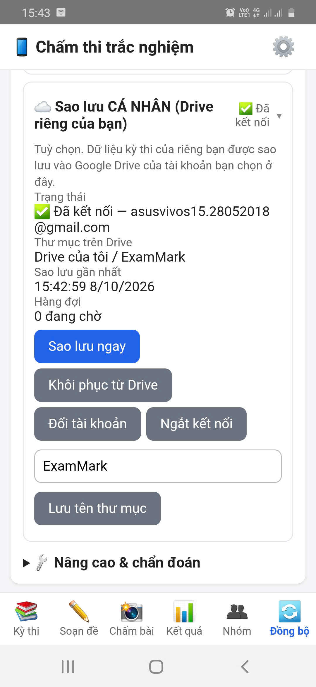
assets/img/shots/14-sao-luu-drive.pngDữ liệu chính nằm trên điện thoại: gỡ app hoặc xoá dữ liệu ứng dụng sẽ làm mất dữ liệu chưa sao lưu. Hãy sao lưu và xuất Excel sau mỗi kỳ thi, và trước khi đổi điện thoại.
Chưa nằm trong sao lưu Drive: ngân hàng câu hỏi, kho hình và danh mục (mục 6), và dữ liệu của chế độ chấm tự luận (mục 15). Hãy xuất Excel ngân hàng, hoặc dùng Sao lưu riêng của chế độ tự luận.
21Tổ chức & thành viên (license tổ chức)
Dành cho người quản trị của trường/tổ bộ môn, trong ⚙️ Cài đặt & Đăng nhập:
- ➕ Thêm thành viên trực tiếp (vào ngay, không cần duyệt) bằng email Google của đồng nghiệp; Khóa/Mở khóa và Mời từng thành viên trong bảng thành viên.
- Hạn mức thiết bị: tổng số “chỗ” do gói/nhà phát triển đặt. Ô mặc định đặt số máy tối đa mỗi thành viên (0 = không giới hạn riêng); cột Máy / tối đa trong bảng thành viên cho phép đặt riêng từng người; bấm Lưu hạn mức thiết bị. Mọi hạn mức đều bị giới hạn bởi tổng của license.
- Quy tắc “giữ chỗ”: chỗ của license = thiết bị đang hoạt động + chỗ đang được giữ. Khi một thiết bị bị gỡ hoặc một thành viên bị xoá khỏi danh sách, chỗ đó được giữ cho đúng tài khoản ấy trong một thời gian (mặc định 30 ngày) rồi tự trả; trong thời gian giữ, chính tài khoản đó đổi máy hoặc được thêm lại sẽ dùng lại chỗ ngay, còn người khác chưa chiếm được. App hiển thị “đã dùng a + h / M chỗ”, danh sách chỗ đang giữ và ngày hết hạn giữ.
- Gỡ thiết bị: quản trị tổ chức chỉ xem danh sách thiết bị; việc gỡ thiết bị đã kích hoạt (máy cũ, mất máy) do nhà phát triển thực hiện — liên hệ qua 📩 Gửi yêu cầu hỗ trợ hoặc email.
- Bài cần review của giáo viên nay được xem ở tab 👥 Nhóm (nút Mở tab Nhóm trong khung quản trị) — xem mục 14.
- 📖 Hướng dẫn & hỗ trợ: 📖 Hướng dẫn trực tuyến mở trang hướng dẫn (khi license có cấu hình địa chỉ), và 📩 Gửi yêu cầu hỗ trợ gửi thắc mắc/báo lỗi tới quản trị hệ thống; bấm Xem yêu cầu của tôi để xem phản hồi. Nội dung gửi chỉ gồm những gì bạn nhập, không kèm dữ liệu kỳ thi.
Nếu tài khoản của bạn không thuộc trường/nhóm nào thì không có chức năng quản lý thành viên. Muốn dùng chung với đồng nghiệp: tạo trường/nhóm mới ở mục Tạo trường/nhóm mới rồi mời đồng nghiệp vào bằng mã mời.
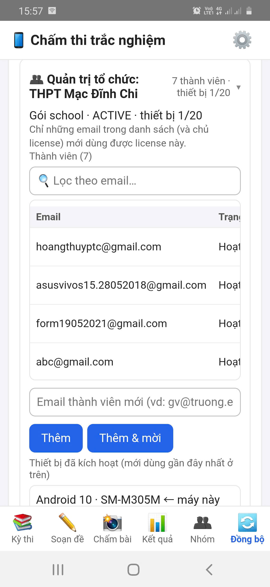
assets/img/shots/15-quan-ly-to-chuc.png22Thử nhanh bằng phiếu mô phỏng
Chưa có phiếu thật để thử? Tab Soạn đề → 🧪 Sinh ngẫu nhiên bài test → 🧪 Sinh phiếu ngẫu nhiên (PDF + CSV đáp án chuẩn):
- App sinh các phiếu đã tô sẵn như học sinh thật (đúng, sai, bỏ trống, tô mờ, tô 2 đáp án xen kẽ) — có thể gán SBD theo đúng thí sinh trong danh sách.
- Xuất ra PDF (mỗi phiếu một trang) kèm CSV đáp án chuẩn để đối chiếu xem điểm máy chấm có đúng không.
- In ra (hoặc hiển thị trên màn hình khác) rồi chụp bằng chức năng Chấm bài để làm quen toàn bộ luồng. Điểm in trên phiếu là điểm tạm tính (ô chưa xác định tính sai).
- Xong nhớ bấm 🗑️ Xoá dữ liệu test trên máy này ở tab Đồng bộ.
Phiếu mô phỏng chỉ để thử, không dùng cho thi thật.
23Mẹo chụp cho chấm chính xác
| Nên | Tránh |
|---|---|
| Đặt phiếu phẳng trên mặt bàn tối màu, đủ sáng, ánh sáng đều | Chụp khi phiếu cong, nhàu hoặc đang cầm trên tay |
| Giữ điện thoại song song với tờ giấy, thấy trọn cả 4 ô vuông góc | Chụp nghiêng nhiều, cắt mất một góc |
| Dùng ánh sáng gián tiếp (đèn trần, cửa sổ) | Bóng tay/điện thoại đổ lên phiếu; đèn flash gây chói loá |
| Chờ ảnh nét rồi mới chụp; lau ống kính | Ảnh rung, mờ |
| Kiểm tra mục “Kết quả nhận dạng” trước khi xác nhận | Bấm xác nhận liên tục mà không nhìn các câu gắn cờ |
24Xử lý sự cố
| Hiện tượng | Cách xử lý |
|---|---|
| Không cài được APK / bị chặn | Cho phép “Cài ứng dụng không rõ nguồn” cho trình duyệt/ứng dụng Tệp; nếu Play Protect cảnh báo, chọn “Vẫn cài đặt” khi bạn tải từ nguồn chính thức. Kiểm tra mã SHA-256 nếu nghi ngờ tệp lỗi. |
| Màn hình báo “Tải quá lâu (>25s)” | Kiểm tra Internet, đóng và mở lại app. Nếu vẫn vậy, gửi ảnh chụp màn hình cho nhà phát triển. |
| Không kích hoạt được | Kiểm tra kết nối mạng, nhập lại mã license không thừa khoảng trắng; mã đã hết hạn hoặc đủ số thiết bị thì liên hệ quản trị/nhà phát triển (lưu ý: chỗ của tài khoản vừa bị gỡ được giữ một thời gian, xem mục 21). |
| App yêu cầu kết nối mạng để tiếp tục quét/chấm | Đã quá lâu chưa xác thực license. Bật Internet một lần để app làm mới license. |
| Chờ lâu ở tab Chấm bài lần đầu | Thư viện xử lý ảnh đang tải (10–30 giây). Chờ hết thông báo rồi chụp. |
| Không nhận được 4 góc / kết quả lệch | Chụp lại theo mục 23: phẳng, đủ 4 ô vuông, đủ sáng. Kiểm tra bản in đã đúng 100% chưa. |
| “Không xác định được đúng mã đề” | Thí sinh tô thiếu/sai mã đề hoặc mã đề chưa khai báo trong kỳ thi. Chọn đúng mã đề ở danh sách rồi bấm Áp dụng. |
| Cảnh báo SBD không khớp mã QR | Đối chiếu tên và ảnh phiếu với thí sinh; có thể phiếu bị tráo hoặc SBD bị tô mờ. |
| Nhập đề Word: câu bị đánh dấu 🟧, công thức hiện thành ảnh hoặc chữ lạ | Đó là công thức dạng ảnh/khung vẽ hoặc loại không hỗ trợ (MathType đời cũ, EMF+, chữ trong khung vẽ). Dùng 🔎 Nhận dạng công thức ảnh → LaTeX (mục 6.9) hoặc bấm ✏ sửa và gõ lại bằng LaTeX; có thể 🚫 Bỏ tất cả câu 🟧 nếu không cần. Chỉ đọc được .docx. |
| Nhận dạng công thức ảnh báo hết lượt/lỗi khoá | Gói miễn phí của nhà cung cấp giới hạn số câu mỗi phút và mỗi ngày. Giảm số câu Song song xuống 1, thêm khoá khác vào kho khoá (app tự đổi khi khoá hết hạn mức), hoặc chờ sang ngày mới. |
| In phiếu có QR bị lệch, QR khó quét | In ở tỉ lệ 100%, đúng khổ giấy, rõ nét; xuất ít hơn 150 phiếu mỗi lần; in thử một tờ rồi quét QR bằng camera app trước khi in cả lớp (mục 8). |
| Giao diện quá to/nhỏ khi chiếu lên tivi | Xoay điện thoại ngang; ở trang Soạn giảng chạm ⋮ → Chế độ tivi đổi Tự động/Bật/Tắt và chọn Bố cục phù hợp; dùng nút ⋮ ở các chế độ khác để chỉnh cỡ chữ (mục 18). |
| Màu cờ cảnh báo nhạt khi dùng giao diện tối | Chuyển tạm sang Sáng ở ⚙️ Cài đặt → 🎨 Giao diện (mục 18.1). |
| Phần III đúng nhưng không được điểm | Kiểm tra đáp án trong khoá: phải là số, tối đa 4 ký tự. Gõ 0.67 hay 0,67 đều được, nhưng không dùng chữ hay khoảng trắng giữa số. |
| Nạp Excel ngân hàng câu hỏi báo lỗi dòng nào đó | Mở bảng xem trước sau 🔍 Đọc & kiểm tra: lỗi nêu đúng số dòng Excel và lý do. Sửa trong Excel rồi nạp lại. Câu lỗi bị bỏ qua; thiếu hình chỉ là cảnh báo. |
| Câu hỏi nạp vào bị “bỏ qua” | Có thể câu trùng nội dung với câu đã lưu (bỏ dấu tick Bỏ qua câu trùng nội dung nếu muốn lưu), hoặc Ma_cau đã tồn tại (câu sẽ được cập nhật chứ không tạo mới). |
| Báo lỗi mã câu khi nhập mã tay | Mã phải đúng dạng MON.LOP.CD.PHAN.MUC.STT, khớp phân loại của câu và không trùng mã khác. Dùng mã tự động để tránh lỗi (mục 6.2). |
| Trộn đề cảnh báo một số câu không đảo phương án | Câu có phương án phụ thuộc vị trí (“Cả A và B…”, “Tất cả…”) hoặc chưa lưu nội dung phương án được giữ nguyên; chỉ thứ tự câu đổi. Xem mục 7.2. |
| Tab Nhóm báo “Tổ chức của bạn chưa cấu hình Group Hub” | Quản trị nhóm chưa thiết lập Hub (mục 14.2a). Chỉ tài khoản quản trị mới thấy ô nhập địa chỉ Hub. |
| Kỳ thi nhóm: “Đề đã được cập nhật” | Bấm ⬇️ Tải đề mới rồi chấm lại; kết quả chấm bằng đề cũ không gửi được. |
| Kỳ thi nhóm: kết quả chưa gửi được | Xem dòng “⏳ … kết quả chờ gửi”; bật mạng rồi bấm 🔄 Làm mới. Kết quả được giữ lại và tự gửi khi có mạng. |
| Quản trị nhóm không chốt được kỳ thi | Chỉ chốt được khi mọi bài đã nộp đều được duyệt. Mở 📋 Kết quả để xem bài nào còn chờ duyệt hoặc cần chấm lại. |
| Chế độ tự luận: nút chấm bị mờ / báo thiếu quyền | License có thể chưa có quyền tự luận hoặc đã hết hạn. Kết nối mạng để làm mới license; nếu vẫn thế, liên hệ nhà phát triển. Xem/xuất/xoá dữ liệu vẫn dùng được. |
| Chế độ tự luận: “Chưa nhập khoá API”, lỗi sai khoá/hết tiền/sai tên mô hình | Vào ⚙️ Cài đặt của chế độ tự luận: nhập khoá, Lấy danh sách mô hình để chọn đúng tên, rồi Kiểm tra kết nối. Hết tiền thì nạp thêm ở nhà cung cấp AI. |
| Chế độ tự luận: báo máy chủ AI quá tải (503/529) | Lỗi phía nhà cung cấp, không phải mạng của bạn. App tự thử lại và có thể chuyển sang mô hình dự phòng; bài còn lỗi thì chấm lại sau. |
| Chế độ tự luận: ảnh không tự ghép vào thí sinh | Tên tệp cần có SBD là một cụm số nguyên vẹn (ví dụ SBD_002_p1.jpg). Ảnh chưa ghép nằm ở Bài chưa gán — gán tay. |
| Chế độ tự luận: biểu ngữ đỏ “Bộ nhớ đầy” | Dữ liệu mới chưa được lưu. Sao lưu (⚙️ Cài đặt ▸ Sao lưu), xoá bớt kỳ thi/ảnh cũ rồi tiếp tục. |
| Không thấy ô chọn chế độ Trắc nghiệm/Tự luận/Phòng thi | Tab Chấm bài ẩn tiêu đề để rộng chỗ camera. Chuyển sang tab khác hoặc mở ⚙️ Cài đặt. |
| Phòng thi: “Chưa nạp được module Phòng thi” | Đăng nhập/kích hoạt ở ⚙️ Cài đặt rồi tải lại trang (hoặc đóng và mở lại app). |
| Phòng thi: Google Sheet không có menu 🌐 ExamRoom | Chờ vài giây rồi tải lại trang. Hãy mở đúng bản sao bạn vừa tạo từ liên kết “Tạo bản sao” của nhà phát triển. Nếu vẫn không có menu, gửi ảnh chụp màn hình cho nhà phát triển. |
| Phòng thi: menu ④ Triển khai báo lỗi | Đọc dòng “Chi tiết kỹ thuật” trong thông báo (nêu nguyên nhân: chưa bật Apps Script API, Workspace của trường chặn, thiếu quyền…). Nếu không khắc phục được, triển khai tay rồi dùng ④b Dán địa chỉ (mục 16.2). |
| Phòng thi: học sinh mở link lại thấy trang đăng nhập Google | Bản triển khai phải đặt Thực thi dưới danh nghĩa: Tôi và Ai có quyền truy cập: Bất kỳ ai. Chạy lại menu ④ Triển khai (menu tự kiểm tra thiết lập này) hoặc sửa bản triển khai tay. |
| Phòng thi: app báo sai khoá hoặc không kết nối được | Lấy lại địa chỉ và khoá bằng menu ⑤ Xem địa chỉ + khoá. Nếu bạn vừa đổi khoá ở menu ②, phải nhập khoá mới ở app và trang giáo viên. |
| Phòng thi: học sinh báo “Mã học sinh không có trong danh sách” hoặc “Mã PIN không đúng” | Xem mã và PIN ở nút 👥 của bài. Nhập sai PIN nhiều lần liên tiếp sẽ bị khoá tạm vài phút. Có thể đổi sang cách vào “Mở: nhập họ tên + lớp”. |
| Phòng thi: gửi email báo vượt hạn mức hoặc lỗi từng thư | Google giới hạn khoảng 100 thư/ngày (tài khoản thường) hoặc 1 500 thư/ngày (Workspace). Gửi tiếp ngày hôm sau; học sinh vẫn xem được kết quả bằng đường dẫn hoặc khi bạn công bố. |
| Phòng thi: “Nhập vào kỳ thi” bị chặn vì câu không khớp | Câu online không tìm được câu tương ứng trong mã đề đích. Chọn đúng kỳ thi/mã đề (nên giao bài từ mã đề để được chọn sẵn), hoặc sửa mã đề cho khớp rồi xem trước lại. Không ép nhập vì điểm sẽ sai. |
| Đăng nhập Google/Drive lỗi | Kiểm tra mạng, thử đăng xuất rồi đăng nhập lại, đảm bảo đã chọn đúng tài khoản Google. Nếu lỗi vẫn còn, gửi ảnh chụp màn hình cho nhà phát triển. |
| Nghi ngờ lỗi của app | Chụp màn hình, sao chép Nhật ký kỹ thuật (tab Đồng bộ), gửi về phanchienmdc@gmail.com. |
25Câu hỏi thường gặp
Dữ liệu của tôi nằm ở đâu? Nhà phát triển có xem được không?
Kỳ thi, danh sách thí sinh, bài làm và kết quả nằm trong điện thoại của bạn. Nhà phát triển không nhận được dữ liệu này. Máy chủ bản quyền chỉ lưu thông tin license và thiết bị. Dữ liệu chỉ rời khỏi máy khi chính bạn dùng: kỳ thi nhóm (đề và kết quả nằm trong Drive/Sheet của quản trị nhóm, không có ảnh); chấm tự luận, nhận dạng công thức ảnh và các nút AI trong Soạn giảng (ảnh/chữ gửi tới nhà cung cấp AI bạn chọn, bằng khoá của bạn); và giao bài online (nằm trong Google của giáo viên). Chi tiết ở Quyền riêng tư.
Tôi gỡ app thì có mất dữ liệu không?
Có, nếu chưa sao lưu hoặc xuất ra tệp. Hãy dùng sao lưu Google Drive và xuất Excel/CSV sau mỗi kỳ thi.
Dùng được trên mấy điện thoại?
Số thiết bị phụ thuộc gói license (gói dùng thử mặc định chỉ 1 thiết bị). Với license tổ chức, mỗi thành viên có hạn mức thiết bị riêng do quản trị tổ chức phân bổ trong phạm vi tổng của license; muốn gỡ thiết bị cũ, liên hệ nhà phát triển (xem mục 21).
Có chạy trên iPhone không?
Có, dưới dạng bản web (PWA) dùng chung mã với bản Android. Apple không cho cài tệp APK nên bạn mở bản web bằng Safari, chạm nút Chia sẻ, chọn Thêm vào Màn hình chính, rồi luôn mở app bằng biểu tượng mới (Safari và app trên màn hình chính là hai kho dữ liệu riêng). Xem hướng dẫn từng bước. Lưu ý: dữ liệu nằm trong bộ nhớ trình duyệt, hãy sao lưu thường xuyên (xuất Excel/CSV, sao lưu Drive); tệp xuất được lưu qua bảng chia sẻ của iOS (Lưu vào Tệp); camera chụp từng ảnh phiếu; bản này chưa được thử trên iPhone thật nên hãy chấm thử trước.
Tôi xoá dữ liệu Safari / đổi iPhone thì sao?
Dữ liệu của bản web nằm trong trình duyệt nên sẽ mất nếu chưa sao lưu. Máy sau khi xoá dữ liệu được tính là thiết bị mới trong license; hãy liên hệ tác giả/quản trị để dùng lại chỗ, rồi khôi phục từ bản sao lưu Drive hoặc tệp đã xuất.
Đăng nhập Google trên iPhone báo lỗi hoặc không mở được?
Trong app đã thêm vào màn hình chính, cửa sổ đăng nhập Google đôi khi không mở được. Hãy kích hoạt bằng mã OTP gửi qua email và sao lưu bằng tệp (hoặc thử lại đăng nhập Google khi mở bằng Safari để sao lưu, rồi quay về app).
Trên iPhone tôi không thấy “Thêm vào Màn hình chính”, phải làm sao?
Thường do bạn đang mở trang trong trình duyệt nhúng của Zalo/Facebook/Messenger. Hãy chạm ⋯ (hoặc biểu tượng la bàn) rồi chọn Mở bằng Safari, sau đó chạm nút Chia sẻ và kéo xuống tìm mục này. Nếu vẫn không thấy, cuộn đến cuối danh sách hành động.
iPhone cứ hỏi quyền camera, hoặc camera không mở?
Hãy cho phép camera khi iOS hỏi (iOS có thể hỏi lại mỗi lần mở app web). Nếu lỡ từ chối: Cài đặt → Safari → Camera (hoặc Cài đặt → Quyền riêng tư & Bảo mật → Camera) và đặt lại cho ExamMark-PTC, rồi vuốt tắt hẳn app và mở lại. Hãy mở bằng biểu tượng ngoài màn hình chính.
Tôi có thể tự thiết kế phiếu khác không?
Bạn tạo được mẫu theo số câu, khổ giấy, số phương án, số chữ số SBD/mã đề (tuỳ gói license). Bố cục từng khung do app quyết định để bảo đảm chấm chính xác.
Điểm máy chấm có thể sai không?
Có thể, nhất là với ô tô nhạt, tô đôi hoặc ảnh kém. Vì vậy app luôn gắn cờ “Xem lại” cho tình huống không chắc chắn. Giáo viên cần kiểm tra các câu này trước khi công bố điểm.
Có nhập câu hỏi từ file Word/PDF vào ngân hàng được không?
Word (.docx): có. Ngân hàng đọc trực tiếp đề .docx (kể cả công thức Equation/MathType và hình), cho bạn xem trước, sửa rồi mới lưu; công thức dạng ảnh có thể nhờ AI đổi sang LaTeX. Xem mục 6.8 và 6.9. PDF và .doc (Word cũ): chưa — hãy lưu lại thành .docx hoặc nạp bằng Excel/CSV (mục 6.4).
Mã câu hỏi “7 đoạn” là gì? Câu cũ của tôi có bị đổi mã không?
Mã mới có thêm đoạn dạng toán (MON.LOP.CD.DT.PHAN.MUC.STT, ví dụ T.10.01.03.I.2.0007). Mã cũ 6 đoạn không bị đổi, được hiểu là dạng 00; câu mới luôn có mã 7 đoạn. Xem mục 6.2.
Đề có câu tự luận thì phiếu và máy chấm xử lý thế nào?
Câu tự luận là Phần IV trong ngân hàng: không có trên phiếu trắc nghiệm, không ảnh hưởng điểm chấm bằng camera, nhưng vẫn in cùng đề và tham gia trộn đề. Bạn chấm riêng hoặc chuyển sang chế độ Chấm tự luận bằng nút “✍️ Chuyển câu Phần IV…”.
Soạn giảng (NLS giáo án) báo “chỉ dành cho người đã đăng ký license” — làm sao?
Chức năng này mở khi license của bạn có quyền “Soạn giảng” hoặc khi giấy phép chung của nhà phát triển đang mở. Bấm Làm mới license (cần Internet) nếu bạn vừa được cấp quyền; nếu vẫn bị chặn, liên hệ nhà phát triển. Dữ liệu NLS trong máy không bị xoá. Xem mục 17.1.
Dùng giao diện tối có làm chấm sai không?
Không. Chế độ sáng/tối chỉ đổi cách hiển thị; việc nhận dạng phiếu đọc ảnh gốc của camera. Xem mục 18.1.
Mã đề sau khi trộn có chấm được ngay không?
Có. Sau 💾 Lưu các mã đề vào kỳ thi, các mã mới được ghi kèm đáp án đã trộn nên máy chấm nhận ngay. Chỉ cần mã đề vừa với số cột mã đề trên mẫu phiếu. Xem mục 7.
Kỳ thi nhóm: quản trị hệ thống/nhà phát triển có xem được kết quả của nhóm tôi không?
Không. Dữ liệu nằm trong Group Hub do chính quản trị nhóm sở hữu; ảnh bài làm không được gửi lên. Nhà phát triển chỉ cấp license và hỗ trợ kỹ thuật. Xem mục 14.
Chấm tự luận bằng AI có chính xác không? Có tốn tiền không?
AI chỉ đề xuất điểm; giáo viên xem bản chép, sửa điểm và duyệt. Chữ khó đọc hoặc công thức phức tạp có thể làm AI sai nên cần kiểm tra. Chi phí gọi AI do nhà cung cấp (Gemini/OpenAI/Claude) tính trên khoá API của bạn, không thuộc license ExamMark-PTC. Chức năng đang ở giai đoạn thử nghiệm. Xem mục 15.
Chấm tự luận có gửi bài của học sinh lên mạng không?
Có, khi bạn bấm chấm: ảnh bài làm và đề/đáp án/barem được gửi thẳng từ máy bạn tới nhà cung cấp AI đã chọn (không qua máy chủ của ExamMark-PTC). Hãy cân nhắc quy định bảo vệ dữ liệu của trường. Chỉ chọn Chấm trắc nghiệm thì ảnh phiếu không rời khỏi máy.
Giao bài online: học sinh có cần tài khoản Google không?
Không. Học sinh chỉ cần đường dẫn (hoặc mã QR) và mã học sinh + PIN, hoặc họ tên + lớp tuỳ cách bạn chọn. Chỉ giáo viên cần tài khoản Google để tạo Phòng thi của mình.
Giao bài online: dữ liệu bài làm nằm ở đâu? Nhà phát triển có xem được không?
Nằm trong Google Sheet và Drive của chính bạn, trong Phòng thi do bạn tự triển khai với khoá riêng. Nhà phát triển ExamMark-PTC không nhận được bài làm, họ tên hay điểm. Hãy chỉ chia sẻ quyền sửa Sheet cho người tin cậy, vì người sửa được Sheet xem được khoá và PIN.
Giao bài online có chống gian lận được không?
Chỉ ở mức răn đe và ghi bằng chứng: phát hiện rời màn hình, tự nộp sau số lần cho phép, trộn đề riêng cho từng em. Không chặn được chụp màn hình hay thiết bị thứ hai. Thi quan trọng nên có giám thị (xem mục 16.5).
Giao bài online có tốn phí không? Tối đa bao nhiêu học sinh?
Phòng thi chạy trên dịch vụ miễn phí của Google nên không có máy chủ riêng để trả phí, nhưng chịu hạn mức của Google (đồng thời, email mỗi ngày). Nên để không quá khoảng 150 em vào thi cùng lúc và giãn giờ vào với lớp đông (xem mục 16.9). Nhập kết quả online vào kỳ thi trong app tính 1 lượt quét cho mỗi bài theo giấy phép của bạn.
Tôi muốn ủng hộ tác giả thì làm thế nào?
Cảm ơn bạn! Hoàn toàn tự nguyện, xem trang Tác giả & Ủng hộ để biết cách mời tác giả một ly cà phê (hoặc các cách tiếp sức miễn phí như giới thiệu cho đồng nghiệp, báo lỗi, góp ý).
Không tìm thấy câu trả lời? Gửi email cho phanchienmdc@gmail.com kèm ảnh chụp màn hình.